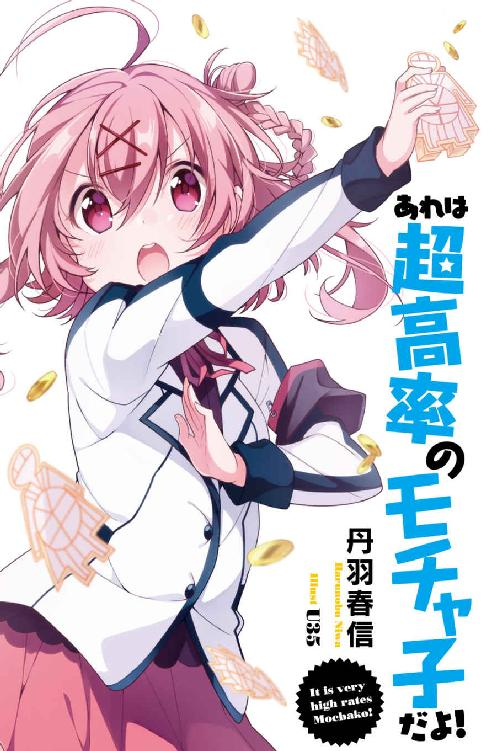

| あれは超高率のモチャ子だよ！【電子特別版】 (角川スニーカー文庫) | |
| 丹羽 春信 | |
| (2015) | |

あれは超高率のモチャ子だよ！【電子特別版】
丹羽春信

角川スニーカー文庫
本作品の全部または一部を無断で複製、転載、配信、送信したり、ホームページ上に転載することを禁止します。また、本作品の内容を無断で改変、改ざん等を行うことも禁止します。
本作品購入時にご承諾いただいた規約により、有償・無償にかかわらず本作品を第三者に譲渡することはできません。
本作品を示すサムネイルなどのイメージ画像は、再ダウンロード時に予告なく変更される場合があります。
本作品は縦書きでレイアウトされています。
また、ご覧になるリーディングシステムにより、表示の差が認められることがあります。
「あたしたちのモチャ子が爆発しました！」
幼馴染のユイが大慌てで駆け込んできた。
ユイのアホ毛も、慌てふためいている。
ユイにとって、あのアホ毛はまるで可愛い我が子のようなもの。目に入れても痛くないくらい、愛しているのだ。老後は面倒みてもらおうと思っているのだ。
「なに、モチャ子が？」
「モチャ子がです！」
モチャ子とは貨幣──帝釈学園で流通している、特殊な紙幣のことだ。
モチャ子の名称は、とある偉人『帝釈モチャ』から取られた。
出自も人種も死に様も不明な、謎多き人物である帝釈モチャ。彼は友達の家に遊びにきた気楽さで、歴史の表舞台に現れた。
戦後、連合軍が日本を占領していたころの話だ。
そのとき、帝釈モチャはまだ十代だった。彼は連合軍の下っ端に近づき、甘言を弄して大量の煙草を輸入させた。あげくその煙草を横取りし、ヤミ市で捌き一儲けした。
これだけでもたいしたものだが、帝釈モチャの伝説はここからはじまる。
ヤミ市での儲けを軍資金に、帝釈モチャは鉄鋼産業の株を買い占めた。そうして市場を操作し、莫大な金を得た。天文学的な『カネ』だ。
しかし、この世の栄華を極めた帝釈モチャは、ある日忽然と姿を消した。
まるで、ゲームに飽きたのでやめたかのように。
そんな彼が『飽きる』前、最後になした仕事があった。
それが学校の創立──おれとユイが入学した、帝釈学園である。
「つーか、モチャ子が爆発するはずないだろうが」
「爆発しました！ 運んでいたら、モチャ子がチクタク言い出してドカンですよ！」
ユイは断固として言い張った。
幼げな顔立ち、華奢な肢体、貧乳──この子犬のような、そして子犬並みにアホな少女。こいつがなにかを断固として主張するときは、よほど切羽詰まっているのだ。
五分前、ユイはここ配当局を出発した。
目的は上納金を納めにいくことだった。
目を閉じれば、いまでも出立するユイの、自信満々な顔つきを思い浮かべられる。
どちらが上納金を持っていくかで揉め、おれたちは正々堂々とジャンケンで決めた。ユイは96％の確率ではじめにパーを出すので、おれはチョキを出せばまず勝てる。
だが勝ってから心配になった。
「お前、ちゃんと運べるのか？」
おれの問いかけに、ユイは自信に満ちた笑顔。親指をグイと上げてまでみせて。
「任せてくださいよ、晃さん。あたしはやるときはやる子ですよ」
やるときはやる子のユイは、どうもやらかしたらしい。
「おい、ユイ。正直に話せよ。モチャ子は爆発なんかしないからな」
「いえいえ、一万回シェイクすると爆発します。これ、マジです」
「するか、ボケ！ 一万回シェイクで爆発って、それどんな紙幣だ！」
いい加減、本題に切り込む頃合だ。
いつ『あの人』が帰還するかもわからないことだし。
「お前、上納金を強奪されたわけか」
ユイが口をあんぐり開けた。
「な、なぜそれを？ まさか晃さん、あれですか、超能力的な？」
溜息が出てしまう。「お前みたいな天然記念物クラスのアホが、どうして帝釈学園に入学できたんだろうな？」
「晃さん。あたしが帝釈学園に入れた理由は、ただ一つです！」
ユイは胸を張って──なだらかな起伏なので、いくら張っても効果はない──ほざいた。
「ずばり、愛の力です！」
おれが絶句していると、ユイは耳まで真っ赤にして、顔を両手にうずめた。
「きゃ、言っちゃいましたよ、言っちゃいましたよ。つまり、この『愛の力』とは、晃さんを思ってのことなのですよ」
やはり謎は深まるばかりだ......こんなアホな子が。
帝釈モチャの『忘れ形見』である帝釈学園は、俗にいうエリート校だ。それも、『超』をつけても、『つまらないものですが』と差し出された手土産のように謙虚なほどの。
帝釈学園の卒業生には、政財界で成功をおさめている者が多い。日本中の『成功者』を一箇所に集め、投石してみよう。高確率で帝釈卒業生に命中するはずだ。
そんな帝釈学園だというのに──いや、だからこそ、か？──ここには風変わりな『社会』が成り立っている。
それがモチャ子によるモチャ子経済だ。
モチャ子経済には、二つの大原則がある。
第一の原則は、『モチャ子の豊かさこそが、帝釈生徒の価値になる』だ。モチャ子による富者は、そのまま生徒の『地位の高さ』を意味する。モチャ子貧者は、たとえ相手が下級生だろうと、富者にひれ伏さねばならない。帝釈学園の階級は、モチャ子が決めるのだ。
この第一原則に続く形で、第二の原則がある。それは『モチャ子で買えないものはない』だ。帝釈では単位や推薦入試の権利だって、モチャ子で購入できる。ゆえに帝釈生徒としての成功は、将来的な有利にもつながるのだ。
だからこそ新入生は、モチャ子を集めようと努力する。必死になって。
だがすぐに、それが虚しい行為と知ることになる。なぜなら、モチャ子は常に一部の権力者に流れ込むようにできているからだ。モチャ子経済が、そのように機能しているのだ。
それを促進しているのが、二大組織による帝釈社会の統治だ。
執行局と公安局という二つの組織は、長らく帝釈社会を支配し、かつ冷たい戦争を続けてきた。帝釈生徒の99％は、この二大組織のどちらかに属している。
帝釈社会で生き延びるには、そうするしかない。
というのに、だ。両組織に属さず、孤高を貫いちゃっている組織があるのですね。
それが配当局。おれとユイの所属する、第三の組織だ。
とはいっても、配当局は二大組織に毎月、上納金を納めている。だが、ふつうならいくら上納金を積もうとも、無所属の勢力が生きていけるほど帝釈社会は甘くない。
いま、配当局が存在しているのは『あの人』こと三島ナツのカリスマ性によるところが大きい。逆に言えば、三島ナツをもってしても上納金は必要だった、ということ。
そして、そんな大切な上納金を鮮やかに奪われたのが、おれの幼馴染。
「ユイ。上納金が失われたということは、両局に納めることができない、というわけだ」
「はい」
「すると、どうなるか。お前のその、アホ毛に侵食された脳味噌でもわかるだろう？」
ユイはムッとした様子で、「なに人のチャームポイントを侵食生命体みたいな扱いしているのですか」
「わかった。お前ももう真実と向き合っていいころだ。いいか、ユイ。アホ毛とは、な」
「アホ毛とは？」
「ただの寝癖だ」
心臓を射貫かれでもしたように、ユイは衝撃を受けた。
「そ、そ、そそそそそ、そんな......」
「とにかく、だ。執行局と公安局にとって配当局は目の上のたんこぶだ。上納金を納められなかったら、それを口実に配当局は取り潰されてしまうぞ。そんなことになったら......」
......あれ、それって凄く好都合なんじゃないか？
だっておれは嫌々、配当局に入れられているわけだからな。無理やり。そう、恐るべき三島ナツによって──
先ほどから話に出てくる『あの人』あるいは、三島ナツとは何者か。
三島さんの恐ろしさを物語る伝説は、それこそ星の数ほどある。
たとえば。モーセが十戒の力で大海を割ったときのこと。海水浴に来ていた三島さんが、「これでは泳げないわ。喧嘩を売っているの？」と文句を言った。すると、ガクブルになった大海原は割れるのをやめ、モーセと愉快な仲間たちを海中に沈めたという。
まあ、伝説はさておき。
実際、三島さんは凄いことをしてきた。おれの帝釈歴は浅いが、それでもわかる。執行局と公安局に抗い、確固とした地位を築くということは、常人ができることではない。
とはいえ、どうして三島さんが配当局などという独立組織を作ったのか。それはわからない。たしかに三島さんは人に使われる性格ではない。しかし、それなら二大組織のどちらかで、トップを目指せばよかった。三島さんなら、それも可能だったはずだ。
なぜ、自ら苦しい立場に身を置くのか。
三島さんがマゾだというのなら、話は簡単なのだが。あの人が根っからのドＳであることは、三島ナツ歴の浅いおれでも、よーくわかっている。もう身に沁みています。
とにもかくにも。
「よく聞け、ユイ。これはチャンスだぞ」
つい声が低くなった。
おれはまわりを見回す。三十畳ほどの広さの部屋だ。床には、オーク、マホガニー、トネリコなど多種多様な木材がランダムにはめ込まれている。部屋の一角には、重厚な暖炉がある。帝釈は全室冷暖房完備なので、あの暖炉の出番はいつくるのだろうか。
この暖炉といい変てこな床といい、三島さんが暇つぶしに造ったものだ。部屋の隅には、応接セットが置かれている（そこのソファがおれの定位置）。
帝釈学園の東棟の三階にあるこの一室こそ、叛逆精神に満ちた配当局の本拠であり、三島ナツの居城だ。
いま主の三島さんは留守にしている。とはいえ、警戒しておいて損はないぞ。
「チャンスですか？」
きょとんとした顔で、ユイが聞いてきた。
「そうだ。この配当局から逃げるための、千載一遇の好機だ」
上納金が納められないとなれば、そのときが配当局最後の日となるだろう......たぶん。
ここで『たぶん』というのは、三島さんなら、どんな窮地でも引っくり返してしまいそうに思えるから、だが。
いまは、上納金なし＝配当局の終焉、と解釈しておこう。すると、どうなるか？
配当局がなくなれば、おれがそこの一員でいる必要もなくなる！
「すなわち、それは配当局からの解放を意味する！」
「やれやれ」ユイは呆れた様子でかぶりを振った。「本心ではないくせに、です」
「いや本心だから」
「あたしは知っていますよ。晃さんが、じつは配当局のこと大好きなのを」
「いやいや、なにを言っちゃっているのかな。おれは好きじゃないよ。寿司ネタで海栗が好きじゃないように好きじゃないよ」
「晃さんの大好物って、海栗でしたよ」
そうだっけ？ 最近、寿司屋とか行ってないから忘れていた。
「そんなことはどうでもいいんだよ！ とにかく、おれは自由になる！ 上昇気流を得たアホウドリのように飛翔する！」
「はいはい、どうせ帰巣本能が、配当局へと晃さんを導くのですからね」
なぜか年上のお姉さんに諭されているような感じがする。アホ毛のくせに。
「それより、晃さん。あたしはどうなるのです？ 配当局をピンチに陥れたあたしは？」
「三島さんの怒りのカミナリをもろに受けるんじゃないか？」
「他人事ですか！ あたし、三島さんのカミナリなんか嫌ですよ！ まだ、雷雨の日にゴルフ場行って、天然産を食らったほうがマシです！」
「潔く受けなさい。その避雷針みたいなアホ毛で、三島イカズチを食らいなさい」
「避雷針とはなんですか、避雷針とは......ちょっと格好いいですね」
「だいたい、これはお前の自業自得だよ。上納金を奪われたお前の、さ」
「自業自得とはなんですか、自業自得とは。三島さんは、確かにこう言いましたよ。『晃くんとユイちゃん、二人で責任をもって上納金を納めてきてね』って」
「え、じゃあ、おれも同罪？」
「そうです！ 晃さん、地獄に落ちるときはあなたも一緒です！ あたしの傍にはいつも晃さんがいるのです！」
ビシッと言い切ってから発言が恥ずかしかったらしく、顔を真っ赤にするアホ毛の子。
そのとき、廊下から足音が響いた。静かに、響いた。
三島さんに違いない。
破滅が、破滅が静々とやってくる。あれ、ちょっと詩的なこと言ってしまった？
「晃さん、どうするんですか！ 破滅が静々とやってきますよ！ あれ、ちょっと詩的なこと言ってしまいました？」
くそ。こうなったら三島さんがやってくる前に、上納金の在処だけでも知っておかねば。
「ユイ、落ち着いて考えてみろ！ お前、上納金をどこの馬の骨に奪われたんだ！」
「あなたこそ落ち着きなさいよ、晃さん！ ちょっと順を追って話させてください」
「そうだな。事の起こりから話してみろ」
「はい。事の起こりはこうです。あたしのママとパパが月の綺麗な晩に●オ姦したところから、すべてが始まりました。そのとき授かった宝物が、このあたしです」
「戻りすぎた！ それは事の起こりに戻りすぎた！」
「ちなみに通報され、あえなく御用です。もし警察が駆けつけるのが三分早かったら、あたしは生まれていませんでした。ふう、パパが早い人で良かったですね」
「ユイさん。もっと歴史の針を進めてみようか。もっと後のほう、ずっと後のほうに」
ユイは悲しげに肩を落とした。
「精管切断されました」
「その歴史の針じゃない！ お前の親父さんの歴史の針じゃない！」
ああ、もう間に合わない。こうなったら、逃げの一手しかあるまい。
「ユイ、逃げるぞ！ 幸いここにはベランダがある！ ベランダ越しに隣室へ移動、あとは野となれ山となれだ！」
おれはユイの手を握り、掃き出し窓を開けた。
昼下がりの陽光が、差し込んでいる。おれの勇気を祝福するが如く。
「配当局という牢獄から、自由の身になるぞ！」
ベランダへと逃走の第一歩を踏み出す。が、ユイを引っ張った腕が止まった。
「なんという愚かさですか、晃さん！ 恥を知りなさいです！ この配当局は、三島さんの血と涙とハラワタの結晶！ そして、あたしたちには配当局の一員としての誇りがあるのです！ それを捨てようというのですか、桜几晃！」
張り上げたユイの声を聞きながら、おれは口をポカンと開けたまま凍りついた。ここでユイが死に物狂いの大演説をする理由は、一つしかない。
おれは、ゆっくりと後ろを振り向いた。
配当局の入口に、三島さんの御身があった。
三島さんは絶世の美女だ。甘い飴色の瞳。透きとおるように白い肌。胸はゆたかで、肢体はしなやか。夜闇のような髪はとても長くて、お尻のあたりまで達している。
「げ。三島さん」おれは三島さんと視線をあわせてしまった。
三島さんの瞳には、猛獣用の罠のように相手をつかんで離さない力がある。そして次第に相手の生命力を奪っていき、最後には死に至らしめるのだ。
三島さんは柔和に微笑んだ。
「晃くんの率直な気持ちを知ることができて、嬉しいわ。そうだったのね。晃くんにとって、配当局は牢獄のイメージだったのね」
三島さんは吐息をついた。
「悲しいわ、晃くん。わたしはとても悲しいわよ」
ここは攻めに転ずるしかあるまい。
「なにを言いますか。おれは配当局に命をかけていますよ！」
呆れ果てた、という顔でユイがほざく。「『白々しい』を辞書で引いたら、晃さんのドヤ顔があるのですね」
「配当局のためなら急行列車の前にだって、飛び出せませんからね！」
「飛び出せないのですかい！」
「けどユイならぶん投げることはできます！」
「あたしならぶん投げられるんですかい！」
「ユイちゃんをぶん投げてはダメよ」三島さんがやんわりと注意した。
「三島さん！ あたしのためを思って！」ユイが感涙でウルウルした。
「ご両親が配当局を訴えてくるわよ。そうしたら、たまったものではないわ」
「三島さん、うちの親は配当局を訴えたりしません！ だからどうか、あたしをぶん投げてください！ 三島さんのためなら、急行列車どころか新幹線にだって飛び込めます！」
「ユイ、汚いぞ！ ここでポイント稼ぎか！ この迎合するアホ毛め！」
「うるさいですね、白々しい晃！ 精管切断しますよ！」
「なんて奴だ！ この万年寝癖！」
「あ！ それを言っちゃおしまいですよ！ あたしは容赦しませんよ！」
おれはアホ毛を引っ張り、ユイが向こう脛を蹴飛ばしてくる。そんな無益な争いを続けていたら、三島さんが「目障りね」とつぶやいた。
おれたちはパッと戦闘を中止し、その場に正座した。
三島さんはソファに腰かけ、足を組んだ。
「それで、ユイちゃん。小耳にはさんでしまったのだけれど。上納金を奪われてしまった、というのは本当なの？」
慈悲に満ちあふれた声音で、三島さんは尋ねるのだ。ちなみに声音が慈悲に満ちあふれているからといって、当人が慈悲に満ちあふれているわけではない。
ユイはビクッと身を震わせた。
「は、はい、三島さん。ごめんなさい。けど、あたしも奮戦したのですよ。配当局の上納金を渡してなるものかって。けれど奮闘努力むなしく、あたしは敗れてしまいました。うう、あたしがもっと強ければ......」
「そう。奮闘努力したのね。偉いわよ、ユイちゃん」
三島さんの右手が差し出されると、ハッとしてユイが這っていく。三島さんはユイがきたところで、アホ毛つきの頭をなでた。いい子、いい子、と。
「では上納金を誰に奪われたか、ちゃんとわかっているのよね？」
三島さんの問いかけに、ユイの瞳から生気が失われた。
どうせ奮闘努力なんて噓で、犯人も見ちゃいないんだろう。ザマアミロ、ユイ。
ユイはゆっくりと瞬きした。すると、頭上に電球がぴかりと光った。ユイの奴、抜群な言い訳（ユイ的には）を閃いたというのか。眩しいぜ、ユイ。
「犯人は透明人間だったのです！」
おお凄まじい。これがユイの底力だというのか。
「そんなはずがないでしょう？」
「はい。そんなはずがありませんね」
早い。敗北を認めるのが早い。
「正直に話してみなさい。わたし、怒らないわよ。宝くじで一等が当たる確率で、ね」
ユイは希望に顔を輝かせた。「え、本当ですか？ まったく怒らないのですね？」
「おい、ユイ。お前はなにを聞いていたんだ。宝くじ一等の確率だぞ。それがどんなものかわかって──」
いや、まて。それは一般人の確率にすぎない。三島さんは『宝くじで一等が当たる確率』と言ったが、このとき『一般人の場合』とは指摘しなかった。となれば、この場合の『宝くじで一等が当たる確率』とは、三島さんにとっての確率。
そして三島さんに限っていえば、一等が当たる確率は ％だ。もう『当たりくじ』が虚数空間を通って、三島さんの手元にゆくのだから。
％だ。もう『当たりくじ』が虚数空間を通って、三島さんの手元にゆくのだから。
三島さんは瞬きした。長い睫毛が躍る。
「そうね......わたしは怒らないわよ」
なんか知らんが、ユイが三島さんから一本とったぞ。そうか、隕石が降ってくるのだな。
三島さんの言質もとったので、ユイは安堵した様子で話した。
「上納金を運んでいる途中で、後ろから声をかけられたのです。目をつむって、逆立ちできるものならしてみろ、って。あたし、逆立ちには一家言もっているのですよ！」
誇らしげなアホ毛。なにに一家言もっているのかな、この子は？
「それで、目をつむりパッと逆立ちしてみせたわけです」
「まて、まて。制服のまま逆立ちしたら、スカートがめくれるだろうが。お前の水玉パンツが、帝釈デビュー飾っちゃうだろうが」
「大丈夫です。スカートの下にはハーフパンツをはいているので。帝釈デビューの心配はありません。あたしの水玉は安全圏です」キッパリと言い放つユイ。
「あそう」
「で、逆立ちして『どんなもんだい！』していたところ、上納金が消えていました。あたし、しょんぼりです。アホ毛も、しょんぼりです」
アホ毛と本体がしょんぼりした。
三島さんはしばしユイを見つめてから、驚きを顔に表した。
「本当なのね？ 場を和ませる笑い話とかではなく？ 真実だというのね？」
「えへへ。いくらあたしでも、こんなときに場を和ませる笑い話はしませんよ」
そうだね。場が和むことはなかったもの。
ああ、体感温度が下がっていく。三島さんから、怒りが冷気として放たれているせいだ。
ユイがヒッと叫んで、おれの後ろに隠れた。顔だけ出して、弱々しく抗議の声を上げる。
「お、怒らない約束ですよ。三島さん」
三島さんから発せられる氷刃のような怒気が、徐々に消えていく。
「怒ってはいないわよ、ユイちゃん」
そしてにっこりと微笑んだ。
やはり三島さんともなると、忍耐力も ＬＢクラスのようだ。
ＬＢクラスのようだ。
「わかったわ、もうわかったわ、ユイちゃん。あなたのアホには底がないのね。無限なのね。あなたのアホをエネルギーに変えることができれば、世界中がアホに満ちたエコの恩恵を受けることができるのね」
「わぁい。三島さんに褒められましたよ？」
ユイも、疑問形で喜ぶくらいの頭はあったのだ。
そこでおれは親切に訂正してやるのだ。
「いや、三島さんはこれっぽっちもお前のことなんか褒めてないからな」
「ああ、やっぱり」
ユイのアホ毛がしな垂れた。
三島さんは気を取り直して、しとやかに微笑した。
「いいわ。過ぎ去ったことを後悔しても仕方ないものね。あなたたちの失態も、すでに人生という大河を流れていったのだわ」
気のせいだろうか、おれも責められているような気がする。
いや、気のせいではないだろう。だって、三島さんの射貫くような視線が、おれに向けられているもの。ドンピシャリだもの。
「では、晃くん、ユイちゃん。責任をもって上納金を奪還してきなさい。日暮れまでには、上納金問題がきれいに片付いていることを、わたしは望むわ。できなかったら──」
「で、できなかったら？」
おれは息を吞んで尋ねた。
三島さんはやんわりと言った。
「聞きたいの？」
「行ってまいります！」
おれはユイの襟首をつかんで引きずり、配当局からそそくさと退散した。
廊下に出てから、おれは思いきり溜息をついた。
面倒だが、とにかく上納金を取り戻さねば。おれの学園生活にはもう安寧は訪れまい。
「で、ユイ。お前、どこで逆立ちしたんだ？」
「こっちです」
ユイはすたすたと歩き始めた。廊下を進み、角を曲がり、階段を下り、踊り場で止まる。
「現場は、ココです」
「早っ！ 配当局を出発して三十秒も経ってないぞ！」
「そうです。配当局とは目と鼻の先、強奪犯たちの大胆不敵な犯行ですね」
「うーむ。確かに、これは大胆だな......それとも単に、ユイがアホであることを見こしての犯行か？ あれ、お前、いま『強奪犯たち』と言わなかったか？」
「はい。犯人は見ませんでしたが、二人いたのは確かですよ。足音も複数分でしたけど、なによりも小声で会話していましたからね」
ユイはニッと笑って、指を二本立て、ぐいっと突き出してきた。
「そうか。犯人は二人か」
この強奪事件は、扱いを間違えられない爆弾だ。帝釈学園の全生徒数は五千人以上。すると、容疑者は五千人いるように思える。
だが、帝釈は完全に公安局と執行局で分離されており、双方に属する生徒は絶対の忠誠を誓わされている。ならば強奪事件の犯人も、どちらかの組織の者で、なにより組織からの命令で動いた、と考えるのが妥当。
さすれば、容疑者はたった『ふたり』ということになる。
つまり、公安局か執行局のトップのどちらかだ。そして犯人がどちらであっても、おれたちが上納金を奪い返すのは不可能だろう。少なくとも正攻法で、おれが強奪犯を見つけ弾劾したとしても、強奪犯は組織に守られ、配当局の一員など相手にはされないはずだ。
ならば、正攻法はダメだ。
では、二大組織という構図をうまく利用するやり方ならばどうか？
たとえば、公安局がこの強奪事件を起こしていたとしよう。その事実を執行局が明らかにしたならば、公安局を弾劾するはずだ。たとえ被害者が配当局だったとしても、無視は決め込めないだろう。試してみる価値はある。
ちなみに、何かしらのトラブル対処や解決のために、公安局の傘下には捜査部があり、執行局の傘下には探偵部がある。
「いまの段階では、片方には絞れない。そこで、だ。これから探偵部／捜査部に行き、強奪事件の犯人捜しを依頼するぞ」
「アイアイ、晃さん」
さて。帝釈の校舎は大きく五ブロックに分かれている。
まず中央棟。これは帝釈の中心だけあって、もっとも広い建物だ。一方で、階数は一番低く三階までしかない。どういうわけか、中央棟の通称は〈冷ややっこ棟〉。なぜその名で呼ばれているのか、もう知る者はいないそうだ。
冷ややっこ棟から東西南北の位置に、一棟ずつ建物がある。東西南北の棟はすべて五階建てだけど、棟同士を移動することはできない。連絡通路は繫がっていないし、そもそも一階に出入口もない。基本的に、東西南北の棟に行くには、冷ややっこ棟から連絡通路で渡るしかない。面倒な作りなのだ。
東西南北冷ややっこ棟以外には、講堂、図書館、その他もろもろの部室棟などがある。さらに山脈の如く聳える学生寮。これらの建物が、広漠とした敷地内に広がっている。
おれとユイは、まず探偵部に向かった。冷ややっこ棟を経由して、西棟の三階へ。
こうして校内を歩いていれば、たくさんの公安局員及び執行局員とすれ違うことになる。
二大組織の連中は、自陣が支配している領域しか歩かない。たとえば三階の廊下で、支配領域が中央で分かれていたなら、連中は自分たちが支配している側しか通らない。
どうしても敵陣営を通過せねばならないときは、どうするか？
それはその生徒の地位によってかわる。
仮に敵陣営でも、モチャ子富者には最低限の礼儀が尽くされる。なので彼らは早足くらいで十分。幹部クラスともなれば、どこでも威風堂々と歩ける。
一方で、モチャ子貧者は、死に物狂いの駆け足が必要。もし敵陣営にいるところを発見されたらただではすまない。
そもそもモチャ子貧者は、自陣内でも迫害される。モチャ子の貯蓄量が低い＝人間としての価値が乏しい＝人間存在そのものが格下。こういった等式が、この帝釈社会では成り立ってしまう。空気のように、当たり前に。
さて。おれとユイもモチャ子的には貧者。
しかも、どこを歩いても敵陣営だ。ところが、おれたちはめったに文句を言われない。
それは配当局が一目置かれているから、では断じてない。
ようは皆さん、配当局とは可能なら会話さえしたくないのだ。それほどまで忌み嫌われているのだね。二大組織の生徒（帝釈生徒の99％）にとって、おれたちは『いない者』も同然なのだ。もう慣れたけどね。
おれとユイは探偵部に到着。嫌忌される配当局でも、正式な依頼なら断られまい。
依頼人らしく慎ましく、探偵部のドアをノックした。しばらくしてドアが開き、仏頂面した男子生徒が出てきた。
「どうも。依頼にきました」
「断る」
「......いや、まだなにも説明していないですよね？」
「配当局だろう？ 配当局の依頼を受ける酔狂はここにはいないぞ」
仏頂面氏はさらに、ぐいっと右手を突き出してきた。おれがポカンと眺めていると、仏頂面氏が、その顔に似合った苦々しい声で。
「相談料だ。五千モチャ子を払っていけ」
「本気ですか、先輩？」
「本気だ。とっとと払え。それとも、貴様らの局長に直接請求しようか？」
三島さんに？ できるものなら、してみろ。
とはいえ、ここで執行局と問題を起こすのも賢明ではない、か。
おれはモチャ子を取り出した。モチャ子はすべて紙幣だ。ホログラムとパールインキの二大偽造防止が入っていて、形状は人の形をしている。すなわち「モチャ子」形なのだ。額は一モチャ子、十モチャ子、百モチャ子、千モチャ子、一万モチャ子、の五種類だ。
俺は泣く泣く、千モチャ子五枚を差し出した。
無駄足を踏まされたうえ、五千モチャ子も奪われてしまった。腹立たしい足取りで、おれは北棟にある捜査部へと向かう。だが、捜査部のドアをノックしながら、どうにも探偵部と同じことが繰り返されるような気がして仕方なかった。
捜査部のドアが開き、腕だけが突き出される。
「五千モチャ子」
「早っ！ 『依頼する 断る』のくだりさえ省略してきやがった！」
断る』のくだりさえ省略してきやがった！」
「いまなら、10％割引で四千五百モチャ子！」
「安いです！ 買いました！」
タイムサービスに反応した主婦の如き神速で、モチャ子を差し出すアホ毛。
「ま、まて！ ユイ！ これはタイムサービスじゃないぞ！ タイムサービス風のカツアゲだぞ！ 惑わされるな！」
「はい？」
時すでに遅し。捜査部の手は、ユイの四千五百モチャ子と共に中に引っ込んでいた。ドアがバシンと閉まり、バックファイアのような音を立てて鍵がしめられた。
「あ、晃さん。冷静に考えてみれば、いまのはタイムサービスではありませんでしたね。タイムサービス風のカツアゲでしたね。ううむ、なんと悪賢い手でしょうか」
その後、おれたちは探偵部／捜査部のカツアゲを訴えるため、風紀部やお客様相談部に向かった。だが結局、おれたちは『相談料』と称されモチャ子を搾り取られるに終わった。
ここまでくれば、おれも理解しなければならないだろう。
これが配当局への仕打ち。
いや、少し違うな。たとえば公安局の者が探偵部に依頼すれば、おれと同じような目にあっただろう。だが、公安局には捜査部がある。わざわざ探偵部に足を向ける必要はない。
ところが、おれたち配当局には、配当局しかない。
頼れるのは、自分たちだけ、ということか？
おれは腕組みして唸った。
「やっぱ、夜逃げするか」
負け犬のような気持ちで配当局に戻ると、三島さんが天使のように微笑んだ。
べつに天使のように微笑んでいるからといって、天使ではない。いや、天使のように美しいけれど、慈悲深くはない。もちろん実在する天使が、慈悲深いかは知らないけど。
「それで晃くん、ユイちゃん。無事に上納金を取り戻してきたのよね？」
おれも男だ。自分が起こした不祥事くらい堂々と──ユイに押し付けるさ。
「すみません、三島さん。ぜんぶユイのせいなんです。ユイがタイムサービス風のカツアゲに騙されるから」
「あ、汚いですよ晃さん！ 晃さんがそんなつもりなら、あたしも暴露しますよ！ 晃さん前に言いましたよね。三島さんのおっぱいを揉みしだけたら死んでもいい、って」
「やめて！ やめて！ あれは思春期特有の気の迷いだったの！ おれだって、男の子なの！ テスト前の一夜漬けで頭がボーッとしていたの！」
三島さんは重たい溜息をついた。
人類が犯してきた過ちをすべて、双肩に背負っているように。
「いいわ、こうしましょう。上納金が見つからない以上、上納金の納入期限を延長してもらうしかないわ。明日、さっそく両組織に交渉しに行ってきてちょうだいね？」
両組織との交渉、なんて難易度の高いことをさらっと言ってくれるのだ、この人は。
「三島さん。あなたならこんなときに備えて、モチャ子を用意していると思うのですけど？ 上納金を支払うくらいのモチャ子なら？」
「残念だけれど、晃くん。いま配当局に予備モチャ子はないわ。すっからかん、よ」
三島さんが予備モチャ子を持っていない、というのは俄かに信じられない。
だが、上納金を納めなければ、配当局のピンチ。それを考えると、予備モチャ子があればすぐに引き出すはず。
なんらかの理由で、予備モチャ子を上納金に回せない、ということか？
とにかく、これで明日やることは決まってしまったな。
「わかりました、三島さん。明日、納入期限の延長を、両組織と交渉してきます」
配当局を退室し、寮に向かって歩きながらおれは溜息をついた。
「晃さん、溜息をつくと性欲が逃げますよ」
なんか間違っている助言をユイがしてきたので、さらに溜息をついた。
このおれの厄介な学生ライフ。その発端はどこだったんだろうか。たとえば、帝釈学園に入学したことか？
おれが帝釈学園を選んだのには、深遠な理由がある。
それは、家から近かったのだ。
一見、全寮制である以上、家からの距離など関係ないように思えるかもしれない。だけど、やはり違うのだ。たとえば終業式の日、だるい学業に一区切りがつき、我が家へと帰還するとき。家がメチャクチャ遠かったら、げんなりしてしまう。けど、帝釈学園ならげんなりの心配はない。だって徒歩七分だもの。スキップしても、十分ちょいだもの。
かくして、おれは帝釈学園を選んだ。
いや、帝釈を選んだことは、ここでは決定的なことではないかもな。
おれは深遠な理由で帝釈を選び、そのせいで学校説明会にも行かなかった。帝釈についての知識はゼロに等しかった。
だけど、おれは信じていたんだ。高校なんか、どこも同じだろう、と。サンタクロースがロリコンではないと信ずる子供のように、まっすぐ。
だから入学して、モチャ子経済について知ったときは驚いたものだ。
けれども、やはり重要なのはそこでもない。
おれの人生の転機とやらは、やはり三島さんと出会ったことだろう。
あれは入学式のことだ。
帝釈の校門をくぐる。どうやら新入生は講堂に直行のようだ。
さて、おれは冒険者の子孫だ。ここは講堂には行かず、ひと気のない校舎を探検することにするか。サボり場所を求めて。
おれはマップを見ながら、ざっと場所の把握をした。冒険者の安息地、サボるのにもってこいの場所はどこか。まだ学生寮の部屋は割り当てられていないし、適当な棟で空き教室を見つけるとするか。いまごろ、ほとんどの生徒は講堂に詰め込まれているのだから。
校舎は五つにわかれているようなので、とりあえず中央の棟へ行き、そこの正面玄関から中に入った。校舎内は、さすがにひっそりしている。
おれは二階まで上がって、そこの連絡通路を渡って、東の棟へと赴いた。
東棟に入って、しばしぶらつきながら、不可解なことに気付く。
すべての部屋のドアには、『赤』または『青』の幕が下げられているのだ。この赤青の違いはなんだろうか。そもそも、どうして幕なんぞ下げるのか。
ためしに赤幕のドアを開けて、中をのぞいてみた。
だだっ広い。会議室のようだ。ホワイトボードには、役職名や生徒名が記されている。そのなかでも、デカデカと記された『大鳥大智』というのが目を引いた。
「大鳥大智か」
まるで、その名に迎合するように記されている。よほど重要な役職なのか。どのような人物なのか、少し興味が湧いた、が。まあ、縁があったら、いつか出会うことになるか。
ドアを閉めて探索を再開すると、ふいに聞こえてきた声におれは耳をすました。
どうやら、入学式をサボっている不届き千万な生徒がいるようだ。どういうつもりだろうね。入学式といえば、学園生活でも大きな行事のはず。それをサボるとは、ああ親の顔が見てみたい。ちなみに、おれの両親は立派な顔つきの両親です。
人声はおれの向かうほうから聞こえてくる。回れ右しても良かったが、どこぞのサボり魔のせいで我が行く道を妨げられる、というのも癪な話だ。
選択肢は一択。前進あるのみ、だ。
やがて人声の音源まで達した。
体格から推測して上級生が数人、下級生（新入生かな）を取り囲んでいた。おれは別に抜き足差し足しなかったのだが、いまだ誰もこちらに気付いていない。
上級生１が、下級生に詰め寄った。
「去年、卒業したお前の兄貴のことは知っているよな？ あいつは裏切り者だ。執行局だったのに、三年のとき公安局に亡命しやがった。それ以来、奴は執行局の敵さ」
ここで上級生２が続いた。
「それに公安局の奴らも、お前の兄貴を忌み嫌っていたな。そりゃあそうさ、俺たちにとって亡命は最も嫌忌される行為だからな。腰抜けのやることだ」
なんだい、執行局とは？ 公安局とは？
ここでいまにも泣き出しそうな下級生が、勇を鼓して言った。「兄さんはカルタ部に入りたかったんだ。カルタ部は公安局の者しか入れなかった。だから兄さんは──」
「なにがカルタだ。いい歳こいて下らねぇ」
上級生１が嘲るように言ってから、拳をかためた。
それを見て、上級生３が心配そうに言った。「おい暴力はご法度だぜ」
「バレなきゃいいんだよ。ここには俺たちしかいねぇだろ。それにコイツはきっと、お利口に口を閉じているはずだぜ。そうだろ？」
上級生１が脅かすように言うと、下級生は身を竦め反射的にうなずいた。
「そういうことだ」
上級生１が嬉々として、拳を振り上げた。
さてこれはイジメ現場、のようだが。おれの正義感メーターはぴくりとも動かない。あの下級生にも、まったく同情心が湧かない。
では、あの上級生たちに好感を持てるか、と聞かれれば、答えはＮだけど。
この世界は、強者が総取りするようにできている。それについて、抗議の声を上げても仕方がない。だが生理的に腹が立つのも事実。
ましてや、あの上級生は『強者』にも値しない。数的有利だけで『強者』の猿真似をしているだけ。そんな雑魚が『弱者』から搾取する、だって？
あ、なんか無性にムカついてきた。
おれはすたすたと歩いていって、上級生１の顎に掌底を突き上げた。
たいしたダメージはなかったと思うが、いきなりで驚いたのか上級生１は尻餅をついた。
「うわっ、なにしやがる！ というより、てめぇ、どこから湧いて出てきやがった！」
「え、そんなことを聞きます？ もちろん、お母さんの股のあいだからですよ。あなたは違うのですか？ もしかして『後ろ』から？ 『後ろ』から出てきたのですか？」
「んなこと聞いてねぇよ！ ってか、『後ろ』ってあれじゃねぇか！ ケツじゃねぇか！」
「ええ！ 排便と間違って産まれたのですか！」
「んなわけあるかぁぁ！」上級生２がおれの胸倉をつかんで持ち上げた。「お前、新一年生だな？ 先輩に舐めたことして、ただですむと思ってるのか？」
「すみません、先輩。ただ、おれはなにも舐めたことしていたわけじゃないんです。おれはただ、ジゴロ部に入部しようと思って」
「ジゴロ部ってなんだ！ ジゴロするのか？ そんなおいしい部活動なのか!?」
「未来のジゴロのため、いまから鍛えていたわけです。敵より先にジゴロってみるためには、敏捷さが必要ですから。こんなふうに、とうっ！」
とうっ！ と、上級生２の右腕をとって、自身の身体を沈みこませ、背負うようにして肩越しに投げた。
上級生３が怒鳴った。「それ、背負い投げ！ ジゴロで使わねぇよ！」
「真のジゴロ戦士にとって、もう柔道とか剣術とか暗殺術とか、ぜんぶゴッチャかな、みたいな？ ぜんぶマスターしてなんぼかな、みたいな？」
「それもう、ただの暗殺者育成部じゃねぇか！」
ここで上級生１、２、３が剣吞な表情で、おれを取り囲んだ。怒り心頭に発しているが、同時に愉しそうでもある。弱いものイジメする輩がよくする顔だ。
まぁ、おれは弱くないので。真のジゴロ戦士なので。
「おい、こいつどうする？」「痛い目に、あわせてやろう」「ピーして、ピーして、ピーしてやろうぜ」「ピーしか聞こえなかったぜ」
上級生１からはじまり２、３、１へと流れるようなパスが続いた。なぜか中心にいるおれは蚊帳の外に置かれた。気付けば下級生の姿はない。逃げ足の速い奴め。
「お前、可哀そうにな。入学初日から退学届を出すことになるぜ」
おれの鼻先にいた上級生１が、ニヤッと笑った。
おれは上級生たちに両手を突き出した。
「ちょっと落ち着いて。ここは帝釈学園。おそらく、ここには強固なルールが存在する。そうですね？」
少なくとも、この上級生たちは『暴力はご法度』を強く意識していた。先ほど、それを破ろうとしたのは、バレないという自信があったからだ。
なら、その自信がなくなったらどうでるか？
「だから、どうした？」
「良いですか、先輩がた。おれはいまスマホを隠し持っていて──」
上級生１がバカにしたように笑った。
「はん、さては俺たちとの会話を録音している、とでも言いたいんだろう。俺たちが暴力を振るったら、そのスマホでチクる、ってか？ なら、そのスマホは壊すしかないな」
「早とちりですよ、先輩。おれは人との会話を隠し録りするような姑息なことはしません。ただ、先ほどまで知り合いの先輩と通話していましてね」
「先輩だと？」
「中学時代から可愛がってもらっているのですよ。彼には」
さっきの会話からして、この上級生は『執行局』とやらだったな。
「執行局の人でしてね」
ふと気付いた。この上級生たち、帝釈の制服が違う。少なくとも、おれが支給された帝釈のスタンダードなものとは。入学してから、自主的に買いなおしたのか。もしかすると、公安局と執行局で、制服が違うのかもしれない。
だとすると、気になるのは制服の色だ。おれの制服は白だが、彼らはみな赤だ。
赤、か。
各部屋の入口にあった幕、『赤』と『青』。
もし『赤』が執行局の証だとするならば。
「彼は、大鳥大智、というのですがね」
ここは賭けだったが。
上級生の顔色が悪くなったところを見ると、当たりだったようだ。やはり大鳥大智という人は、大きな役職についているようだ。
「先輩がた、おれは通話中もお構いなく、ジゴロ特訓をしたくなる性格でしてね。スマホも通話しっ放しで、ポケットに入れちゃうのです。いまもそうでしてね。おれたちの会話、大鳥さんにダダ聞こえでして」
おれは制服の胸ポケットに指先を入れ、スマホの頭だけをチラッと見せた。
「ここは礼儀として、大鳥さんに挨拶してみてはいかがですかね？ そのまえに、先輩がたのお名前をお聞かせ願えますかね？」
「き、貴様こそ、どこの誰だ？」
「おれは山田太郎と申します。え、偽名みたい？ いえいえ、よくそう言われますけど、まあ偽名ですから」
「偽名かい！」
「もちろん、先輩がたは実名を教えていただけると思いますが──まあ、人相や風体を大鳥さんに伝えれば、一発でわかると思いますけど。だって、同じ執行局ですからね？」
三人の上級生がパッと後退した。まるでおれが爆弾でも見せたような反応。
「勘違いするなよ。俺たちはただ、迷子の新入生を講堂まで案内しようとしただけだ」
「ご親切に。けど、おれは迷子ではありませんよ。それより先輩がたこそ、早く講堂に行かれたほうがよいですよ。希望がいっぱいの入学式がもうはじまっていますからね」
上級生たちは居心地が悪そうに目配せしてから、逃げるように走って行った。
「さてと」
おれは冒険に戻ろうと、ひと気のない廊下をのんびりと歩きだす。
ところが、すぐに新手の気配を感じた。どうも入学式をサボる奴が多くて困る。おれは右足を軸にして、後方へと反転。
そこには、眉目秀麗の四字がぴったりな上級生が立っていた。
「やあ、君。先ほどはうまくやったね？」
ほう、盗み見していたのか。趣味が悪いのではないか。
「ええ。あなたの助太刀を待っていたのに、いつになっても駆けつけてくれないので。こちらが自力で乗り切らせていただきましたよ」
ひとつ嫌みを言ってみるが、相手は顔色ひとつ変えない。それどころか、愉快そうに笑った。やがて、気さくな調子で言うのだ。
「本当に危なかったら、助けに駆けつけていたよ。モチャ・ルールによって、暴力はご法度だからね」
「モチャ・ルール？」
「そうさ。モチャ・ルールこそが、帝釈生徒を支配する唯一絶対の掟。帝釈生徒を天から見張る『眼』そのもの。モチャ子経済と同義でもあるね。まァいわば、神さ。君も帝釈社会で強者になりたいのなら、コレをうまく利用することだね」
不遜。
『いわば神』と言いながらも、『うまく利用すること』と助言してくる。それは彼がつねに『神』を利用しているからだ。
問題は、この発言だ。単に口を滑らせただけなのか。それとも、意図して言ったことなのか。後者だとすれば、おれの反応を見るためか。
「それに僕も一応は、君に助力したつもりだがね」
「おれのために祈っていた、とか？」
「いやいや、君に名を貸しただろう？」
これにはさすがに言葉を失った。
この爽やか上級生は、おれへと右手を差し出した。
「よろしく。僕が大鳥大智だ」
こんな偶然もあるのか、とおれは大鳥さんと握手した。
「どうも、おれは──」
だがおれが答える前に、大鳥さんが愉しげに言った。「わかっているよ、君は山田太郎くんだ。いまはそれでいい──ところで、僕は執行局の局長なのだけどね」
局長？ それは頂点に君臨している者か？ とんでもない大物の名を借りてしまった。
「君も薄々は気付いていると思うがね、ここ帝釈学園には二つの組織が存在する。執行局と公安局だ。さて率直に尋ねよう。山田君、わが執行局に来ないかい？ 僕の仲間にならないかい？」
「仲間ですか？ なぜ、おれを？」
「君は頭が切れる。臨機応変に物事に対応でき、勇敢で、なにより正義感がある。そんな君を、僕は仲間にしたい」
まさかのベタ褒め。
しかし、褒められて嫌な人間はいない。さらに大鳥さんは、もう二回も『仲間』というキーワードを使っている。さらりと拒否しづらい空気を作ってきているわけか。
それにこの大鳥という先輩には、どうもカリスマ性があるようだ。おれもつい、彼に付いて行きたくなってきた。
だが落ち着け。直感に耳を傾けてみろ。
大鳥さんの『仲間』とは、芸術家が傑作をものにするのに必要なものではないか？ それは『仲間』ではない、『道具』ではないか？
いや、まて。そこまで決め付けていいものか？ 正直、わからない。大鳥さんは底が深そうだ。すぐに判断できる相手ではない。見極める時間が必要だ。
「いまはまだ選択するときではないようです、先輩」
「執行局か、公安局か。どちらに属するか決めかねるということだね？」
「というより、組織に属すべきか、まだ決めかねているわけです」
おれは正直なところを口にした。
大鳥さんは怪訝そうな顔をした。
「君は頭の回転が速いだろう。すでに帝釈社会を理解したはずだ。ここは組織に属さねば生きづらい場所だ」
「生きづらくても、おれは組織に属したくないかもしれませんよ。そこは個人の自由でしょう？」
大鳥さんはおれの考えを、風変わりな食事のように咀嚼していた。
「人は組織に属してはじめて安寧を得られる。たとえば君が、国家という組織に属し、平和を享受しているように」
おい。この流れで組織を否定したら、国家そのものを否定することになるぞ。なんという論理のすり替え。それをさらっとやってくるのだから、この人は意地が悪いのか？
「片手で数えられるくらい」
「うん？」
「そのくらいの、心を許せる相手がいればいい。そう言いたいんですよ、おれは」
大鳥さんは少しのあいだ考え込んでいた。やがてニコッと笑った。
「なるほど。君のような考え方は、帝釈では異端だね。しかし僕は嫌いではないよ」
本音ではないだろうに。
「では、おれはこれで。失礼します」
おれは大鳥さんに深々と頭を下げた。
その瞬間、なんとなく気付いた。この人とおれは相容れることはないだろう。おれと大鳥さんは、丸きり対極にある。よく言う、あれだ。コインの表と、裏。
まあ、いいさ。なんだろうと、大鳥さんは敵ではない。
いまのところは、だが。
今度こそ冒険を再開したおれは、なにかに導かれるように、ある部屋へ足を踏み入れた。
その部屋には、なぜか暖炉があり、床の模様が混沌としていた。だが、そこには寝心地の良さそうなソファがあった。
ありがたい。
おれは後ろ手にドアを閉め、ソファへと歩を運んだ。そこで方向転換し、背中からソファへとダイブする。おお、これは、柔らかすぎず硬すぎず、ちょうどよい寝心地。まるで、おれに素敵な昼寝を提供するため、この世に生を享けたようなソファじゃないですか。
「神様。このソファ、どうもです。では、おやすみ」
さっそく重たくなってきた目蓋を、味わうように下ろしていく。ついにぴたりと閉じ、安眠という名の緩やかな闇が訪れ始めたところで──
「そこで、お昼寝しているあなた」
パッと闇が晴れた。おれは慌てて上体を持ち上げた。
ソファのすぐそこに、女子生徒が立っているではないか。
なんとなく色香からして、上級生。漆黒の髪、透きとおるような白い肌、ゆたかな胸、端麗な顔立ち、知的に輝く瞳。
「はい？」
謎の美女は、鈴を転がすように言うのだ。「ここは配当局の部屋だけれど、あなたはなんのつもりでここにいるのかしら？」
見てわかるでしょう？ 昼寝です。というか、あなたもさっきそう言いましたよね？
と、普段なら軽口を叩くところだが、この美女の前では、どういうわけか言葉が出なかった。一目惚れ？ 違う。そんな甘ったるいものじゃないぞ。
これは捕食者に見つかった獲物の心境。選択を少しでも間違えれば、命がない。それを本能的に悟った、純粋な生物の反応だべさ。
おれは固唾を吞んだ。
「おれは、ただ、その......おれは寝心地職人でして」
「寝心地職人」
「はい。ベッドとかソファの寝心地を見極める職人、みたいな？」
......開闢以来、はたしてこれほど酷い言い訳を考えた者がいるだろうか？ もう、あまりの酷さに自分で自分を褒めてあげたい。だいたい、語尾が『？』って、お前、お前、お前......このウッカリ屋さんが。
謎の美女はくちもとを綻ばせた。
「そう。それで？」
「はい？」
「わたしのソファの寝心地はどうだったのかしら？」
「ええ、もう抜群でして。天国のような寝心地。甘くてよい香りもして、でもこれはきっと持ち主の残り香ですね。えーと、つまり、あなたの......」
話せば話すほど失言が吐き出される、というのは自分で言うのもなんだけど、めったにない経験だ。
「それじゃ」おれはソファを無意味にポンポンと叩いた。「おれの判定を待つソファが、この学園にはごまんとあるようなので。もうこれで、失礼させていただきます」
「どうぞ」
謎の美女はおれを通すためか、一歩横に退いた。
この部室は、広い。美女を迂回するのは簡単だ。けど心理的に、美女が『一歩退く＝通ることを許可する』という行為をしてくれなかったら、ずっと固まっていたように思う。
おれは美女の傍を通り過ぎ（そして美女からは甘い香りがした）一路ドアを目指した。
「待ちなさい」
「はい！」
おれは立ち止まり、直立不動になった。
「あなた、名前は？」
おれは美女のほうを振り返った。
偽名を答えて適当に誤魔化すこともできた。だけど彼女の吸い込まれそうな瞳を見ていると、噓をつくのは論外に思えた。
べつに恐れているわけではない（たぶん）。もっと純粋に、彼女に対しては誠実であるべきだ、と思うのだ。
なんという血迷った考えか！ しかし、気付けば本名が口から飛び出ていた。
「桜几晃と言います」
謎の美女は微笑んだ。
「そう。わたしは三島ナツよ。よろしくね、晃くん」
それが三島さんとの出会いだった。
入学式の翌日、オリエンテーションがあった。
ここでもおれの冒険者魂に火が点くはずだったが、そのまえにユイに捕獲された。
「おい、ユイちゃん。いい子だから放しなさい。おれを解放してあげなさい」
「晃さん、あなた入学式をサボるとか、どんな面の皮の厚さですか。面の皮の厚さが、カステラですか。ダメです。このままでは結婚式とかまでサボりかねません」
「はぁ？ 結婚式？」
なぜかここで、ユイは耳まで真っ赤にしつつそっぽを向いた。
「ウェディングケーキと待ちぼうけするつもりはありませんよ、あたしは！」
「え？ なんだって？」
「なんでもありません！ とにかく、オリエント急行には、ちゃんと出てもらいますからね！」
「いやオリエンテーションだろ。オリエント急行って殺人事件が起こりそうで困るから」
などとやっていたら、知らぬまに講堂の座席についていた。
さすがに生徒数が五千人を超える学園だけあって、講堂は広々としていた。それに座席はフカフカだし、巨大円盤の如きシャンデリアもあるし、どこかのオペラ劇場みたいだな。
やがてオリエント急行が発車しますの時刻となり、壇上に司会が立った。
どうやらこれから、執行局・公安局の代表による演説があるようだ。
そのまえに帝釈社会についての説明があった。
帝釈では特殊貨幣モチャ子が存在し、そのモチャ子の豊かさによって、生徒の『価値』が決まること。『価値』の高い生徒には、卒業したあとまで影響する、さまざまな『特典』があること。これらの情報、ほとんどの一年生は入学前に知っていたらしい。
なんとユイまで。
「え、お前、知っていたの？ なんでおれに話さないんだよ？ おれはお前をそんな子に育てた覚えはありませんよ」
「晃さん、知っていると思うじゃないですか。自分から帝釈学園を志望しておいて。だいたい、生徒手帳にも詳しく載っていますよ」
「え、そうなのか？」
「はい。帝釈では生徒手帳も生徒が発行しますからね。モチャ・ルールについて知りたければ、生徒手帳を開くことです」
試しに生徒手帳を取り出し、めくってみた。偶然、開いたページには、モチャ・ルールについてもっと説明されていた。
モチャ子は毎年、発行されており、その量は二大組織の局長同士が話し合って決める。
モチャ子の発行量には注意が必要だ。たとえば、必要以上に発行してしまえば、ハイパー・インフレーションが起こる。そうなればモチャ子経済は崩壊する。
また卒業生は、卒業時に貯蓄していたモチャ子を処分せねばならない。在学中ならば可能だが、卒業時に在校生に贈与することはできない。モチャ子には発行年度が刻印されているため、仮に古い年号が出回っていたら、それは交換される。
他にも、興味深いルールはいくつもある。たとえば、こんな件──モチャ子を盗んだことが発覚すれば、罰せられる。
これはまるで、発覚しないよう賢く盗めば良い、と言っているようでもある。
思うに、モチャ子経済において狡猾さは賞賛される傾向がある。ここでは、人を利用することは善なのだ。そして人に利用されることは悪。
帝釈では、『騙されるほうが悪い』のだ。
だが同じ『騙す』にしても、人様の弱みにつけ込むタイプ（オレオレ詐欺が典型だろうね）と、人様の欲望につけ込むタイプの二種類があるだろう。おれとしても、後者の詐欺は、必ずしも否定はしない。そこには一種の公平なゲーム性があるように思うからだ。
司会の前口上が終わり、壇上には大鳥先輩が立った。
彼は、執行局の偉大さを雄弁に語った。
もちろん、「執行局は偉大です」などと直截に言いはしないが、大鳥先輩の演説のあとでは、ほとんどの生徒は漠然と『執行局は偉大』と刷り込まれていることだろう。
ところが、公安局の局長、こちらもまた大鳥先輩に負けず劣らずの力に満ちあふれた演説だった。いずれにせよ、二人とも根本のところは同じ思想のようだ。
モチャ子経済を通し、人間として成長を目指す──という建前において、組織の支配領域の拡大、帝釈の気質にそぐわぬ生徒の排除、の二点を徹底する。
「晃さん、より可愛い制服はどっちだと思います？」
ユイが唐突に聞いてきた。
両組織とも制服が違う。執行局の制服は赤、公安局は青を基調としている。ようは局のカラーだ。形状も異なり、唯一同じなのは肩から腕にかけて入っているラインのみ。
「どうでもいいけど、おれは組織に入る気はないからな」
「晃さん、無所属生徒なんか帝釈学園には存在しませんよ。仮にいたとしても、三日ともちません。抹殺されますよ」
「またまた、大袈裟な」
「大袈裟なものですか。無所属の生徒がいたら、即行でモチャ子を奪われます。晃さん、帝釈生徒にとってモチャ子とはなんですか？ もうわかりましたよね？」
豊かさの証明。さらには、「帝釈生徒の証明。いわば、この学園での『人権』か」
ユイはうなずいた。「モチャ子を奪われるとは、ココでは人権剝奪を意味するのです。人権のない生徒が、まともに三年間生きていけると思いますか？」
なんともシビアな『お遊び』だな。
「そういえば、配当局というのはどうなんだ？」
ユイがキョトンとした顔で、おれを見返した。「はい？」
「配当局だよ。あるだろ」
おれは昨日出会った三島ナツという美女を思い浮かべた。あの人なら、公安局と執行局どちらの局長とも対等に渡り合えるだろう。
「配当局なんて存在しませんよ」
ユイがおれの思考を断ち切った。
「存在しない？ おれは実際、そこに行ったんだぞ。ここには、公安局と執行局、それに配当局があるはずだ」
「晃さん、そんなものはないと何度いったら──」
「続いては、配当局の局長・三島ナツさんからのご挨拶です」
ユイの言葉に被さるようにして、司会者がそうアナウンスした。
「ええ！ 本当にあるのですか？ 配当局なんて？──おや、あの方は」
ユイは目を真ん丸くした。
「あるんだよ、配当局は」
おれは座席に深く座りなおし、足を組んだ。ユイの間違いを正せて、おれもすっきりだ。おれはのんきな心持ちで、壇上に立つ三島さんを眺めた。
やっぱり、美女だな。
もう、あの人とおれの人生が交わることはないだろう。そう確信したおれは、一種の高みの見物状態で、三島さんをまっすぐに見つめていた。
三島さんはマイクを手に取り、清涼感にあふれる声音で話し始めた。
「一年Ｂ組の桜几晃くんはどこにいるのかしら？ もちろん、いるわよね？ いなかったら、ただではすまさないわよ。当然ながらここにいる前提で命じるけれど、起立しなさい」
あれ、気のせいだろうか。なんか、二度と交わらない人から名指しされた？ それも講堂で、みなの前で？
なぜか動揺の欠片も見せないユイが、おれの腕を揺すってきた。
「晃さん、起立しないと。ほら、起立」
「き、起立ってお前、だって、なんで──ええ？」
「ほら、早く起立しなさい。『あの方』に恥をかかせるつもりですか？」
「だってお前、こんな不意打ちみたいな。『ボールは友達』ってサッカーしていたら、友達のはずのボールがいきなり自爆して、お前、友達じゃねぇよ、友達はいきなり自爆しねぇよ──的な、不意打ちじゃないかよ」
そのとき、おれはようやく気付いた。
「い、いまお前、『あの方』って──ま、まさか、お前」
ここでユイはてへっと舌を出し、ポケットから腕章を、死神の影みたいに真っ黒な腕章を取り出した。
「配当局は標準服を着るそうなので、この腕章をつけろ、とのお達しです」
「い、いつのまに？」
「今朝方、『あの方』──ええと三島さんに呼ばれたんですよ。三島さん、言ってくれたのです」
「言ってくれた、ってなにを？」
「『あなたには素敵な可能性があるわ。すべての柏餅が武装蜂起するくらいの、そんな可能性が。だから、わたしの局に入って、その可能性を一緒に伸ばしていきましょう』って」
「伸びないよ！ お前の可能性、伸びないよ！ だって柏餅が武装蜂起って、意味不明だもの！」
「柏餅は、やるときはやる子です。そして、あたしは今日から三島さんに従うのです！」
真っ黒な腕章を、ユイは左腕に装着した。
まさか、さっきからずっとおれを騙していたのか？ おれはユイに騙されていたのか？ 信じられない。よりによって、ユイに？
ユイは噓をつくと、おれと目をあわせられないはず。だのに、さっきからしっかりと目はあっていたぞ。
手芭ユイがいつのまにか進化していたというのか？
いや、そんなことはありえない。ユイは出来の悪い妹のようなもの。妹が、兄を超えることはないのだ。お前は黙って、おれに手を引かれていればよい。
おれは改めてユイの言動を思い返した。こいつは本当におれを騙せたのか？ いや、まてよ、そうじゃないぞ。これは──
「ユイ。さっき、お前は三島さんを見て、目を真ん丸くしていたな？ さては、今朝方はあの人、三島と名乗らなかったな？」
「そうです。今朝は三田と名乗られましたね」
「さらに言えば、配当局とも言わなかったな？」
「司法局と言っていましたね。三島さん、ウッカリしちゃいましたね」
「で、お前はスカウトされたことを秘密にしていろ、と釘を刺されたな？」
「はい。三島さん自身が、晃さんに言って驚かせたいからと」
三島さんは、ココでおれに不意打ちするため、ユイに偽名と偽局名を教えたのか。確かに『三田』と『司法局』ならば、ユイもおれ相手に隠し通すことができる。
だって、もとから存在しないんだからな、そんなのは。
おれは壇上にいる三島さんをにらんだ。おれを騙したのはユイじゃない。
あの美女──三島ナツだ。
「晃くん。あと五秒あげるわ。それまでに起立しなさい。一、二、三、」
三島さんの声音には逆らえぬところがある。おれは生存本能に突き動かされ、立ち上がった。
三島さんはおれを見るなり、軽くうなずいた。どこか満足気でもある、か？
「昨日、あなたは配当局に不法侵入したわね？ モチャ・ルールに照らし合わせれば、その罪は大きいわ。どれくらい大きいか、というと絵本に出てくる『おおきなかぶ』くらいよ」
「おじいさんと、おばあさんと、孫娘と、イヌとネコとネズミとがいて、ようやく引き抜ける大きさ、ということですよ、晃さん！ あなたの罪は、それほどなのです！」
「そこまでの罪じゃないだろ。そんなオールスター総出演しなくても、おばあさんくらいで引き抜ける罪だろ。腰の弱いおばあさんでも余裕で引き抜ける罪だろ」
三島さんはといえば、唯我独尊に続ける。
「その罪をなくすには、方法は一つしかないわ。すなわち、あなたが配当局員であった、とすることよ。さすれば不法侵入は不法侵入ではなくなる。なぜならば──」
三島さんはおれへと片手を突き出し、虚空をつかんだ。
否、おれの『自由を愛する魂』をつかんだのだ。
「あなたは、配当局の一員なのだから」
おれはくずおれるようにして、座った。
これで用件はすんだらしく、三島さんは壇上から降りていく、優雅に。
というか、これだけのために来たのか、あの人。
「これで晃さんも、」
ユイがおれの腕を取り、真っ黒い腕章を通した。
「配当局の仲間ですね」
こうして、おれは配当局に囚われることになったのだ。
アホ毛がモチャ子を奪われた翌日の放課後。
配当局の部屋に行くと、三島さんの姿はなかったが、かわりに一年生の男子生徒がいた。
真っ赤な髪をしていて、遠くから狙撃しやすそうな奴。
おれを凌駕する『適当さ』の持ち主、炉端隼人だ。
右耳にだけピアスをしているという、わりとシンメトリーに拘るおれとしては、それだけで目障り。あげく、わりと端整な顔立ちをしている炉端は、女子にやたら人気がある。
炉端は愉しげに輝く目で、おれを見やった。
「やあ、桜几っち。なんだか面白そうなことになっているみたいじゃないっすか？」
炉端は『面白そうだから』という面白い理由で配当局に入局した、面白い奴。
そんな炉端は、ゾクゾク病に罹患している。
偶然、小耳にはさんだ話だが、こんなことがあった。
中学時代の炉端は野球部のエース・ピッチャーだった。
全国中学校野球大会の決勝。炉端のチームが一点リードで迎えた九回の裏。先発の炉端がここでもマウンドに立っていた。最終回まで完璧なピッチングを見せていた炉端だったが、プレッシャーからか、制球力を失い三者連続の四球。
しかも、次は四番バッター。将来はプロに、と嘱望されている、そんなスラッガーだ。ここでも炉端はボール球を三球。次、ストライクを投げられなければ押し出しで同点。かといって甘い球を投げれば、長打されて逆転サヨナラされかねない。
そんな絶望的な状況から、炉端は九球の速球をど真ん中へと投じた。
その九球は、四番、五番、六番と三者続けての、三振となり──見事、優勝。絶体絶命から立て直した炉端の精神力を皆は讃えたそうだ。
おれも讃えたいと思う。わざとボール球を投げ、『面白い状況』を自分で演出する、こいつのゾクゾク病を。
「どうするっすか、桜几っち。上納金がないと、配当局がピンチっすよ。下手したら、戦争になるっすね。うん、これはもう全面戦争しかないんじゃないっすか？」
「あのね、配当局は平和主義でいくから。ガンジーが飼っていた金魚のように、乱暴なことはしないから。第一、多勢に無勢だろうが」
「そう、それがいいんじゃないっすか。絶対的不利の状況を覆すのが──何よりそのスリルが、ゾクゾクするっすね」
「勝手に、ゾクゾクしていろ。ゾクゾクのしすぎでくたばってしまえ」
「冗談っすよ、桜几っち。今日はオレも手を貸すっす。さ、なんでも言ってくださいっす」
「そうか？ なら、これから公安局と執行局に上納金延長の件を頼みにいくから──」
「了解っす。図書館で秘宝〈エロ本〉探しっすね。任せておくっすよ」
「うん、なにも任せられないよ。お前の飾りでしかない耳には、なにも託せないよ」
「占いによれば、オレの前世は、インディ・ジョーンズが使っていた鞭で打たれるのが好きだったマゾの伯爵夫人の手袋だったそうっすから。秘宝探しもお手の物っすよ」
そう言うなり、口笛吹きながら配当局を出て行った奴を、おれは啞然と見送った。炉端という男、おれの『いい加減さ』とユイの『マイペースさ』をハイブリッドしたような奴なのだ。ううむ、勝てる気がしない。
炉端と入れ違いでユイが入ってきた。
「おや晃さん」
「よし、行くぞ。仕事だ」
ユイを連れ、上納金の件を頼みにいくのだ。
さて、公安局は分散型の権力システムを取っている。局長という厳然たるトップは、確かにいる。だが有事の際でもない限り、局長がすべてを仕切るということはない。
そのため、公安局にはいくつか拠点があり、それらの拠点は対等な力を持っている。ようは、このうち一つの拠点の統括者に、納入期限の件を認めさせれば良いのだ。あとは、そこの統括者の責任だ。
公安局内には三島さんの中学時代の知り合いがいる。その友人さんは、いまや公安局の統括者の一人。立場上、公然と三島さんを助けることはできずとも、納入期限を延ばすことくらいはしてくれるだろう。
公安局はそれで片付くとして、問題は執行局のほうだが？
ユイは、大鳥局長に直談判しに行っては、と提案した。顔見知りなのだから、と。おれは顔見知りだからこそ、断らせてもらう。
執行局は公安局とは違い、権力の流れは上から下へ。
その頂点には、大鳥さんがいる。
とはいえ大鳥さんがすべてを捌いているわけでは、もちろんない。配当局の上納金を取り仕切っているのは、監査部だ。監査部とうまく話をつけられれば、大鳥さんの耳に入れず、延長させられる。
監査部は南棟の五階にある。そこへ行く道すがら、ユイはせっせとスマホを使って帝釈学園専用ＳＮＳに何かをつぶやいていやがった。のんきな奴。
この帝釈ＳＮＳには、両組織のスパイが暗号文をつぶやき報告している、とか帝釈っぽい噂がある。まぁ基本は帝釈内の情報共有や噂話、ぼやき、に使われているものだが。
ユイが文字を打ち込むたび、アホ毛が右に左にひょこひょこと動く。それを見ていると、なんか眠たくなってきた。睡魔を振り払うため、おれは尋ねた。
「お前は一生懸命、なにをつぶやいているんだ？」
「あたしのアホ毛の状態をつぶやいているのです。いわばアホ毛の観察つぶやきです」
「人類史上、もっとも無意味なつぶやきだな。核戦争と同じ『不毛臭』がするぞ」
「なにを言いますか、晃さん。つぶやき続けるのにも、才能は必要なのですよ」
「なんだ才能って？」
「縦のものを横にもしない、そんな怠け晃に、毎日つぶやき続けることなど不可能でしょう。すなわち、晃さんはＳＮＳ落伍者なのです！」
とりあえずウザイので、ユイの脳天に手刀を叩き込んでおく。
「ふぎゃっ！」
おれはポケットからスマホを取り出し、帝釈ＳＮＳにアクセスした。
「おれだって、ＳＮＳくらいできる今風の子だ」
「『今風の子』と言っているあたりが、今風感ゼロですけどね。それに、晃さんが読むのはブックメーカーのつぶやきだけでしょうが」
帝釈ＳＮＳといえば、ブックメーカーの温床でもある。
モチャ・ルールでは賭け事に関しては禁止していない。そのためかブックメーカーは何人もいて、ＳＮＳで賭けの内容やオッズを開示している。
賭け自体は、運動部の練習試合の結果から、特定の教諭の本日のネクタイの色まで、より取り見取り。甲子園クラスのお祭だと、すべての試合が賭けの対象になる。
「そういえば晃さん、こんな帝釈伝説を聞いたことありますか？」
「どんな帝釈伝説だ？」
帝釈伝説とは都市伝説の帝釈版。歴史ある（そして変な）学園だけあって、その手の伝説にも事欠かない。
「ブックメーカーを狩る魔物がいる、という帝釈伝説ですよ」
「魔物？」
「そうです。その魔物の獲物は、ブックメーカーだけではありません。賭博に関することをし出した生徒を、狩っているというのです。狩られた生徒は、二度と賭博には関わらないようになる、とか」
「けど、狩られずに済んでいるブックメーカーもいるぞ？ たとえば、この人。おれの贔屓にしているブックメーカーの」
「贔屓にしているブックメーカーがいる時点で、晃さんもすっかり帝釈生徒ですね」
「うるさいな。とにかく、この洛斬という三年女子だ。一年のころからブックメーカーをやっているが、いまもピンピンしている。魔物がいるなら、彼女はどうして無事なんだ？」
「さあ。その洛斬先輩が魔物を飼いならしているとか、では？」
そうこうしているうちに、監査部にたどり着いた。
赤幕のかかった入口をノックする。しばらくして、ガラッとドアが開いた。
リボンの色から二年生とわかる女子が、現れた。
その女子は、瑠璃色の髪をボブカットにしていた。碧色の瞳が怜悧に光っている。スレンダーな肢体、ユイと良い勝負な慎ましやかな胸のふくらみ。
「配当局」
おれとユイの制服を一瞥し、彼女はぶっきらぼうに言った。
理想を言うと、もっとほんわかと言ってほしかった。もっと愛と希望をこめて言ってほしかった。
「おれは桜几晃、こっちは手芭ユイといいます」
「私は西崎実夏」
いまや碧色の瞳の輝きからは、刃のような鋭さが感じられる。いまにも斬りつけられそうな。もしかして怒っていらっしゃる？
おれはユイの背中を押した。「おい、お前から話してさしあげなさい」
「ははぁ。晃さんは強気な女子には弱いですからね」
うるさいな。図星だけど、うるさいな。
ユイは西崎さんに向かい合って、ハキハキと言った。
「上納金の納入期限ですけど、延ばしてください！」
西崎さんは冷ややかにユイを見据えた。「なぜ？」
「奪われちゃいまして」ユイは西崎さんのほうに身を寄せた。「あたしの後ろにいる晃さんがですね、ヘマしまして」
後ろにいる晃さんがピシャリと言わせてもらう。
「おい、人に罪を着せるな、アホ毛」
西崎さんは凍結しそうな視線でユイを見ている。よくあの視線に耐えられるな、ユイの奴。そういえば、ユイは物怖じしない性格。三島さんに対しては別だけど。
「上納金を失ったので、納入期限を延ばしてほしい。そういう話？」
「はい、そうなのですよ！ 西崎先輩！」
「それは許されない」
ポカンと口を開ける、アホ毛の子。赤のコードを切れば爆弾は解除と言われ、信じて切ったらドカンされた、みたいな顔だ。
「上納金を失ったのはそちらの事情。それに対して、我々が対応する必要は感じられない」
「あう。でも上納金は奪われまして」
「我々は現実的な期限を設けた。あなたがたは如何なることがあっても、その期限を守らねばならない。それが約束というもの」
ユイは西崎さんを凝視した。「そ、そ、そ、そんな......」
「ユイ、ショックかもしれないが、西崎さんの言うのももっともだ。ここはひとまず撤退してから、」
ユイは衝撃を隠せぬという顔で、おれを振り返った。
「晃さん！ この西崎先輩という方、ロボットです！ 間違いありません！」
「はぁ？」
「だって、可哀そうなアホ毛に対してこの冷酷さ！ これはもう血も肉も魂も処女膜もない、ロボットに違いありません！」
処女膜は！ せめて処女膜だけはあげて！
西崎さんがロボットだったとしたら、いまこの瞬間、殺人モードに切りかわったな。ターゲットは『可哀そうなアホ毛』だ。
「あう！」
身の危険を感じ取ったユイは、パッと身を翻し走り出した。
余計な雑念に囚われず、ただ危険から逃げることだけを考え、走る。狩猟民であった人類の祖先から受け継がれた、生存本能。その純粋なる遺伝子による、命懸けの走り。
俗にいう、脱兎アホ毛モードだ。
脱兎アホ毛モードのとき、ユイの速力は限界を超えている。いまのユイには誰も追いつけない。だって人間の域を超えているもの。アホな子の域だもの。
「話はまだ終わっていない」
西崎さんは冷ややかに言うなり、駆け出した。脱兎アホ毛モードに追いつくなんて不可能だというのに。
しかし、だ。西崎さんはすでにユイの速力を目の当たりにした。そのうえで追跡に乗り出した、ということは──まさか勝算があるのか？
ここから廊下の突き当たりまで百メートルほど。ユイはそのほとんどを走破している。西崎さんとユイの距離の開きは絶望的──ところが、西崎さんはどんどん差を縮めていく。
ついに、ありえぬことが起きた。西崎さんが疾風の如く、ユイを追い抜いたのだ。
だがスピードを殺しきれない。このままでは突き当たりの壁へ、正面衝突だ。
すると西崎さんは跳躍、壁を蹴った。空中で舞って一回転し、着地。息切れひとつせず、ユイへと向き合った。
ユイは慌てて急ブレーキを踏み、ピカピカに磨かれた廊下で足を滑らせた。身体が宙を舞う。その際、ユイの能天気な脳はこう考えたはず。
『よし、あたしも西崎さんの如く空中回転を決めますよ！』
ユイは勢いそのまま、空中で回転していき──百八十度のところで落ちた。ようは脳天からの不時着。
「ふがっ！」
ユイは両足をしばし痙攣させてから、どうと倒れ、息絶えた。
「ユイ、ご臨終か？」
西崎さんは、おれとユイを監査部に招いた。
よそ様の局の部室に入るのは、これがはじめてだ。
入室するなり、殺伐とした空気がおれたちを包んだ。敵員が入り込んだのだから殺気立つのはわかるが、どうも様子がおかしい。室内には部員が十名ほどいるが、その一人たりとも、おれたちに視線を向けようとしない。おれとユイならわかるが、西崎さんも含めてはいないか？ しかし西崎さんは味方のはずだ。気のせいだろうか。
西崎さんはとくに気にする様子もなく、奥の扉を開けた。そこは六畳ほどの一室で、応接セットが置かれていた。
西崎さんはソファを示して、「座る」
「どうもです」
西崎さんはお茶まで出してくれた。配当局に対して、これは破格の待遇といえる。「茶菓子はなしですか」と、ほざいたそこのアホ毛、もっと感謝することを覚えなさい。
西崎さんも席に座り、真顔でおっしゃった。
「私は、ロボットではない。血の通った人間」
「はぁ。知っていますよ？」
西崎さんは無表情にうなずいた。
おれは、ユイ（緑茶をズズズ音を立てて飲んでいる）を見やってから、「西崎さんは足が速いですね。脱兎アホ毛モードのユイを追い越すなんて。やっぱり陸上部ですか？」
「そう」
「きっと短距離では大会の賞を総なめでしょうね」
お世辞とかでもなんでもなく、正直な感想だった。
ところが西崎さんは複雑そうな顔をした。単に照れ隠ししているとか、そういうわけでもなさそうだ。
おれは内心で首を傾げたが、これ以上は尋ねないことにした。普段なら、ユイがここで空気も読めず追求するところだが──そのユイは、またも帝釈ＳＮＳを眺めている。
そのユイが素っ頓狂な声を上げた。
「やや、晃さん。見てください。西崎先輩のつぶやきを」
「え？ 西崎さんもＳＮＳなんてしていたのか」
「九割は『機械でも心はある』ということを熱っぽくつぶやいているだけのようですけど」
「つぶやき続けるほど、気にしていたのか！」
「けど、昨日の午後四時半のつぶやきは事情が違いますよ。東棟の二階踊り場で、男子二名にぶつかられた、とあります。ちょうど、あたしが強奪にあった直後ですよ」
「なんだって？」
「ずばり、西崎さんは目撃者だったのです」
「そんな偶然があるとは」
「ずばり、西崎さんが記録している視覚データを見せてもらいましょう！ 犯人が一発でわかります！」
「お前はもう黙って、アホ毛つぶやきでもしていろ」
おれは西崎さんのほうへと身を乗り出した。
「西崎さん、どうやらあなたが昨日ぶつかられた者たちこそ、おれたちから上納金を奪った犯人のようです。そこでお願いがあるのですが」
「残念なことに、視覚データは録画していなかった」
「そもそも、人間じゃ視覚データ録画とかできませんからね。しっかりしてください」
「了解した」
「ところで、ぶつかってきた者の片方がサブバッグを持っていませんでしたか？」
「持っていた」
きっとそのサブバッグには、配当局が執行局と公安局に納める予定だったモチャ子が、モッチャリ詰まっていたのに違いない。
「人相はどんな感じでした？」
「若かった。きっと高校生。帝釈学園のジャージを着ていた」
どことなく、自らの観察眼を誇るが如く、西崎さんは答えた。
「あの西崎さん、ここには、高校生で帝釈ジャージ着ている人、たくさんいますから。というか、もうそれで構成されているようなところですからね」
西崎さんはハッとした。
「盲点！」
「どこがだ！」
まあ、とにかくジャージを着ていた、と。これは新情報ではあるな。
「えーと。では、ジャージは何色でした？」
現在、帝釈生徒のジャージ色は三年が青、二年が緑、一年が赤となっている（ネクタイやリボンの色も）。『色』は三年間同じなので、来年は新一年生が青、というわけだ。
「緑」
西崎さんの返答で、ユイが顔を輝かせ、小突いてきた。
「やりましたね、晃さん。これで犯人は二年生とわかりましたね」
はたして、それはどうかな。
「西崎さん、本題に戻りますが。上納金の件なのですけど、もう一日待ってもらえませんか？ このとおり、ユイも土下座してお願いしますから」
「嫌ですよ、土下座しませんよ、あたしは」
「しろ。早くしろ。なんかお前が土下座したら一日待ってくれるらしいから」
西崎さんが、寝耳に水な！ という顔をした。が、ここは勢いで乗り切る。
「ほらユイ。見せてやれ。お前の自慢のアホ毛が唸る、そんな土下座を見せてやれ」
「まったく、それってどんな状況ですか。アホ毛が唸るって、それ──」
ユイはパッと身を翻すなり、三つ指ついて土下座した。心なしか、アホ毛も『首』を深々と垂らしている、ような。
「こんな状況ですか！ 唸っています？ アホ毛、ちゃんと唸っています？」
「というか、アホ毛が唸るって、どういう状況？」
「知らないんですか！」
西崎さんはなにやらユイを見つめていた。
それから微笑んだ、ような気がする。一瞬のことだったので、おれの処理能力では追いつかなかった。
西崎さんは席から立ち上がった。
「わかった。一日、待つ」
監査部を後にする。上納金の納入期限延長を頼みにいったはずが、思いがけず手がかりをつかんでしまった。
さて。この手がかりを引っ張っていく前に、確認しておきたいことがある。
「図書館へ向かうぞ」
「あそこ、いつも一触即発な感じだから、あんまり好きじゃないですね」
ユイの意見はスルーして、いざ図書館──唯一の永続的な中立地帯へと向かう。
帝釈学園の敷地は、ほとんどが公安局と執行局、どちらかの支配領域だ。そんななかで、図書館だけは違う。
図書館は両組織が使用するので、恒久的中立地帯とされている。
そのため、図書館を管理する図書委員会は中立組織とされている。ただし、中立ではあっても独立した組織ではない。公安局と執行局、双方の所属生徒が指名を受け、図書委員となるのだ。
そんな図書館だが、中立地帯だからといって、敵対する生徒が和気藹々となるものではない。それどころか、普段はあからさまに敵視している相手と『分かち合い』せねばならないとあって、図書館にはいつも異様な緊張感が満ちている。
にしても、ここまで仲の悪い二大組織が、もとはひとつの組織だったとは。
この事実は秘密でもなんでもない。生徒手帳にふつうに記されている。かつて、帝釈社会はひとつの組織が統治していた。いわば完全なる独裁政権だ。
その組織を、帝釈局といった。
ただし生徒手帳の情報はここまで。その先は、帝釈社会を知悉した人から話を聞くしかない。おれとユイの場合、それは三島さんだった。
三島さんの話では、帝釈局こそがモチャ子経済をはじめた。はじまりは善意ゆえだった。帝釈生が家柄によって差別されることがないよう、平等に学生生活を送れるよう。そのためのモチャ子だった。学業や部活動に励めば、それに見合ったモチャ子が配られた。
ところが、徐々にモチャ子経済は歪なものとなっていった。帝釈生徒はお互いに家柄を問わない。しかし、かわりにモチャ子の豊かさが、その生徒の力を示すようになっていった。そうなれば、どんな汚い手を使ってでもモチャ子を稼ごうという者が出てくる。
モチャ子経済がもし正常ならば、そのような生徒はまわりから軽蔑されるのが落ちだ。
だが、すでにモチャ子経済はすっかり狂っていた。
暴力こそ禁じたが（暴力という『力』は、モチャ子という『力』に真っ向から反するからだ）それ以外は、なんでもありとなった。
そして、モチャ子は自然と権力者のもとに集まるようになった。というより、時の権力者（帝釈局）がそのようなシステムへと改定していったのだ。
やがて、この捻じ曲がった制度は正しくない、そう帝釈局の中から、声を上げる者が現れた。かくして、帝釈局は真っ二つに分かれ、執行局と公安局となった。
声を上げた者の派閥が、どちらだったのかは今となってはわからない。それにどうでも良いことでもある。組織の分裂は、ただ帝釈局を二つに分けるだけだった。組織とはすぐに腐るのだ。正義の声もすぐに潰えた。
これこそが執行局と公安局が繰り広げる、終わらない冷たい戦争のキッカケだ。
そのなかで、図書館だけは双方の生徒が使えるようにと、恒久的中立地帯にした。さらに中立を維持できるよう、あるモチャ・ルールを作った。
それが、執行局と公安局、ともに図書委員会から図書館（の権利書）を購入することはできない、というものだ。図書館を管理するのは、図書委員会。そこから買えぬ、というのだ。これならば、どちらかの組織が抜け駆けすることも不可能だ。
だがそれは、モチャ子経済の根本、『モチャ子で買えないものはない』に相反する内容。
こうして、モチャ・ルールに、矛盾する二つのルールが生まれたのだ。
ある意味では、図書館は革命のシンボルでもある。モチャ子経済さえ超越した存在なのだから。あいにく、ほとんどの生徒はそんな発想には至らないようだが。
もちろん公安局と執行局の上層が、中立であることを良しとしているわけではない。
モチャ子経済で力を持つ者は、まず欲深い。奴らはすべてを支配したがる。そんな者たちにとって、図書館ほど手中に収めたい『象徴』はないだろう。
いまの両局長も、それに変わりはないはずだが。モチャ・ルールがある以上、図書館の中立を壊すのは不可能だ。まあ、抜け道はないこともないが......
さて、くだんの図書館は、校舎とは中庭をはさんだ位置にあるゴシック様式の厳かな建物だ。面白いのは、建物の周りには窓がひとつもないこと。かわりに大きな天窓があって、一歩入ると陽光が降りそそいでくる。
いくつかの書棚は天窓付近（十メートルくらい）までの丈で、上のほうの書物は移動式梯子で取る。図書館の中央には床がなく、地下まで吹き抜けになっている。そのため中央部にある書棚は地下から聳え立っていて、巨木のようだ。
他に、まだ『生育』しはじめたばかりの書棚もある。これらは四メートルくらいの高さで、館内に無秩序に並んでいる。さらには書棚に収まりきらなかった書物が、塔のように聳えていたりもする。
「なんだか混沌としているな」
「創造とはカオスから生まれるのです、晃さん」
「いきなり、なにを言い出したの、この子？」
おれはユイの額に手を当てた。
「熱はないな──と思ったら、あれ、体温が急上昇していく」
顔を真っ赤にさせたユイが、おれの手を払った。
「こら、晃！ 確信犯ですか？ 確信犯なのですか？」
「よくわからないけど、否定しておく」
「いまのは図書委員会の訓辞ですよ。ほら、あそこに書が貼られているでしょう？ そこには『創造とはカオスである』とあります」
「おお、本当だ」
さらに訓辞は続く。
『べつに整理整頓ができていないとか、そういうのではないのだ。混沌を演出することで、図書館利用者の創造力を刺激しているのだ。無計画に書棚を並べたり、書物を増やしたりしたら、こんなのになっちゃった、とかではないのだ。マジだから。これ、マジだから
ｂｙ図書委員長・洛斬圭』
「って、ただの下手糞な言い訳だった！」
あれ、あの洛斬という委員長、もしかしてブックメーカーの？
とにかく、目的を果たそう。おれが図書館に来たのは、現在の帝釈の支配領域を確認したかったからだ。とくに、ユイが襲撃された踊り場をどちらの組織が所有しているのか。
図書館になら、支配領域を記した地図があるはずだ。
「おや炉端さんですよ」
「ああ。あの暇人か」
炉端は軽やかな足取りでやってきて、ニッと笑った。
「暇人に言われたくないっすね、桜几っち」
ユイが炉端に聞いた。「ところで炉端さん。西崎実夏、という先輩さんを知っています？ 神アホ毛モードのあたしを追い抜かした人ですよ」
「あの状態の手芭っちの速度は、ドブネズミの如き素早さっすからねぇ」
ユイはキョトンとした顔で、おれを見た。
「これ、褒められているのですか？」
「悩むところじゃないぞ、ユイ」
「西崎先輩というと」炉端は頭をかいた。「ああ、いたっすね。中学のころ、有名なスプリンターだったすよ」
「いまだって有名だろ。あの人なら、短距離走じゃ右に出る高校選手はいないだろう」
「競技に出られたら、そうなんだろうっすけど」
「まるで、西崎さんが競技に出られないような口ぶりだな？」
おれの疑問に、炉端は肩をすくめた。「そりゃ、出られないっすからね」
「どうしてそうなる？」
「陸上部は、公安局の傘下にあるっすからね。ようは公安局の『モノ』っすよ」
「それは知っている。公安局は運動系の部活を、執行局は文科系の部活を保有しているんだ。まあ、例外もあるけどな」
「で、西崎先輩は執行局の人っすよね。だから、陸上部としては、執行局の者を競技に出すようなことはしないんすよ」
「けど、それは帝釈精神に反するだろう？ モチャ・ルールの根本だ。『モチャ子で買えないものはない』だ。生徒の能力もモチャ子で買えるはずだ」
いわば、生徒は自分の能力をフルに活用できるし、それによってモチャ子も増やすことができる。そんなフェアな仕組みのはずなのだが。
「誰もモチャ・ルールは破ってはいないっすよ。『モチャ子で買えないものはない』。逆にいえば、モチャ子で買いたくないものは買わなくていいんすよ」
「だから西崎さんは競技に出られない？」
組織が違うからって、そのようなペナルティを負うのか。いまの帝釈学園を知ったら、モチャ子経済をはじめた卒業生たちはガッカリするだろうな。
「それに西崎先輩、局内でも浮いているようっすよ。もとは大鳥先輩のお気に入りだったそうっすけど。最近は、必ずしもそうではないようっすね。それで西崎先輩は疎んじられることになったと」
大鳥さんのお気に入りから格下げされたものだから、か？ 監査部のおかしな空気は、それが原因か。問題は、なぜ大鳥さんは西崎さんを突き放すようになったのか、だが。
「にしても、炉端。お前は情報通だな」
「ゴシップネタには強いっすよ。自慢じゃないっすけどね。ところで桜几っち、ここにはなにしに？」
「支配領域マップを求めて、な。どこかにあるだろうから、三人で手分けして探そう」
おれは中央付近、吹き抜けから『巨木』が生えているほうへ向かった。その周辺の書棚を探してみるが、ここらへんは古典文学のコーナーのようだ。
「なにか探し物かしら？」
「はい？」
振り返ると、三年生の女子が立っていた。
彼女は、柔和な表情でおれを見ている。なんとなく日本人形を思わせる人だ。
清楚さを感じさせる雰囲気、墨色の髪は長く──ちょっと三島さんを思わせる──、雪のような肌、穏やかな瞳の輝き。図書委員ではないようだが。
「お困りのようね、後輩くん？」
「後輩くんは桜几晃といいます」
「先ほどから何かを探しているようだったから、声をかけてみたのよ」
名乗る気はないらしい。
その上級生（清楚さんと名づけよう）は温かみのある笑みを浮かべた。
おれはその笑みに蕩けそうになりながらも、脳味噌の片隅では警報が鳴り響いていた。帝釈で生き残りたければ、謎の『親切』を差し出してくる相手には、気をつけろ。
「じつは地図を探していまして。両組織の支配領域が一目でわかる地図を」
「そう。そういう地図なら確かに存在するわ。ただし、支配領域は月単位で微妙に変わるものだから、ちゃんと最新版をおさえておく必要があるわね」
「それで、その最新版はいずこに？」
清楚さんはにっこり微笑み、指差した。そのたわいない仕草に、絵画のような完成度を見てしまうのはなぜだろう。
清楚さんが指差す先は、図書カウンターだ。何人もの図書委員が貸し出し等の仕事に大忙し。その傍で、炉端とユイがなにやら印刷用紙を広げ、難しい顔でにらんでいた。
「地図の最新版なら、常にもっとも目立つところに置かれているわ。図書館なら、入ってすぐのところ。つまり、図書カウンターね」
「ありがとうございます、先輩。おれのような配当局の者に親切にしていただいて」
清楚さんは謎めいた笑みを浮かべ、首を振った。
「わたしは、いまの帝釈のやり方、好きではないの。生徒を所属する組織で分けるなんて」
「本当ですか？ おれもそう考えていますよ」
「そうなの？ あなたは組織解体を目指しているのかしら？」
「目指しているわけではありませんけど。ただ、あまり人は組織としてかたまらないほうがいいと思いますね」
「それはどうして？ 組織はチームワークを育むでしょう？」
「さあ、どうですかね。おれはそうは考えません。組織は集合体でありながら、仲間意識とはもっとも遠い存在ですよ。あれは『権力』で人を抑えつけますからね」
おれは肩をすくめて、
「社会に出れば、組織に属さずにはやっていけないでしょう。けど、少なくとも学生が好き好んでやる必要はない。おれたちはもっと伸び伸びと生きるべきでは？」
清楚さんはなにやら満足そうにうなずいた。
「では、わたしは行くわね。また縁があったら会いましょう、桜几くん」
優美な足取りで去る清楚さんを、おれは見送った。
いまの帝釈のやり方は好きではない、か。
この帝釈にも、彼女のような人がいるのだな。そう感動した直後、おれは清楚さんの言葉には、二つの解釈があることに気付いた。
生徒を所属する組織で分けない。
そのためには組織そのものを解体するか。
または、すべての生徒を一つの組織が支配することだ。
おれが図書カウンターに向かうと、ユイと炉端が非難がましい目を向けてきた。
「見てくださいよ、炉端さん。あたしたちが捜査を続けているなか、ひとり上級生といちゃついていた晃さんですよ」
「そうっすね、手芭っち。まさか、上級生といちゃついて、任務を疎かにするとは」
.....................腹立つわぁ。
「お前らが難しそうに見ているのが、例の地図なのか」
「おやおや、晃さん。いまさら、捜査に興味のあるフリですか。まったく、阿漕な人ですね、あなたは。ところで阿漕って、あれ、どういう意味ですか？」
「阿漕とは、お前のアホ毛のことを言うのだ」
「ああ、褒め言葉でしたか」
おれはユイと炉端から地図を奪い取った。自分の前で広げる。
「お前がまさかの逆立ちをしてみせたのが、東棟の二階の踊り場だったな？」
「そうです。いま、そこの支配領域は──」
白黒の地図に、執行局は赤色、公安局は青色で色分けされている。ちなみに配当局の縄張りは黒色で塗りたくられ、図書館は真っ白のまま。
さて、問題の東棟の踊り場だが、そこは紫色の領域だった。
「紫色か」
「紫色って、どこの組織ですかね？」
「どこの組織でもない。紫色、執行局と公安局、双方が了承した一時的な中立地帯だ」
最新版の地図の隅っこには小さく発行日付が書かれている。一昨日だ。
「発行日のひとつ古い地図はどこだ？」
「そっちに保管コーナーがあるみたいですよ」
保管コーナーから目当ての地図を探し出す。見ると、予想通りだ。この地図では強奪現場は公安局の色になっている。
一昨日、強奪現場がピンポイントで中立地帯とされた。そしておそらく数日中には、この中立協定は取りやめになるだろう。
執行局が犯行に及ぶため、中立地帯にしたのか？ そのようにミス・リードさせるため、公安局が中立地帯にしたのか？
または──考えたくないが、両組織が協力して強奪したからこその、中立地帯か？
いずれにせよ、限定的とはいえ中立地帯を作る、これは相等な権力者の仕業だ。
「どんどん面倒くさくなってくるな」
驚くことではないが、帝釈学園には購買部も二つある。執行局と公安局で。
おれはまず執行局の購買部に向かった。購買部内には、学生生活の必需品や娯楽品などが、コンビニの要領で陳列されている。もちろん全部、モチャ子で買える。
おれはまっすぐ、部長さんのもとまで向かった。彼が購買部の部長であることは、立ち位置からわかった。ちょうど部室内を見渡せる位置に陣取っているのだ。ところで部長さんは二年生だった。
おれはモチャ子の札束（中身は新聞紙だけど）をカウンターに置いた。
「この数日の売買記録を見せてもらえますか？」
部長さんは鼻にしわを寄せ、片手でモチャ子束を払った。「卑しい配当局め。貴様らの賄賂などもらうと思ったか」
「ほう、ご立派ですね」
おれはモチャ子をポケットに戻し、踵を返して購買部を後にした。しばらくして、執行局の制服に身を包み、三年生のネクタイをしめた男子生徒が一人、購買部に入った。
その生徒は天然パーマが目立った。おれは廊下のところから盗み見ることにする。
天然パーマが威圧するような口調で、購買部の部長に言った。
「いま、配当局が来たな？ 売買記録を見せろ、と言われたはずだ」
「ええ。そうですが。あなたは？」
「貴様、執行局員でありながらオレを知らないのか？」知らないと銃殺刑だぞ、的なニュアンスで天然パーマが言った。
部長さんはすっかり青ざめて、「い、いえ。ぞ、存じています」
「配当局がなにを企んでいるか知りたい。売買記録をしばらく貸せ」
「し、しかし、正規の手順を踏まねば──ひ！」天然パーマのひと睨みがよほどきいたらしく、部長さんは慌てて売買記録を出した。
天然パーマは売買記録を小脇に抱え、偉そうな足取りで購買部を出て行った。
おれは数メートル離れて、天然パーマを尾行した。
やがてひと気のないところで、天然パーマは自慢の『天然パーマ』を外した。その下からは真っ赤な髪が飛び出してきた。
「炉端。お前、片耳ピアスを外さなかっただろ。バレたらどうするんだ」
「このピアスは祖母ちゃんの形見っすよ。なにがあっても外せないっす」
「え、そんな重たいものだったのか」
「祖母ちゃんがギックリ腰になった日に、オレの五番目の恋人がプレゼントしてくれたものなんすよ」
「引きちぎっていい？ ねえ、それ耳たぶから引きちぎっていい？」
ユイが小走りで追いかけてきた。「晃さん、炉端さん、うまくいきましたね。けど、こんな手で騙されるなんて、執行局員もたいしたことないですね」
「人は制服に騙されるものだからな。おまわりさんの制服を見ると、緊張するだろ？ あれと同じ。あの部長が二年生なのも好都合だった。三年の執行局員の顔を知らなくてもおかしくないからな」
炉端は執行局の上着を脱いだ。「でも、配当局に敵組織の制服があるとは意外っすね」
「こういうときに備えて三島さんが用意しておいたんだろう。炉端、売買記録を見せろよ」
「せかさないでくださいっすよ」
おれは売買記録を受け取り、開いた。ざっと見て、すぐに『当たり』だと気付いた。
「二人とも、これを見てみろ。一昨日、三年生の田辺という輩が、二年生のジャージを二着購入している」
ユイが小首を傾げた。「後輩のかわりに買ってあげた親切な先輩さん、とかでは？」
「これが一着なら、それも考えられる。ただ一度に二着も、というのはおかしな話だ」
「たしかに、そうですね」
「強奪犯がジャージを着ていた理由は二つある。一つは、制服では、執行局か公安局か一発でわかってしまうからだ。みんな知っての通り、両組織では制服も異なるからな」
「ジャージは同じですからね」
「もう一つは、ミス・リードのためだ。二年生のジャージを着ていれば、容疑者は二年生に狭まる。そう、犯人は考えたんだろう」
「では、犯人は二年生以外、ですね。そして、犯人は二年生のジャージを購買部で買ったはず。それが田辺さん、というわけですね？ 田辺さんは自分用と相棒用、二着のジャージを購入したのですね」
「ああ。タイミングもそれを証明している。強奪事件の前日だからな」
炉端がうなずいた。「田辺先輩、自分では頭が回る気でいたようっすけど。おかげで犯人の目星がついたっすね。で、桜几っち。次はどうするんすか？ 田辺先輩の相棒を見つけるっすか？」
「いや。田辺さんもその相棒も、ただの実行犯だ。この事件には黒幕がいる。そいつを見つけないとな」
問題は、その方法だ。
おれは配当局にある『玩具』リストを思い返した。
「そういや、三島さんは面白いものを持っていたな。使ってみるか」
田辺さんは物置室に入るなり、おれとユイをぎろりとにらんだ。
ここは執行局が不要になったものをしまっておく物置室だ。施錠されていたのでピッキングで開け、不法侵入させてもらった。そして田辺さんにメールし（メルアドは正規の手順で購入できる。モチャ子で買えないものはない、だ）呼び出したのだ。
田辺さんは開口一番、「上納金強奪などしていないぞ。とんだ濡れ衣だ」
わざわざ、配当局の指定した場所にやってきて、身の潔白を主張する。その行為が、もう『僕がやりました』とほざいているようなものだが。
「まあ、そこに座ってください」
おれは埃のかぶった椅子を指差した。その前には、鉄製のテーブルが置いてある。田辺さんは乱暴に椅子を引いて、座った。
「あなたが上納金を奪ったことはわかっています」
田辺さんが反論しようとしたので、おれは片手をあげて制した。
「まあ、まあ。話は最後まで聞いて。あなたが無実だというのなら、おれとゲームをしてください。おれがゲームに勝てば、あなたは真実を話す。逆に、おれが負けたら、モチャ子を支払いましょう」
モチャ子の札束を三個ほど、テーブルの上に置く。まあ、中身は新聞紙だけど。
これまで田辺さんは強奪の件がバレ、焦っていた。その焦りを誤魔化すため、怒りをあらわにしていた。それがここではじめて別の感情を抱いたようだ。
すなわち、欲望。
「まあ、いいだろう。俺は無実だからな。それでゲームはなにをする？」
「囲碁とかは？」
「ポーカーだ」
「いいですね、クローズド・ポーカー」
「インディアン・ポーカーだ」
おっと、操りやすいな、この人。
田辺さん、ゲームには乗ったが、おれの得意な種目ではやりたくない。そこで、こちらからの提案である囲碁は断る。同時に、田辺さんはあるものを目にする。おれの後ろにあるガラクタの山、そこにポツンと置かれているトランプを。
おれが事前に用意したものとも知らず、トランプに食いつく。トランプで一対一となると、ポーカーが定番。だが、おれがクローズド・ポーカーに乗り気なのを見て、『こいつは駆け引きが得意なのか』と田辺さんは考える。そこで運否天賦の要素の強い、インディアン・ポーカーに切り替えてくる。
というわけで、予定どおりゲームはインディアン・ポーカーだ。
「じゃ、お先にシャッフルして」
おれはトランプを田辺さんのほうに押しやった。田辺さんはぎこちなくヒンドゥー・シャッフルし、こちらに戻した。そのとき、田辺さんの後ろにあるガラクタ山が崩れた。田辺さんがとっさに後ろを見る。おれはトランプを別のトランプとすり替えた。
「ユイ、なにをやっているんだ、お前？」
「いえ。マックロクロスケ的なものがいたので追いかけたんですよ。そしたらガラクタ山にぶつかりまして」
ガラクタに埋もれたアホ毛が、無事に生還。
苛立った様子で、田辺さんがおれのほうに顔を戻した。
「じゃ、シャッフルしますよ」
おれは左手にトランプを持った。左手の人差し指で、トランプの下半分を手首へ押し出す。その下半分のカードを右手に取り、左手のカードの上を通って、テーブルの上に置く。左手に残ったカードを右手に持ち替えて、テーブル上のカードに重ねた。これを目にも留まらぬ素早さでやる。
「順序を真ん中で入れ替えました」
「解説はいらねぇ」田辺さんはイライラした様子で言った。
じつは、いまのは定番のイカサマカットで順番を入れ替えていない。一見、そう見えるだけ。順番を調整ずみのトランプを、おれは移動させた。田辺さんから見て、右手側に。
「おれが先に取ってもいいですか？」
「俺からだ」
そう言うと思った。
「それはそうと、イカサマ防止にトランプを取らないほうの手は、テーブルの上にちゃんと置いておきましょう」
おれは右手をテーブルの右端にピタッと置いた。田辺さんも渋々といった感じに、左手を左端に置いた。
「では、やりますか。おれが勝ったら、ひとつ質問に答えてください。正直に。かわりに、おれが負けたら、札束をひとつ進呈しましょう」
「よし」
田辺さんが一枚取り、自分の額に貼り付けるようにした。おれも同じようにする。
インディアン・ポーカーは、自分のカードを見てはいけない。相手のカードを見て、勝負するかどうか決める。ようは相手の表情で、自分のカードの手を読んだりするわけだが。
まあ、今回はもっと単純に、どちらが強い手を引けるか、だ。
ちなみに田辺さんはニンマリしている。それは、おれの手が『３』だからだろう。あいにくだけどね、田辺さん。あなたの手は『２』だから。
勝利を確信した田辺さんが、自分のカードを見て、啞然とした。
「さ、あなたの負けです。質問に答えてもらいますよ。ただし、おれはあなたが強奪事件の実行犯、という前提で質問します。いいですね？」
「勝手にしろ」
「では。強奪事件の命令は、執行局の上層部のどこからきたのですか？」
大鳥さんからではないはずだ。いま配当局を攻撃することを、大鳥さんは望まぬはず。
なぜなら、パワーバランスが崩れるからだ。
執行局と公安局のトップは、いまさら配当局の消滅を望んではいない。たしかに配当局は目の上のたんこぶ。だが配当局にもすでに二年近くの歴史があり、第三勢力としての実績が生まれている。
その配当局を潰そうとする行為を両組織の局長が喜ぶとは思えない。
「ふん。執行局の上層から、そんな命令は受けてねぇよ」
ズボンのポケットに、バイブ設定にしたスマホを入れてある。
いま、それが二回鳴った。
これは想定外なんてもんじゃない。いまのは一回であるべきところだ。
内心少しだけ動揺しながら、勝負は続いた。とはいえ、％・イカサマなので田辺さんに勝ち目があるはずもなく。こちらの連勝、そのたび、おれは質問した。
「まさか、公安局の上層からの命令ですか？」
「ふ、ふざけるな。そんなはずがないだろうが」
「弱みでも握られましたか。あ、いまのは質問ではありません。質問はこれです。まさか公安局の局長からの、直々の命令ですか」
「バカなことをほざくな。答えは当然『違う』だ」
「公安局の上層であることは間違いないですね。しかし、局長でないとすると、幹部クラスですか？」
「おい！ いい加減にしろ！ 公安局は関係ないと言っているだろうが！」
「ちょっと。ちゃんと左手をテーブルに置いておきなさい。イカサマを疑いますよ」
ここらが潮時だな。ラスト勝負でも、当然ながらおれが勝った。
最後なので、質問をじっくりと考える。幹部であることは確か。
では、どの程度の権力者か？
その黒幕は、犯行現場を中立地帯にすることができた。ということは──
「あなたに強奪を命令したのは、公安局のナンバー２ですか？」
田辺さんが逃げようとしたので、おれは彼の左手の上に、自分の拳を置いた。
「答えて！」
「違う！ 違う！ もうウンザリだ！ 貴様らを訴えてやる！」
田辺さんはおれの拳を振り払い、足早に物置室から出て行った。
田辺さんを見送ったユイが、困ったような顔をした。
「訴えられたら、どうしましょう？」
「訴えるわけないだろ。弱みを握られて、公安局のイヌになりさがったんだぞ。炉端、もう出てきていいぞ」
おれの背後にあるガラクタ山から、炉端が這い出てきた。
ずっと隠れていた炉端は、小ぶりな機械を持っている。その機械からはコードが延びていた。コードはテーブルの脚を這い、天板の裏側まで続いている。
その箇所は、テーブルの端っこ。ちょうど、田辺さんが左手を置いていたところだ。
じつは、この箇所だけ細工がしてある。センサを仕込んだプレートなのだ。人は噓をつくと手に汗をかく。このプレートは、そのときのわずかな電気抵抗の変化を検出できるのだ。
もともと配当局の片隅で折り畳まれていた噓発見器テーブルを、ここまで運んできた。田辺さんも、ここが配当局の部屋なら怪しんだだろう。だが、ここは執行局の物置室。もとからそこにあったテーブルと、思い込んでいたわけだ。
おれの質問のすべてに、田辺さんが真実を吐くとは思っちゃいなかった。そこで噓発見器テーブルの出番だ。炉端が隠れ、田辺さんの答えが『噓か真か』を機械で確認。その結果を、スマホの呼び出しでおれに伝えた。
呼び出しが一回で噓、二回で真。
だから、あのときは心底驚いたわけだ。『執行局の上層からの命令か？』という問いかけに、田辺さんが『Ｎ』と答え、呼び出しが二回（真）だったときは。
「炉端、最後の質問の答えの結果は？ まだ聞いてないぞ」
「『噓』っすよ。田辺先輩の真っ赤な噓っす」
ということは──だ。
黒幕は、公安局のナンバー２ということか。
「ところで、公安局のナンバー２って、誰だ？」
翌日は授業がなかった。朝から自由に動ける。そこでおれは学生寮を出て、図書館へまっすぐ向かった。公安局ナンバー２の正体を探るのに、図書館が妥当だと思うので。
途中、陸上の競走路が目に入り、西崎さんの姿を発見する。
競走路を走る女子部員に、西崎さんはタオルや水などを渡したり、せっせと雑用に励んでいる。公安局でない彼女が競技に参加させてもらっていない、というのは本当のようだ。たとえ扱いがマネージャーだったとしても、陸上部にいることを望んでいるのか。
好きなものの傍にいたい、という気持ちか。だがいくら近くにいても、あれでは自分を苦しめるだけではないか。とはいえ、好きなものに背を向けることもできないか。
西崎さんはおれに気付き、こちらに歩いてきた。
開口一番、警戒を含んだ声で。「私がロボットではないか、とまだ疑っている？」
「ぜんぜん疑っていませんよ。うちのアホ毛の妄言に振り回されないでくださいね」
「実は、私も疑っていた。私は昔から感情の起伏が乏しい。それに、ときおり右腕がムズムズすることがある。まるで」
「まるで？」
「ロケット・パンチが発射されそうな」
「されませんよ、そんなの！」
「授業中、いきなりロケット・パンチしてしまい、授業妨害で怒られないか。心配」
「うん、その場合、心配するところ違いますね。まずロケット発射されたパンチの行き先を心配してください。続いて、自分のエネルギー源がなんなのか再確認してください」
「太陽光エネルギーかもしれない。冬は気が滅入り、夏はウキウキする」
「それ、ただ冬が嫌いで夏が好きなだけですよ」
会話が途絶え、おれたちはしばらくグラウンドの片隅に立っていた。西崎さんは競走路のほうへと視線を向けた。彼女の横顔は、とても寂しげだった。
ふとなにかを思い出したように、西崎さんはおれへと視線を向けた。
「配当局には感謝している」
「感謝を？」
「いままで、私は誰からも必要とされなかった。誰も私には話しかけず、誰も私に協力を求めなかった」
西崎さんはまっすぐな瞳でおれを見た。
「あなたたちだけが、私を必要としてくれた。みんなのように、私を恐れなかった」
「西崎さん。感謝されるようなこと、おれたちはしていませんよ。うちのアホ毛が失態を演じただけのことで。たしかに上納金の件、延長してもらい助かりましたが。それより、迷惑ではありませんでしたか？」
西崎さんは首を横に振った。「いまでは私は良かったと思っている。配当局のため、なにかを成すことができて」
そう言う西崎さんの表情は、どこか晴れ晴れとしていた。思いがけない告白だ。西崎さんにとって配当局はただの第三勢力ではないのだろうか？
おれの疑問に答えるように、西崎さんは言った。
「姉が執行局だった。局長だった」
「え、お姉さんが？」
「三年生のとき、姉は一年生の大鳥大智の才能に気付き、育てた」
「そうだったのですか」
だから西崎さんは執行局に入らざるをえなかったのだろうか？ ふしぎには思っていた。西崎さんが陸上を続けたければ、公安局に入れば良かった。それなのに、どうして執行局なのか。なぜ茨の道を選んだのか。
「姉が執行局に入ったころ、執行局では穏健派が舵取りをしようとしていた」
「穏健派？」
「彼らは考えた。公安局と和解し、組織を融合させ、モチャ子経済に改革を成そうと」
驚いた。モチャ子経済を変えようとしていた人は、三島さんだけではなかったのか。
もし、三島さんがもう何年か早く帝釈に来ていれば、その穏健派たちと協力し、革命を成せていたのかもな。
「その穏健派たちは、どうしたのです？ なにか行動には移さなかったのですか？」
「彼らは、消滅した」
「消滅？」
「私の姉が、彼らを一掃した。そして強固な執行局に作り変えた。執行局の目的はひとつとなった。公安局を倒し、帝釈社会を牛耳ること」
その意志を受け継いだのが、大鳥さんか。
「姉がすべてをぶち壊してしまった。その罪は、妹の私にもある」
そのとき、おれは西崎さんの『覚悟』に気付いた。西崎さんもまた、革命を志す者だったのか。いや、革命という言葉は西崎さんにとっては正しくない。
そう、『贖罪』だ。
西崎さんのお姉さんが、帝釈社会の革命の可能性を潰してしまった。その罪を、彼女は代わりに償おうとしている。執行局内部から、変えようとしていたんだ。
いまはまだそのときではない。執行局には絶対的な王がいるから。だが大鳥さんが卒業した来年ならば。そして西崎さんにとって、三島さんは無視できない人なのだろう。三島さんは、西崎さんの姉とは対極にある。三島さんの配当局に協力することは、贖罪の一歩だったのかもしれない。
おれはあらためて西崎さんを見た。凛とした、それでいてどこか脆さを感じさせる人だ。
西崎さんが挑もうとしていることは不可能そのもの。そんな重みを西崎さん一人に背負わせるわけにはいかない。
じゃあ、どうする？ 一緒に立ち上がるか？ きっと三島さんは喜ぶだろうな。おれが革命の意志を受け継ぐことが、三島さんの望みなのだから。
けど、おれはそんなことはしないぞ。
だから、おれは西崎さんに背を向けるのだ。姉の罪を償うため、大好きな陸上も捨て、ひとりで戦う少女に。
暗澹とした気持ちで図書館に入った。とたん、何者かに立ちふさがれた。
茜色の髪をツインテールにした、三年の女子だ。縁なしの眼鏡をかけ、切れ長の目が印象的な人だ。
彼女はおれの肩をポンと叩き、ニカッと真夏の太陽みたいに笑った。
「へえ、キミが噂のアキラッキーかぁ」
「誰？ アキラッキーって誰？」
おれの当然の疑問に、謎の先輩は、
「晃くんだから、アキラッキーでしょうが！」
「げふっ！」
グーパンチで答えてきた。
「やあ、ボクは洛斬圭、図書委員会の委員長なのだよ。自慢じゃないけどね。いやいや、自慢しているわけじゃないよ」
「はぁ。自慢しているわけではないのですね」
「自慢しているに、決まっているでしょうが！」
「げふっ！」
まさかの二発目グーパンチ。
呆然としているおれの片手を、洛斬さんは両手で握り締め、上下にぶんぶんと振った。
「いやいや、キミとは末永い縁になりそうだよ！ どうぞ、よろしくアキラッキー。じゃ、まったねぇ～」
ふざけた先輩はニコニコしながら歩き去った。図書館に長々『訓辞ではなくて弁解』の書を記し、副業でブックメーカーをしている洛斬さんは。
しかし、洛斬さんのおかげで気持ちが少し持ち直せた。西崎さんのことはいったん置いて、公安局ナンバー２について調べよう。まず上納金問題を解決せねば。
やる気を出したところで、ユイから電話があった。
「こら、晃さん。どこにいるのですか？ テキサスですか？ テキサスにいるのですか？」
「いるわけないだろうが。おれはいま、公安局ナンバー２について調べようと思ってだな」
「ああ、篠本沙羅ですね」
「......誰？」
「公安局ナンバー２、強奪事件の黒幕ですよ！ いいから早く配当局に来なさい！ この『ダメなアキラさん』略してダメラめ！ あ、なんか怪獣名っぽいですね、これ」
ダメラが配当局に行くと、ユイがシャドウ・ボクシングしながら待っていた。
「なにやっているの、お前は朝っぱらから」
「仮想上の晃さんをフルボッコにしていたところです。まったく、あなたは次期・配当局の局長でありながら、その自覚がないのですからね」
いつおれが次期・局長になったんだ。
「ナンバー２は篠本沙羅というのか」
「そんな情報、とっくですよ。それどころか、炉端さんが篠本先輩の情報を持ってきてくれましたよ」
のんきにアンパンを齧りながら炉端が言った。「あ、礼には及ばないっすよ」
「ほらダメラさん。これが炉端さんの戦果です。ありがたく頂戴しなさい」
ユイがおれに封筒を投げて寄こした。まだ機嫌が直らないらしい。
「そこまで怒らなくていいだろ。ナンバー２まで漕ぎ付けたのは、おれの手柄だぞ」
おれは封筒から写真を滑り出した。とたん、その写真におれは釘付けとなった。
そこには、ひとりの女子生徒が写っている。雪のような肌、墨色の髪。日本人形を思わせる、清楚な女子だ。
「彼女が篠本沙羅なのか？」
「そうっすよ。まったく苦労したっす。モチャ子で買えないものはない、と言っても地位の高い生徒の情報は半端ない額っすからね。写真一枚さえ入手困難。ただ、地位の低いころだったら、って閃いたんすよ。購入できなくとも、盗み出すことは可能では、とね」
「炉端さんは、新聞部に侵入してくれたんですよ。晃さんがグースカ眠っていた夜中に」
「手芭っちもグースカ眠っていたっすよね？」
「いえ、あたしは晃さんのことを考え悶えていました」
「......」
「......」
「新聞部も、図書館に負けず劣らずのカオスと化していたっすね。おかげで今朝方まで探すのにかかったんすけど──おかげで、篠本先輩の写真をゲットっすよ。まだ地位の低かった一年生のころのっすけどね」
おれは写真を通して、二年前の篠本さんを見た。まだ幼さが残るが、彼女はあの人だ。
図書館でおれに声をかけてきた三年生。仮名・清楚さんこそが、篠本沙羅。上納金を奪った首謀者だったとは。
だけど、それさえもいまはどうでもいい。
おれは写真を机に叩きつけた。
「これはどういうことだ？」
「え？」
おれの剣幕に、ユイと炉端が驚き顔だ。
「どうして篠本沙羅が──公安局ナンバー２の彼女が、黒い腕章をつけているんだ！」
黒い腕章は、配当局の証だというのに。
配当局に入って、間もないころだった。
おれが部屋でグウタラしていると、三島さんがやってきた。透きとおるような白い肌、漆黒の長い髪。飴色の瞳は、とても神秘的に輝いている。
「晃くん。そうやってグウタラしていると大変よ。グウタラ人間として落ちこぼれるわよ」
「ご安心を。グウタラはグウタラでも、おれの場合、『コロンブスの卵』的な大発明して、特許で大金持ちになってしまう、そんなグウタラですから。殿堂入りのグウタラですから」
「晃くん。あなたの未来が本気で心配になってきたわ」
三島さんはコーヒーを淹れ、おれにも注いでくれた。ブラックで飲む大人な三島さん。おれは子供でいいから砂糖を三個入れる。べつに甘党じゃないがね。
やがて静寂が訪れた。
このときになってようやく気付いた。三島さんと二人きりなんて、はじめて会った時以来の事態ではないか。これまでは、たいていユイが一緒にいた。
人懐っこい性格のユイなので、三島さんとも会話が途絶えるなどということはなかった。三島さんもユイを可愛がり──子犬のように、というか子犬として──おれは安心してグウタラできたものだ。
だが、いまユイはいない。
静寂が重苦しい沈黙になった。少なくとも、おれはそう感じるわけだが、当然、三島さんはそんなこと気にも留めていないご様子。ならば、おれも気にしなければいいのだが。三島さんにだけは、どうしても気を遣ってしまう。
「三島さん、あの、良いお天気ですね」
「土砂降りよ」
チッ。天気の奴、おれに気を遣うということをしないのかね？
「そうだわ、晃くん。忘れていたことがあるの」
三島さんは席を立つと、一度も使われていない暖炉まで歩いていった。煙の噴出口へと手を伸ばすと、アタッシュ・ケースを取り出した。それをテーブルの上にのせた。
「ここにダイヤル錠があるでしょう？」取っ手のところを指差した。「番号だけれど」
「はい」
「教えないわよ」
「教えないのですか！」
ついツッコんでしまった。この流れはダイヤル錠の番号を教えるのでは？
「晃くん。なんでも人任せでは大成しないわよ。太平洋を渡るときも旅客機や船には頼らず、自分で泳ぎきるくらいの心意気でなくては」
「それ、もうただのバカな心意気では？」
「ダイヤル錠の番号は、四桁。きっと晃くんならすぐにわかると思うけれど。ヒントは『出会い』よ」
三島さんはアタッシュ・ケースを取り上げ、もとの暖炉の隠しスペースへとしまった。
「三島さん。そのアタッシュ・ケースにはなにが入っているのですか？ いつ開けろというのです？」
三島さんはおれを振り返り、いつもの魅力的な微笑みをうかべた。
「ピンとくるわよ。時がきたらね」
時がきたようだ。
おれはアタッシュ・ケースを取り出し、テーブルの上に置いた。
「上納金強奪の首謀者は、昔、配当局にいた。三島さんの仲間だったんだ。それがどうして、いまや公安局のナンバー２となっているのか」
ユイはアホ毛を揺り動かしながら、興味深げにアタッシュ・ケースを眺めた。「その秘密が、このアタッシュ・ケースの中にしまわれているというのですか？」
「いや、もっと核心に迫ることだよ。おれはずっと違和感があったんだ」
「違和感ですか？」
「オリエンテーションだよ。あのとき、どうして三島さんは壇上に上がれたんだ？」
「配当局の番が来たからではないですか」
「そこだよ。どうして配当局の番がある？ 局員が両手で数えられる程度の局だぞ。あげく、三島さんとおれたちを除いたら、まともに部屋にくる輩もいない」
実際、ほかの局員にはいまだお目にかかったことがない。
「おれたちは勘違いしていたんじゃないか？ 三島さんは、その才覚で配当局を守ってきた。三島さんがいなければ配当局はとっくに、執行局や公安局に潰されていただろう」
「それは晃さんが言うまでもなく、みんな知っていますよ」
「そうだ。だけど、もしも、だ。もしも、配当局を作ったのが三島さんではなかったら？ 配当局にはもっと古くからの歴史があったとしたら？ ある時期には、執行局と公安局に匹敵しうる組織だったとしたら？」
「どういうことですか？ 配当局は三島さんが作ったものではないのですか？」
「いまの配当局は、三島さんが作ったといっても過言ではない。新生・配当局は、な。だがおそらく、配当局は昔からあった。旧・配当局がな。オリエンテーションで配当局の番があったのは、そのときの名残だろう」
「ではその旧・配当局は、どこに行ってしまったのです」
おれはそれには答えず、アタッシュ・ケースのダイヤル錠を回した。
ヒントは『出会い』ということだったが。それは、おれと三島さんの出会った日のことだろう。すなわち、入学式の日にちだ。
自信満々に回したが、解錠しなかった。
「おかしい。こんなはずがない！」
「晃さんや、晃さん。『こんなはずがない』は失敗フラグですよ」
ユイがおれの腕をつかんで、揺すぶってきた。アホ毛が、頰に当たってチクチクする。
「ええい、うるさいぞ、ユイ。──ユイ？」
「なんです？」
「おれたちがはじめて出会ったのって、いつだ？」
「忘れもしません。小一の、学校の遠足のときです。あたしが足を挫いたので、晃さんが」
「桜几っちが、手芭っちを負ぶってあげたんすか？ それはラブラブっすね」
冷やかすように言った炉端に、ユイが淡々と訂正した。
「あたしの襟首をつかんで、ひたすら引きずって行ったのです」
「......なんか、ごめんっす」
「あの遠足は、五月十四日だ」
どういうわけで、おれは小一の遠足の日なんか覚えているんだか。
「そうです。五月十四日です」
「そのことを三島さんに話したか？」
ユイはキョトンとした顔で、「そういえば話したかもですね」
おれはダイヤル錠を回した──０５１４。
カチッという音がして、解錠した。
アタッシュ・ケースの中には、たくさんの書類や写真が入っていた。そのなかの一枚は局員名簿だ、配当局の。総勢数が記されていて、百七名とある。
「百七人？ 公安局と執行局に比べれば小規模だが、それでもちゃんとした『組織』になっているな」
『組織』か。
もし、いまの配当局がこっちだったら、おれは入局しただろうか。
「晃さん、この書類。配当局の活動の方向性が記されていますけど。どうも、しっくりこないですよ。配当局は、公安局と執行局、双方の下請け的な組織だったようです。旧・配当局に、三島さんの配当局の感じはないです」
「桜几っち。ここには『配当局の局長解職選挙』について、とあるっすね。全員が投票して、大多数が解職を支持、当時の局長は追いやられたようっす。そして、かわりに局長の座についたのが」
「三島さんか」
炉端はうなずいた。
「わかったぞ。三島さんは配当局を我が物にしたんだ。三島さんは執行局と公安局と戦うための組織を必要としていた。だが一から作るのは難しい。そこで二大組織の『胡麻すり』を生業としていた配当局、これを乗っ取ることにした」
「乗っ取りは成功したようっすね」
「ですけど、三島さんは二大組織と戦うための『戦力』を手にしたわけですよね？ その『戦力』はどこに行ったのですか？」
炉端がダブルクリップで閉じられた書類をペラペラとめくった。
「なんすかね？ このラッダイト作戦というのは？ 『喪氏は地下二階に潜伏している模様』とあるっすけど？ 帝釈って、地下二階なんてあるんすか？」
「ラッダイト運動は、機械導入によって失業した労働者の起こした革命だ。だがこの場合は、もっと純粋に『機械破壊運動』と捉えればよさそうだ」
「どういうことっすか？」
「モチャ子経済の根幹はなにか？ それはモチャ子製造機だ。製造機がなければ、モチャ子は発行できない。発行できなければ、モチャ子経済は成り立たない」
「すると、この『喪氏』とは、モチャ子製造機の暗号名ってことっすかね？」
「おそらくな」
ユイは目を真ん丸くさせた。「三島さんはモチャ子製造機を破壊しようとしていたのですか？ そのために配当局を乗っ取り、準備を着々と進めたのですか？」
おれはうなずいた。
「で、では、その作戦は成功したのですか？」
「成功したように思うか？」
ユイのアホ毛がうなだれた。「思いません。あたしたちはいまだ、モチャ子経済に組み込まれていますから」
「どうして失敗したんすかね？」
炉端の疑問の答えは、目の前にあった。
かつて配当局の一員だった生徒。
いまや、公安局のナンバー２に上り詰めた生徒。
「裏切り者がいたんだ」
ユイのアカウントを使い、帝釈ＳＮＳにメッセージを送った。
『喪氏の件で、本日の午後三時に会いたい』
おそらく篠本さんは、おれたちの動向を監視しているだろう。これも読んでいるはずだ。しばらくして、おれのスマホにメールがきた。アドレスはすでに購入ずみか。
『図書館の第四閲覧室で』とあった。
図書館とは、随分と目立つ場所を指定したものだ。
ただ、考えようによっては、これが正しい。中立地帯の図書館なら、一緒のところを誰かに見られても言い訳はできる。下手にひと気のないところで密会しているのを目撃されたほうが、面倒だろう。
足早に図書館へ向かう。なんとなく洛斬さんが現れそうで身構えたが、彼女の姿はなかった。邪魔が入るまえにと、まっすぐ第四閲覧室へ。
篠本さんは座席に腰かけ、悠然とおれを待っていた。
「篠本さん」
「後輩くん」
おれは椅子を引っ張ってきて、篠本さんの前で座った。
「喪氏とは、懐かしい暗号名を読んだわ」
「ええ、でしょうね」
篠本さんは吐息をついた。「そう。三島はあなたに『暗黒歴史』を教えたのね」
『暗黒歴史』だって？
ああ、そういうことか。過去の配当局の姿や、三島さんが起こそうとしたクーデターの件が知られていないのは、当時の三年生が緘口令を敷いたからだ。だから、いまの一・二年生は知らず、三年生も口を噤んでいるわけか。
「どうしてそこまでするのですか？」
篠本さんは両の指をあわせて、尖塔を作った。「モチャ子経済などは、たかが学生のお遊びではないか、と？」
「お遊びです」おれはキッパリ言わせてもらった。
篠本さんは気を悪くした様子もなく、穏やかに返してきた。
「それを言うなら、わたしたちが生きるこの世界は、お遊びのようなもの。そして、わたしたちはそのお遊びを必死に行うわ。そのためにも、ルールを覚える必要がある」
「いいえ、篠本さん。外の世界にモチャ・ルールのようにわかりやすいルールはありません。もしあると思っているのなら、それは幻想です」
「いいえ、桜几くん。あるわ。ルールは、ある」
篠本さんは忌々しげに笑った。
「わたしの父はそのルールに気付かなかった。だから敗残者となったのよ。利用されるだけ利用され、ゴミのように捨てられた。わたしは思ったわ。彼のようにはならないと」
家族の不幸自慢から、話がどう進展するのか見えてこない。それを言うなら、篠本さんの真意もいまだに読み取れないが。
「おれたちは『暗黒歴史』について話していたはずですけど？」
「いいえ。ルールについて話していたのよ。だけどルールは変動してしまう。悲しいことにね。なぜなら、ルールは絶対ではないから。だけどルールをできるだけ、正しい方向へと導くことはできるわ。健全で、力強いものに」
「なにを、健全で力強いもの、と考えるかによりますけどね」
「なにを、ではないわ。誰が考えるかよ」
ここにきて、ようやく篠本さんがなにを言いたいのかわかった。
この人はべつにルールについて話しているわけではなかった。ルールを作る者、支配者について話しているのだ。
「桜几くん。この帝釈学園はとても素晴らしいわ。ここでは真に選ばれた者だけが、力を持つことができる。人を支配することができる」
その目が、狂信的な輝きを帯びる。
「篠本さん。ここはただの学園です。世界の縮図ではない」
「いいえ。この学園は、少なくとも日本の未来の縮図よ」
「どういうことです？」
「昔々、ある偉大な人がいたわ。その人を、ここでは零と呼びましょう。零には計画があった。何十年も先を見こした計画が。そのために、ある制度を作ったの。誰にも真の計画を悟られずにね」
「モチャ子ですか」
おれの問いかけに、篠本さんは直接的には答えなかった。
「わたしたち学生は、少なからず競争を求められる。学業やスポーツ、友人の多さ、恋人の容姿。わたしたちは常に他者と比較される。けれど、確実な数値があるわけではないわ。Ａ君とＢ君とを比べて、絶対的な優劣を決める数値は」
「それが正しいありかたでしょう。多様な価値感を認めれば、人と人で優劣を決めるなんてことはできないはずだ」
篠本さんがギャグでも聞いたように吹き出した。
「桜几くん。あなた、まさか人がみな等しく素晴らしい、と思っているの？」
「まあ、思っているかもしれません」
正直、おれもよくわからなかったが。
ユイなら、迷わずそう答えそうな気がした。
「人は等しくないわよ、桜几くん。だから零はモチャ子を作った。人の優劣を、確実に示すために」
「貨幣制度で？」
篠本さんは不愉快そうに顔を歪めた。「モチャ子はただの貨幣ではないわ。もっと純粋なものよ。その人間の『価値』を確実に測る物差しなのだわ」
「篠本さん、あれはただの紙切れです。しかも、ネーミングがひどい」
「いいえ、モチャ子は神よ」
神、ねぇ。同じことを誰かが言っていなかったかな？
篠本さんは熱を帯びた口調で言った。「そして神は人を選ぶわ。モチャ子も人を選ぶ。選ばれた人は、成功を手に入れる」
「イマイチ話が見えてきませんね」
「帝釈はただの学園ではないわ。ここでは、真の意味で、未来を担う人間を作るのよ」
「未来を担う人間を作るのは、どこの学校でも同じでは？」
篠本さんは首を横に振った。「真の意味で、よ。モチャ子経済によって、心身ともに鍛えられた者たち。真の力を持ち、真の道徳律を持った者たち。彼らは作られ──そして帝釈を巣立ち、外の世界へと羽ばたいていく」
「外の世界でも、彼らは成功すると？」
「そう。優秀な帝釈生徒たちには、外の世界でも導き手が待っているわ」
「卒業生か」
たしかに帝釈卒業生は、政財界において活躍している者も多いが。
まてよ。まさか、零の『計画』というのは──
「なにより、彼らは土台作りができている。ほかの教育では、ここまで確実な『育成』はできないでしょう」
モチャ子経済を作った人たちは、善意からはじめたはずだ。彼らは単に、帝釈の中だけでも公平な世界を作ろうとした。
少なくとも、あるひとり、零とやらを除いては。
「『育成』するのは、支配する能力ですか」
「答えにたどり着いたようね」
「すべては、一部の生徒のために？ モチャ子の豊かさにより、権力を握った生徒たちのために？ 彼らが『他者を使役する』練習のため？ そのために存在するのが、モチャ子経済だというのですか？」
そんなモチャ子経済も、零の計画のはじまりにすぎない。
零は、帝釈卒業生によって政財界を占めようと企んだ。そしてモチャ子経済によって躾けられた彼らは、モチャ子経済をはじめた者に忠誠を誓うだろう。
零に。
「零とは誰です？」
「さあ。一説には、もう死んだと聞くわ。零が誰か、は重要ではないの。大切なのは、零が残したシステムよ。この美しいモチャ子経済よ」
「美しい？ ただの弱肉強食の世界じゃないですか。サバンナと違うのは、冷暖房完備というだけ」
「この世は弱肉強食。そんなことは幼稚園児だって知っているわよ。そして集団生活とは、弱肉強食の掟のなかで生き抜く術を学ぶこと」
「そういうことばかり言っていると、友達なくしますよ」
篠本さんは一瞬、『友達』とはなに？ という顔をした。
「いまの帝釈では、それを一歩推し進めた。弱肉強食の掟のなか、他者を支配し、利用し、蹂躙する。その方法を学ぶ。三年間の実践で、魂に刻む。弱者を食らい尽くすコツを」
「征服者になるコツを？」
「ええ」
篠本沙羅は、にっこりとしてうなずいた。
出来損ないの生徒がようやく解に行き着いた、と満足げに。
「だけど『暗黒歴史』があった。三島さんが、すべてを変えようとした。モチャ子経済を引っくり返し、モチャ子経済の目的を破壊しようとした」
「そう、三島ナツはクーデターを企てた。三島はモチャ子に、帝釈の神に反旗を翻した。神を敬わない者は万死に値するわね」
三島さんは頭が切れるし、勇気もある。それにドＳ。けれど人情のあるドＳだ。篠本さんは三島さんの優しさに付けこんだのか？
「あなたなら、地道に地位を上げることもできたはず。けど、あなたは入学早々、特大ホームランのチャンスを見つけた。それが三島さんだった。あなたは三島さんに近づき、信頼を得た。そして」
おれは机を叩いた。
「バン。最後の最後で、三島さんを裏切った。結果、クーデターは失敗。あなたは公安局で高く評価され、力を得た」
逆にいえば、そこまでやっておいても、この人はナンバー２止まりだったわけか。
「あなたは汚い人間ですよ、篠本さん。敵を騙すのはいい。けど、友を騙すのは人間として最低のことだ」
篠本さんのような汚い人間を生成するのが、モチャ子経済の目的だというのなら。
それがモチャ子の存在理由だというのなら。
おれは、
おれは、どうする？
おれに、なにができる？
少し冷静になろう。
たしかに篠本さんは許せない。いまのモチャ子経済の目的には反吐が出る。
しかし、だからといって『革命を起こそう』なんて短絡的には考えられない。どだい、無理な話だ。
「三島さんがどういう気持ちでクーデターを起こそうとしたか、あなたは考えもしなかったんですね？」
篠本さんは肩をすくめた。「さあ、興味はないわね」
だろうな。あなたは、三島さんの思いになんか興味はなかったんだ。だから、三島さんを簡単に裏切ることができたんだ。
けど、おれだってなにも知らないじゃないか？
おれが三島さんのなにを知っている？
三島さんがどうしてモチャ子経済を引っくり返そうとしたのか。その動機さえ知らないというのに？ それは、三島さんがおれに心を開いてくれていないからだろうか？
違う。おれが三島さんを知ろうとしなかったからだ。
おれは三島さんを表面的にしか見てこなかった。三島さんに憧れを抱きながらも、彼女の内面を知ろうとはしなかった。
三島さんもそれに気付いていたから、おれになにも話してくれなかった。
たしかに三島さんは配当局の目的については語ったかもしれない。だけど、それもやはり表面的なことに過ぎないんだ。もっと深いところからは、三島さんはいまだおれに何も語ってくれていない。おれがそれに値する人間じゃないから。
「それに三島のクーデターはどうせ失敗したわ。偽造防止を必要とする以上、モチャ子製造機を壊されれば痛い。すぐには新たな製造機は手に入らないもの。たしかに経済的な混乱は起こったかもしれない」
「けど、すぐに混乱は収まったでしょうね」
三島さんは、おそらくその混乱に乗じ、次の一手を打つつもりだったのだろう。モチャ子製造機の破壊は、三島さんの革命計画の一歩に過ぎなかった。
その一歩目で、三島さんは躓いてしまったわけか。
「どうして、いま配当局を攻撃したんです？」
篠本さんは目を見開いた。
「攻撃？ なんのことかしらね？」
「上納金を奪わせたでしょう？ しかも執行局員を使って。汚いことは敵組織の末端にやらせるとは、ね」
篠本さんは、気の毒そうにおれをながめた。「あなた、なにを言っているの？ わたしには、身に覚えのない話だわ」
この期に及んで、上納金強奪の件をしらばっくれる気か？ だが考えてみれば、この人は上納金強奪については何も自供していない。悪賢い奴。
「では、わたしは行かせてもらうわね。桜几くん、あなたと話せて楽しかったわ」
篠本さんは立ち上がり、おれの傍を歩いていった。
それがおれの背後で立ち止まると、いま思いついた、という口調で。
「そう、そう。これは当て推量だけど。強奪事件とやらの黒幕が、どうしていま配当局を襲ったのか。その動機のことね」
「動機？」
「もしかしたら三島ナツが一年生をスカウトしたからかもしれないわよ。そう、あなたを」
「おれを？」
「我々は、三島の弱体化に励んできたわ。なのに、あなたが現れた。黒幕は、危惧したのかもしれないわね。この桜几という一年生は、三島のために、立ち上がるかもしれないと」
「おれは無力ですよ」
とっさに出た言葉は、真実だった。
愕然とした。
篠本さんはおれの感情など気にせず、続けた。
「いまは無力かもしれない。けれど、彼が三年生になったときはどうか？ 彼は、三島にはできなかったことをしてしまうのではないか？」
最悪なことだ。配当局を潰そうとした黒幕に、おれは過大評価されている。
「そのとき、もう黒幕はこの学園にいないわ。だから黒幕は思った。後顧の憂いは断たねば、とね。それは早ければ、早いほどいい。こうして黒幕は決断したのよ、きっと」
おれは振り返った。篠本さんと目があった。
彼女は嗜虐的に微笑んだ。
「いまこそ、三島ナツの息の根を止めるとき、とね」
配当局に戻ると、誰もいなかった。
おれはソファに倒れこんだ。
負けたのか？
おれが？
すとんと、その事実はおれの内奥に落ちて嵌った。
そうだ。おれは敗北した。では、何に敗北したのか？ 上納金強奪の件か？ なるほど、篠本さんは用意周到だ。おれに尻尾をつかませるようなミスはすまい。だがそんなことは表面的なものだ。上納金も、それをいうなら篠本沙羅も、上っ面な事柄だ。
重要なのは──真に、おれを打ちのめしているものは、もっと別にある。
それはおれ自身の愚かさだ。
おれは心のどこかで、モチャ子経済を軽んじていた。
あれは単なる『お遊び』だ、と思っていた。
だが違ったんだ。いま思い返せば、あのとき気付くべきだった。入学式のとき、あの男はモチャ子を『神』と称した。大鳥大智が、だ。
大鳥さんはモチャ子に平伏してはいない。利用している。そんな大鳥さんが、あえて『神』と呼称したのだ。あの時点か──少なくとも、もっと早くにこの重大性におれは気付くべきだった。
しかし、おれは今日まで気付かなかった。だからおれは大敗した。篠本さんに？
違う。おれが敗れたのは、モチャ子経済そのものだ。
帝釈社会という絶対的なシステムだ。
いま思えば、配当局という存在が、おれの認識を狂わせていたのかもしれない。配当局という『自由』が、おれに帝釈社会を舐めてかからせていたのかもしれない。
だけど、それは三島さんだからこそ成せていた奇蹟だったんだ。そのことを、おれはわかっていたはずだった。だけど、本当はわかっちゃいなかった。
三島さんの庇護下にあったからこそ、おれもユイも炉端も無事でいられたんだ。
もしも三島さんの庇護がなくなったら──あっというまに潰されてしまう。
それは、誰に？ 執行局に？ 公安局に？
違う。奴らも、ただの『駒』にすぎない。
帝釈社会だ。
モチャ子による支配という『見えざる神』に、おれたちは叩き潰されることになる。
その『神』の前に、おれは無力だ。
いままで、おれが『力』と思っていたのは、三島さんの威光にすぎなかった。まさしく、虎の威を借る狐だ。配当局の腕章を着けていると、おれたちは『いない者』扱いされていた。けど、そうじゃない。配当局の腕章が、おれたちを守っていたんだ。
三島さんが、おれたちを守ってくれていたんだ。
そうだ。ユイもだ。おれはユイの兄貴面していたが、ユイを守っていたのはおれじゃなかった。三島さんが守っていたんだ。
そして、そんなことにも気付かないお目出度い人間が、この桜几晃なのだ。
「晃さん」
おれはハッとして、顔を上げた。部屋の入口から、ユイがおれを見つめていた。
「なんて面をしているのですか？」
「どんな面だよ？」
「負け犬の面ですよ、晃さん」
「あのな。生きていりゃあ、負ける日だってあるさ。おれたちにできることは、せいぜいやれることは、負け越さないようにすることくらいで──」
「それが負け犬だというのです、晃さん！」
カッと頭に血が上った。それは真実かもしれない。だけどユイにだけは言ってほしくなかった。
「黙れ！ 勝手にほざいていろ！ もうウンザリだ！ この学園にも、三島ナツにも、お前にもウンザリだ！ 失せろ！」
「晃さん......わかりました」
ユイはおれに背を向けた。
一瞬見えた、雫の煌きはユイの涙だろうか？
罪悪感で胸が締め付けられる。
おれはなにをやっているんだ。すべてはおれの無力さが原因だというのに。
と、なぜかユイはクルッと反転した。さらになぜか、駆け出してきた。おれがポカンと見ているあいだも、ユイは速力を上げ、そして飛んだ。
「しゃきっとしなさい、アキラ！」
「げふっ」
あれ、ユイが離陸したぞ。
と、頭が認識したときには、ユイの両足がおれの顔面に減り込んでいた。衝撃でおれは後ろにぶっ倒れた。
「ふう。つい、ドロップキックしてしまいました。にしても、さすがあたしです。なんとも冴え渡ったドロップキックでしたね」
「お、お前、せめて顔は外せよ」
ユイはソファの上で、仁王立ちした。
「いいですか晃さん。あたしはどんなことがあっても、晃さんを見捨てませんよ。晃さんが底なしの沼にはまってしまったら、喜んで隣にダイブします。それがあたしです」
「そうなったら、共倒れじゃないか？」
「さあ、どうですかね。あたしは我が侭ですからね。晃さんがあたしの好きな晃さんでないときは、あたしは容赦しませんよ」
「いまみたいにドロップキックでも決める気か？」
「そうです。ドロップキックのバーゲンセールとかしますからね。朝から晩まで、バンバンその面を蹴っ飛ばしますからね」
「そんなにされたら、面の原形がわからなくなる」
「いえいえ、たとえ原形を留めなくても、あたしには晃さんがちゃんと見えていますよ。そして、あたしは信じているのです」
「信じている？」
「いつの日か、晃さんは自らの力で底なしの沼から這い出すと。そうしたら、あたしもついでに引き上げてくれるでしょう」
「どうかな。おれはお前を見捨てるかも」
「いいえ。晃さんは困っている人を見捨てたりはしませんよ。晃さんはそういう人です。あのときだって、足を挫いたあたしを、ちゃんと引きずって行ってくれたじゃないですか。自分だって、怪我していたというのに」
あのときか。
小一だというのに、とんでもない山奥に連れていかれたな。あげく、ユイが迷子になって、班員だったおれはこいつを捜しにいったのだった。その途中で、足を踏み外して、急坂を転げ落ちたんだ。で、落ちたところで、先客のユイを見つけたんだったな。
「あたしはただ、ドロップキックし続けるだけですよ。晃さんが自分を取り戻すまで。たとえこのアホ毛がもげても、あたしは飛び続けますよ」
ユイは微笑んだ。
「晃さんのためならば、何度だって」
何度だって、か。
いよいよ、おれは自分がとんだマヌケだということに気付かされた。
おれはユイを保護してやっているつもりだった。出来の悪い妹のように。ずっとおれはユイの手を引っ張ってやっているとばかり思っていた。
でも、そうじゃなかった。
ユイが、おれの手を引っ張ってくれていた──または、後ろからおれの尻を蹴飛ばしてくれていた。
では、おれにとってユイとはなんだろう？ 保護してやる対象ではないのなら？
このアホ毛の子は、おれにとってなんだろう？
ああ、そうか。
おれと、一緒に歩いてくれる存在なのか。
いままでだってそうだった。ユイはいつも、おれの隣を歩いてくれていた。
だというのに、おれは気付かなかった。なにも見えちゃいなかった。
「ユイ」
「なんです？」
おれはユイの額に思いきりデコピンした。
「痛っ！ なんですか、いきなり！」
「人様にドロップキックするお前が、なんですか、だ」
「ただのドロップキックではないですよ。愛のドロップキックですよ、あれは」
ユイは不貞腐れた顔で、額をなでている。おれはそんな幼馴染に言った。
「ま、ありがとな。その、いいドロップキックだった」
「桜几っち、手芭っち。オレを忘れてもらっちゃ困るっすよ」
炉端が入ってきた。いつになくニヤニヤ笑っている。その面で、奴が立ち聞きしていたことを悟った。ドアは開きっぱなしになっていたものだから。
「ろ、炉端。お前、どこから聞いていた？」
「大丈夫っすよ。桜几っちが女々しく拗ねていて、そこを手芭っちに救い出される、そんな過程なんて──まったく聞いてないっす」
ああ、なんか死にたい。急速に自殺願望が湧き上がってきた。
「ええい、炉端！ 盗み聞きとは恥を知れ！」
「それを言うなら、オレだけじゃないっすよ。もう一人、そこで聞いていたっすからね」
炉端が廊下のほうを親指で示した。
すると、思いもしなかった人物が、爽やかな笑顔とともにやってきた。
「げ。大鳥さん」
「幼馴染とは良いものだね、桜几くん。僕は感動してしまったよ」
「そうっすね。感動のあまり笑いをこらえていたっすよ、この人」
「僕の地元では、感動すると皆、笑い転げる風習なのだよ。母をたずねて三千里的な実話をテレビで紹介されると、それはもうどこのご家庭でも、ゲラゲラと」
「いまあなたの地元を空襲したくて仕方ないのですけど」
「よく言われる。まあ、茶番はここまでにして」
「しかも茶番とかふつうに言ったな。オブラートにも包まず言ったな」
「これでもオブラートに包んだつもりなのだけどね。それも鋼鉄製のオブラートに」
「なんだ、その包んだほうが辛いオブラートは」
しかし、執行局のボスが自ら乗り込んでくるというのは、穏やかではない。
「大鳥さん、用件を聞きましょう」
「よければ、君と二人で話したいのだがね？」
おれはユイと炉端に目配せして、退室させた。
「では、おかけください。コーヒーでも飲みますか。唾が垂れるかもしれませんけど」
「唾入りコーヒーの一杯や二杯で動じる僕ではないよ。砒素だって五滴までは耐えられる自信がある。けれど、いまはやめておこう」
おれたちは向かい合って座った。
おれはあらためて大鳥という男を見た。高い鼻梁、完璧な顔のライン。この人は、眉目秀麗の見本のような面をしている。
ふつう同じ男として、この手の『女に不自由しないねぇ』顔には、嫉妬みたいなのを抱くものだが。ふしぎと大鳥さんにはそういったものを感じない。
それどころか大鳥さんといると、奇妙な感覚を覚える。初会のときも、なんとなく感じたが。『この人に気に入られたい』という、本能が呼び覚まされるような感覚だ。
まずいな。やっぱりこの男、生まれながらのカリスマだ。
他者を支配することを宿命づけられた人間。時代や国が違えば、王となって民を征服する人間。敵に回すには、かなりの覚悟が必要な人間。
「それで、あなたほどの人が、配当局まで足を運んできた理由は？」
「一言、脱帽したと君に伝えたくてね」
「脱帽？」
「西崎くんのことだ」
動悸が自然と速まった。ここで西崎さんの名が出てくるとは。
「彼女が、どうかしましたか？」
「君も知っての通り、僕は西崎くんを信頼していた。それなのに、君は彼女を誑かした。僕に反旗を翻すように、ね」
反旗？ 反旗を翻すって？
大鳥さんは本当に心から賞賛しているような顔だ。
「まったく見事な手際だ。わざと上納金を納めず、それを口実に西崎くんに接近。さらに納めてもいない上納金を納めたことにさせ、僕に明白な『攻撃』をさせた」
大鳥さんは、おれの肩を親しげに叩いた。それはもう、親友同士がするように。
そして敵意の欠片もない、親愛しか感じさせない声で言うのだ。
「僕も人間だ。未熟者さ。『攻撃』されれば、腹が立つ。腹が立てば、復讐したくなる」
背筋が寒くなった。
この男は、十年後にはどこかの大企業で実権を握り、いまと同じようなことを言って、自分に歯向かった者を『消させる』のだろう。
だが、いまはまだ学生の身。西崎さんが身体的な報復にあうことはない。
一方、ここにはモチャ子経済というものがある。大鳥がモチャ子経済を使って、西崎さんを痛めつけることは簡単だ。
「待ってください。なにかの間違いです。たしかに西崎さんには、上納金の納入期限を延ばしてはもらいました。それだって、はじめは断られたんですよ」
いや、けどすぐに受け入れてくれた。
もしも、はじめに断ったのが、ポーズだったとするなら？
西崎さんは、配当局の力になれて良かった、と。あれは納入期限を延ばした、ということではなかったのか。上納金を納入したように細工した、ということだったのか。
「君が関知していなくても、西崎くんがそのような愚挙に出たのは、君らがキッカケだ。配当局。ナツくんのお気に入りである、桜几晃」
大鳥さんは謎めいた笑みを浮かべた。
「入学式のとき、君を取り込まなくて良かった。君は僕の手には余る。僕では君を制御することはできなかっただろう。だけど、叩き潰すことは、できるかもしれないね？」
おれは意志の力を振り絞って、大鳥さんを見返した。
「それで、西崎さんをどうするつもりですか？」
「そうだね。除籍というのはどうだろう？ そうすれば西崎くんは、帝釈社会において孤立無援だ。もちろん、誰かが手を差し伸べれば、別だろうがね」
「そういうことですか──」
配当局に協力した西崎さんは、もう『駒』としては使えない。
だが西崎さんの姉は、大鳥さんの恩人でもある。切り捨てるにしても、救済の道を作っておきたい。それが配当局というわけか。
同時に、大鳥さんはおれに問いかけているのだ。
『お前に西崎実夏を受け入れる覚悟があるか？』と。
西崎さんの望みは変わらない。西崎さんは姉が破壊したものを再生しようとしている。西崎さんを受け入れるということは、彼女の大願のため立ち上がることを意味している。そして、そのとき配当局は動き出す。
なぜなら、西崎さんの望みと、三島さんのそれは合致しているから。
西崎さんと共に戦うことは、おれが三島さんの意志を受け継ぐということだからだ。
三島さんは、どういうわけかおれを後継者に選んでくれた。だが、おれは答えを出さずにいたし、三島さんも答えを急いてはこなかった。
しかし、西崎さんを配当局に受け入れれば、それも終わりとなる。
配当局が革命を目指して動き出せば、公安局と執行局の勢力図も大きく変わることだろう。だが、そうだとすると──
「あなたは西崎さんの決意を知っていたことになる。見抜いていたのですか、西崎さんの革命の意志を？」
大鳥さんは善良そうな笑顔で答えた。「なんのことか僕にはわからないね」
そうか、おれは見誤っていた。二大組織のトップは現状維持を良しとしているものとばかり思っていた。だが、少なくとも片方は違った。
大鳥大智は帝釈社会の停滞に嫌気がさしていたのだ。彼は己の最終学年を、もっと刺激的なものにしたいのだ。
そのため、おれを選んだ。おれが動けば、配当局が動く。そうすれば三島さんが動く。
そうだろう、大鳥さん？ あんたの真の狙いは、三島さんだ。
クーデター失敗後、三島さんは配当局を生きながらえさせた。だがそれからは、積極的な行動には出ていない。そんな三島さんを、もう一度、ゲームに参加させたいんだ。
いまのあんたを満足させられる対戦プレイヤーは、三島ナツくらいなものだろうから。
けど、残念でしたね。あんたは三島さんには到達できませんよ。
そのまえに、おれがあんたを叩きのめしてしまうのだから。
おれはにっこりと笑った。
「ご安心ください、大鳥さん。西崎さんは、我々が受け入れます。というか、もう西崎さんは仲間ですからね。配当局の」
大鳥さんは立ち上がった。「それを聞けて、僕も嬉しいよ」
「大鳥さん、単刀直入に聞きますけど。あなたの望みはなんですか？」
「僕かい？ そうだね。僕が求めるのは単純さ。語り継ぐに値するもの、すなわち」
ここで爽やかに笑うのが、大鳥大智という人間らしい。
「偉大なるゲームさ」
競走路に行くと、陸上部は休息していた。西崎さんだけが、ハードルの後片付けなどに追われていた。おれが歩み寄ると、西崎さんは顔を上げた。
「西崎さん、条件があります。それはあなたが自由になることです。いい加減、お姉さんの枷から解き放たれなさい。贖罪なんていうアホらしい理由で、戦うのはやめなさい。戦うなら、もっと意義のあることのため。たとえば」
おれは競走路を示した。
「自分の愛するもののため、戦うのです」
帝釈社会が変われば、組織による部活内での迫害もなくなるのだから。西崎さんも思う存分、陸上ができるというものだ。
西崎さんはきょとんとした顔で、おれを見返した。
「なんの話？」
「アホ毛のドロップキックで、おれも目が覚めました。じっとしているだけでは、なにも変わらないと。戦った先に勝てる保証はありませんけど、やってみて損はないですよね」
「話の行き先が見えない」
あれ、意思の疎通ができていない？ 当惑している西崎さんにおれは言った。
「えーと、配当局に来てくれるのですよね？ 執行局も除籍になっちゃったことだし」
西崎さんは呆然とした様子で。「除籍？」
「......あれ、まだ知らされていなかったんですか？ 西崎さん、上納金のことを誤魔化したのがバレたんですよ。それで大鳥さんが除籍にする、と......あ、なんかすみません。変なテンションで押しかけてすみません」
西崎さんは気落ちした様子で、その場に両膝をついた。
「除籍......これでは、もうなにも変えられない」
「変えられます。西崎さん。おれたちと一緒に戦いましょう」
西崎さんが怪訝な顔でおれを見上げる。
「一緒に？」
「そうです。事ここにいたっては、あとは立ち上がるしかないです。で、やれるところまでやりましょう。なにかがきっと変わるはずです」
西崎さんの瞳に決意の光が宿った。「私も、一緒に戦いたい」
おれはうなずいた。「それを聞けて嬉しいです」
これがおれの『返答』ですよ、大鳥さん。
さて。おれの決断に、三島さんの『しめしめ』顔が目に浮かぶようだ。
......あれ、というかあの人、どこにいるんだ。こんな情勢がガンガン変わっているというのに、中心にいるべき人物が行方不明って、どういうことだ、おい。
西崎さんは立ち上がった。「伝えたいことがある。いま、あなたたちが必要としていることかもしれない」
「おれたちが必要としているのなら、西崎さんも必要としているはずですよ」
「執行局において、高い情報取得権限で守られている情報。それは賭博委員会の存在」
「賭博委員会？」
「彼らはどの組織にも属さない、裏モチャ・ルールに生きる存在」
「裏モチャ・ルールとは、なんです？」
「モチャ・ルールを超えた法律、と言われている。賭博委員会には、たったひとつの例外を除けば、すべての権限があるという」
「たったひとつの例外というのは？」
「帝釈社会を支配すること」
「支配はできないが、影の組織として絶対の力を持っている、ということですかね？ 俄かには信じられませんが？」
「おそらく局長クラスの者には、最低限の接触があると思われる。姉が一度、『帝釈には、ラスボスがいる』と言っていた。それは公安局ではない、とも」
西崎さんのお姉さんは、帝釈社会の完全なる征服が宿願だった。その道には、公安局以上に厄介なものがいた、ということか？
公安局よりも攻略が難しい、ラスボスが？
それが賭博委員会だというのか？
「......というか、賭博委員会って、なに？」
「賭博する委員会」
西崎さんが答えになっていない答えをこれが答えですという顔でおっしゃった。
そのとき、ふいに閃くものがあった。
賭博する委員会、だって？
ならば、おれは知らずに賭博委員と接触していたことになる。
「晃さん！ こんなところにいたのですか！」
振り返ると、ユイと炉端が駆けてくるところだ。
「おい。ユイ、炉端。西崎さんがいま仲間に加わったから」
「え、マジっすか？ ようこそっす、西崎先輩。可愛い女の子は、大歓迎っすよ」
「では、いまから実夏ちゃんと呼びます。実夏ちゃん、配当局の女子はアホ毛が絶対ですからね。実夏ちゃんもアホ毛を育てましょう」
「寝癖を？」
「ぷぷ、実夏ちゃん、ダメですよ。アホ毛と寝癖をごっちゃにしちゃ。クロマニョン人とアウストラロピテクスくらい異なる種ですからね」
心なしか、西崎さんは楽しそうにユイのバカ話を聞いていた。
「ユイ、炉端、西崎さん。行くよ」
三人とも、「どこに？」という顔でおれを見やった。
「図書館に」
おれは図書カウンターごしに、洛斬さんと対峙した。
「おやおや、アキラッキー。もしかして図書館の秘宝でも発掘しにきたのかな？」
「単刀直入に言いましょう、洛斬さん。あなた、賭博委員会に属していますね」
洛斬さんの双眸が心なしか輝きを増した。
「ふふん。ボクがその鳥羽水族館に属しているって、その証拠はあるのかな？」
「いや賭博委員会だから。『とば』しかあってないから。三重県鳥羽市にある水族館は果てしなく無関係だから」
おれはスマホを取り出し、帝釈ＳＮＳ画面を見せた。
「あなたは二年間もブックメーカーを続けている。ほかのブックメーカーの『寿命』が数ヶ月なのに対して、だ」
「それがどうしたのかな？」
「簡単です。あなたは賭博委員だ。だから賭け事を仕切るのを許されている。だからあんたは帝釈伝説の『魔物』に食われることがない。そもそも、あんたがその『魔物』なのだから」
「ふふん。仮に、ボクが賭博委員だとしよう。で、なにか用かな？」
「賭博委員会の力を借りたい」
洛斬さんは指を曲げて、カウンターをコツコツと叩いた。その顔は沈思しているようである。
だが騙されてはいけない。洛斬さんはいま、笑い出すのをグッと堪えているのだ。
では、なぜ笑いたいのか。おそらく、それはもっともシンプルな理由。
『こいつは面白可笑しくなってきたぞ。ぐへへ』ということなのだろう。
やがて洛斬さんは神妙な面持ちで言った。
「力を借りたい？ いいともさ。賭博委員会は帝釈のフリーメイソンみたいなもの、キミたちの力になるのなんてお安い御用さ。ただし」
「ただし？」
「キミたちが試練を乗り越えられたら、の話だけどね」
賭博委員会のみが知るというエレベーターに乗り、おれたちは地下へと向かった。
「帝釈って、本当に地下があったんすね」
炉端の言葉に、おれはうなずいた。
帝釈地下には、賭博委員会のアジトがあったり、モチャ子製造機が隠されていたり、と色々な秘密があるようだ。
目的の地下に到着し、扉が開いた。
扉の先は照明がなく、墨をたれ流したような有様だった。やがて、おれたちの頭上だけライトが点いた。先へ進むと、照明は切り替えられ、常におれたちだけが闇のなかに照らし出されていた。
さすが賭博委員会、なんか凄みがある。ここまで凝った演出とかされると、もう脱帽するしかないじゃないか。
「これ、べつに演出とかしているわけじゃないよ。うちの委員長が、最近エコに目覚めて、全域で電気点けるのを禁じているだけだから」
「洛斬さん、おれの脱帽した帽子を返してください」
一方通行の廊下の終わりには、『この扉を潜る者、すべての希望を捨てよ』的な扉が聳えていた。
そこにはプレートがあり、賭博委員会の九か条が記されていた。
１、賭博委員会は帝釈生徒を招集することができる。
２、賭博委員会からの招集を拒否することは許されない。
３、賭博委員会のもとで決定された事柄は、拒否することを許されない。
４、賭博委員会を他組織が使役することは許されない。
５、賭博委員会が指定した勝負から逃れることは許されない。
６、賭博委員会に入会するためには、賭博委員会を見つけ、試練を受けねばならない。
７、賭博委員会又は賭博委員を買収することは許されない。
８、賭博委員会が、帝釈学園の支配をすることは許されない。
９、賭博委員会を廃止することは許されない。
「地獄の賭博場に、ようこそ」
洛斬さんが指をパッチンと鳴らした。
そして扉は微動だにしなかった。
「......」
「洛斬さん、おれたち何も見ていませんから。もう一回、指パッチンしてもいいですよ」
「気とか遣うなよ！ 恥ずかしいじゃないかぁぁ！」
賭博場は、四辺が五十メートルほどの空間だった。
中央がせり上がり、ステージのようになっている。おれは洛斬さんの導きで、ステージへと上がった。すると、ステージだと思っていたのが、巨大な盤であることがわかった。
「ここで、賭博委員会の試練が行われるのさ」
盤は、縦６列・横６列、計36のプレートに区切られていた。一枚のプレートは、ちょうど人が一人立てるくらいだ。さては、人が駒がわりをするのだな。
「面倒なのでコイントス一発勝負とかで決めませんか？」
「キミ、空気読んでよね。賭博委員会って、こんな大層な組織の試練が、コイントスで済ませられるわけがないでしょうが」
「わかりましたよ。そこまで言うなら受けましょう」
「わかればいいんだよ、わかれば。じゃ、ルール説明といこうかな。聞かれたら五回しか説明しないからね。ちゃんと聞くんだよ」
聞いたら五回も説明してくれるらしい。親切すぎるな。
「このゲームは、人間が『駒』となり、等身大の盤上で行うよ。盤はこのステージだね」
盤上には全部で36に区切られたプレートがあり、それぞれ数字が振られている。
盤の左上が１プレート、横へ値を一つずつ増やしていき、右端までいくと段が変わる。盤の右下が36プレートだ。だから左右の値変動が『１』、上下の値変動は『６』となる。
「駒はこのプレート上を移動するよ。毎ターン、上下左右に１プレート動かなければならないよ。一度に２プレート以上は動けないね。また、斜めには移動できないよ」
「斜めに動こうとしたらどうなるのですか？」
無邪気な瞳でユイが尋ねた。
「斜めに動こうとしたら、ペナルティがあるからね。その上で『一回お休み』だからね」
上下左右に１プレートずつ、斜めは不可、と。必ず動かなければいけないということは、そのプレートにとどまることもできないわけだ。
というか、待て。ペナルティってなんだ。おれの心の叫びを無視して、「じゃあ、まずは勝利条件の説明をしようかね」と洛斬さんは続ける。
「このゲームは、敵の《心臓》を《弾丸》で撃ち抜いたほうが勝ちだよ」
「はぁ？」
えらくかっこつけたネーミングだ。ていうか厨二っぽい。
「ボクがつけた名前じゃないから！ とにかく、《心臓》っていうのは文字通り、自軍の守るべき陣地だね。ゲームの最初に、両軍ともに《心臓》プレートを選択するよ。《心臓》がどこのプレートかは敵軍には秘密だよ。この《心臓》を、敵軍の《弾丸》駒に踏まれたら負けちゃうからね。あと、一度選んだ《心臓》は変えられないから慎重にね」
「つまり、これは《心臓》の在処を読み合うゲーム？」
「そういうことだね」
《心臓》プレートとやらをどこに設定するか、これがカギ、と。
「《弾丸》は《心臓》を貫く役割の事だね。この《弾丸》でないと、心臓は撃ち抜けないよ。《弾丸》は自軍の中から一人だけ、選ぶんだよ。ちなみに、敵軍の《弾丸》が誰かは公表されないよ。一度選ばれたら、その駒がリタイアするまで《弾丸》は移譲できないからね。移譲の順番も最初に決めるよ」
洛斬さんは一息ついて。
「自軍の《弾丸》が、敵軍の《心臓》を踏んだら勝利。けどね、《弾丸》ではない『ただの駒』が、敵軍の《心臓》を踏んじゃったら、リタイヤだからね。気をつけてね」
まとめると、こんな感じか。
自軍の《弾丸》、敵軍の《心臓》踏む勝利。
自軍の『ただの駒』、敵軍の《心臓》踏むリタイヤ。
だいたいルールは理解できた。ただ、これだと在処を探るゲーム性には乏しいのでは？
おれのその疑問を感じ取ったのか、ニヤリと笑いながら洛斬さんが告げた。
「さらに《血栓》というプレートがあってね」
「けっせん？」
「そう。これは《弾丸》とか関係なく、踏めば即アウト。《血栓》は両軍とも、二枚ずつセットできるよ。気をつけてほしいのは、たとえ自軍が設定した《血栓》でも、踏んだらリタイヤだから。自滅しないように、ね。もちろん、ペナルティもあるからね。ちなみに、《血栓》は一回踏むと、効果はなくなるよ」
自軍の『ただの駒』が、プレートを踏んでリタイヤした場合。そのプレートが敵軍の《心臓》か、それとも敵軍が設定した《血栓》だったのか、わからないということか。
「詳しいことは、このタブレットに載っているよ」
おれは洛斬さんからタブレットを受け取った。細々とルールが記されている。ざっと読んで、二点、重要な記述を見つけた。
『自軍の駒は、自軍の《心臓》の上を通ることができる』
『自軍の《弾丸》は、敵軍の《心臓》を射貫くことができる』
これは攻略のカギになるかもしれない。ただ、この大事な説明を口頭でしないあたり、洛斬さんの性格の悪さを感じる。よし、念のため確認するか。
「このゲーム、ルールに明記されている通りの反応をするわけですね？」
「そだよ」洛斬さんは小首を傾げた。それから抜け目のない眼差しで、「ふしぎな聞き方だね。なにか含みがあるのかな？」
「いえいえ、滅相もない」洛斬さんが突っ込んで考えないうちに、話題を変えておくか。
「洛斬さん。ゲームはどのような感じで進行されるのです？」
「『心臓』『血栓』を設定し、開始するプレートを選択したら、あとは盤内にあるシステムが自動で進めてくれるよ」
「自動で？」
「そだよ。このプレートは感圧式なので、常に駒がどの位置にいるか認識できるのさ」
「こんな金のかかりそうなゲーム機械、よく購入できますね」
「そこはほら、賭博委員会は秘密組織だから。モチャ子も外貨もたっぷりさ」
「外貨？ ああ、日本円のことですか」
こんなところでも貧者との格差は広がっていくのだな。
「これ、賭博委員会がイカサマとかできそうですけどね？」
「ゲーム盤もタブレットも用意したのは、ボクら賭博委員会だから？ けど、その心配はないよ。ゲーム盤のシステムは、ボクらにも変更しようがないからね。ボクらも、盤のルールに則って、公正にプレイするしかないのさ」
洛斬さんの言うことを鵜吞みにする気はないが、他に手もないか。最悪、こちらの《血栓》《心臓》が筒抜けになっているケースにも対応しなければいけないな。
「ところで洛斬さん。『ペナルティ』の内容が記されていないようですけど？」
洛斬さんが悪戯っ子のように笑った。さては『ペナルティ』を聞かれるのをウズウズと待っていたな。
「ふふん、知りたいの？ じゃ教えてあげるよ。駒が『ペナルティ』を受けると、プレートから電撃が走るのさ」
「電撃？」
「そうさ。だからこのゲーム名は〈冬場の静電気はホント悩ましいよね？〉というのさ！」
「電撃って、ちょっとビリッとするくらい？」
洛斬さんは邪気のない表情で、「死にゃあしない程度、だよ」
「なるほど」
「ふふん。危険性は高いよ。なんなら辞退してもいいんだよ。さ、他の三人と相談してきなよ」
「いえいえ、大丈夫です。うちのチームにそんな腰抜けはいません。電撃くらい、もう好きなだけガンガン浴びますよ。な、みんな？」
おれが仲間たちに、信頼の眼差しを向けると。
「ふざけるな、ですよ！ アホ毛って、ジメジメした梅雨と電撃には弱いんですよ！」
「桜几っち、いくらオレが面白いもの好きだからって、電撃はスリルがありすぎるっすよ」
「私の身体が何百ボルトに耐えられるかわからない以上、ショートの危険がある」
おれは皆にうなずき、洛斬さんへと視線を戻した。
「みんな、やる気満々です」
「キミ、ちょっとコミュニケーション能力が赤点じゃない？」
洛斬さんたちに声の聞こえないところまで、おれたちは移動した。とはいえ、ここは賭博委員会のフィールドなので、どこに盗聴器があるかわかったものではないが。
おれは、ユイ、炉端、西崎さんに言った。
「ざっと計画を立てた。リーダーの独善と偏見で。おれが《心臓》を守る位置につく。炉端、お前が《弾丸》だ。《心臓》を求めて三千里していなさい。ユイ、お前は自由隊員だ。とにかく、まあ、適当に頑張れ。西崎さんは、いざというときに備え、待機」
「桜几っち。それ、どう見ても、オレを捨て駒にする気満々っすよね。西崎先輩だけ待遇が良すぎっすよ」
「炉端さんはまだいいですよ！ 敵の《心臓》を踏めば勝利なんですから！ 目的のある旅ができるじゃないですか！ あたしなんか、たださまようだけですよ！ 地雷原をさまよって、最後には散るだけですよ！」
「まあまあ、落ち着け。ユイ、お前だって役に立つぞ。たとえば、お前が６プレートで電撃を受け、死んだとする」
「幼馴染をあっさり殺すな、晃さん！」
「すると、だ。『ただの駒』であるユイが死んだ６プレートは、敵軍の《心臓》か、敵軍の《血栓》か、二つのうちどちらかだ。前者なら炉端が踏めば、勝利。後者でも、敵軍の《血栓》を一枚減らせる。うむ、尊い犠牲だ」
西崎さんが挙手した。「もう一つ、可能性がある。６プレートは、自軍の《血栓》だったかもしれない」
「いやいや、西崎さん。自軍の《血栓》は場所がわかっているわけだから、そんなことは......ハッ！ ユイの場合、ありえるのか！」
「ありえるわけがないでしょうが！ なんですかその、『ユイはバカだから、自軍の《血栓》の場所を忘れて、ウッカリ踏んじゃうかも』な考えは！ あたし、バカはバカでもそこまでのバカではありませんからね！」
「......バカのところは否定しないんすね、手芭っち」
「それに、炉端だけが《心臓》求めて動き回っていたら、一発で炉端が《弾丸》とわかってしまうだろ」おれはユイを指差した。「そのための目眩ましでもあるのだ、お前は」
「それなら、あたしが《弾丸》で、炉端さんを『目眩まし』にしてくださいよ」
「諸君。では、次の案件だが」
「無視ですか！」
ちなみに、《弾丸》移譲の順番は次のようにした。炉端おれ西崎さんユイ。次の順番の駒が既にリタイヤしていたら、飛びこしになる。
おれはタブレットを取り出した。「《心臓》と《血栓》の配置には、一計がある。だから、ここはおれが決めさせてもらう。あとは、みんなのスタート・プレートの選択だけど」
おれはタブレットに表示されている、盤を見やった。
「盤を四ブロックに分けよう。左上、右上、左下、右下に。ここは正攻法で、四ブロックに一駒という配置にしよう。まず『左上』には西崎さんを配置しよう」
おれは『左上』から、13プレートをタップした。だが反応しなかった。おかしいな。ならば、と１プレートを押したが、やはり反応しない。
「おーい、洛斬さん！ これ壊れているよ！」
遠くのほうにいた洛斬さんは首を横に振った。「壊れてないよ！ ただ、先んじてボクらの駒が配置されてしまっただけじゃないかな？ あ、プレートは早いもの勝ちだよ！」
『左上』に、すでに敵軍の駒が二体もいるのか？
そもそも、早いもの勝ちなんてルールも聞いていない。
「嫌な予感がするから『左上』は捨てよう。そこで、だ。ユイ、お前が『右上』、炉端が『左下』、おれと西崎さんが『右下』にしよう」
おれがスタート・プレートを設定し終えると、ユイが心配そうな顔でおれに言った。
「晃さん、このゲーム勝てますよね？」
おれはうなずいた。「ああ。騙しあいなら、おれは負けないよ」
おれたちは盤上にのぼった。
おれが23プレート、ユイが10プレート、炉端が21プレート、西崎さんが34プレートからのスタートだ。
さて、賭博委員会の駒役の奴らはどこにいるのか。
と、ギシギシと関節を軋ませて、鋼鉄の人型が階段を上がってきた。鎧を纏った人にも見えなくはない。
だが、隙間の空いた肩関節や、能面の頭部を見れば、それが機械仕掛けであるとわかる。
「同胞？」
「西崎さん、違うよ。同胞とかじゃないよ。なに、上京したけど友達もできなくて孤独にしていたら同じ田舎出の人と出会えて嬉しい、みたいな顔しているの」
ちなみに機械仕掛けの駒は、能面に『Ａ』『Ｂ』『Ｃ』『Ｄ』という印が書かれていた。
いま、Ａ駒が３プレート、Ｂ駒が13プレート、Ｃ駒が15プレート、Ｄ駒が１プレートへと移動した。すべて『左上』、８プレートを囲う形だ。さて、この意味は？
「賭博委員会は機械仕掛けの駒を使わせてもらうよ」
「それ卑怯じゃないですか？」
おれの指摘に対し、洛斬さんは肩をすくめた。
「ビリビリ覚悟でこのゲームやりたがるバカ、賭博委員にはいないからさ」
「あたしたちにも機械仕掛けを貸してくださいよ！」
ユイが訴えると、洛斬さんはうなずいた。
「いいよ。ただし、一体につき五百万モチャ子を支払ってもらうけどね」
「なんという、ぼったくりですか。ぼったくり賭博ですか」
ユイの訴えを無視して、洛斬さんは盤上の横にある櫓の天辺まで行き、そこに座した。
「まあ、別にいいですけど。ちなみに対戦相手は洛斬さんですか？」
「違うんだなぁ」洛斬さんはスマホを取り出し、イヤホン通話の状態にした。「この勝負、キミらと戦うのはボクじゃないよ。訳あって賭博場には来られない、我らが委員長さ。ボクはここで委員長からの指示に従い、代理で駒を動かすのさ」
それを合図に、天井から複数の監視カメラが降りてきた。あれでこちらの様子をうかがおうというのか、敵の親玉は。
こちらからは親玉の反応を見ることができない、これはちょっと痛いな。
「まった。スマホの使用が認められるなら、こちらも使わせてもらいますよ。みんな、ゲーム中は、スマホで話そう。敵に盗み聞きされないようにな」
四人が同時に通話できる状態にした。これでゲーム中も作戦会議が可能だ。
「それじゃ、ゲーム開始だね」高みから洛斬さんが陽気に言った。
１ターン目。
全体の順番は、敵駒Ａから始まり、おれ、敵駒Ｂ、ユイ、敵駒Ｃ、炉端、敵駒Ｄと続き、最後は西崎さん。
まず、先頭バッターのＡ駒が、３プレートから２プレートへ移動した。
さて、おれの番か。一呼吸してから、おれは23プレートのお隣、24プレートを踏みしめた。感圧プレートが沈み込んだ。
「よし。ひとまず、だな」
Ｂ駒は13プレートから14プレート、ユイは10プレートから16プレート、Ｃ駒は15プレートから９プレート、炉端は21プレートから20プレート、Ｄ駒は１プレートから７プレート、西崎さんは34プレートから35プレート──こうして一順し終えた。
この時点でリタイヤした駒はなかった。
これで、どの駒も安全地帯ができたことになる。
というのも、ルールでは、毎ターン移動しなければならない、とあるだけ。スタート・プレートと、一歩目のプレートを行ったり来たりしている分には、ルール違反にならない。
おれはスマホで、三人に話した。
「さて、皆さん。１ターン終わって、なにか気付いたことはある？」
「敵軍の配置の意図。８プレートを中心に置いていることに意味はある？」と西崎さん。
「わかりましたよ、晃さん！」スマホ使用の意味なく、大声でユイが言った。「８プレートが敵軍の《心臓》なのです！ だから守っているのですよ！」
うーむ。浅はかな発想。
だいたい、８プレートが《心臓》なら、敵駒は踏んでも良いはず。ところが、敵駒は８プレートを踏まず、囲う配置。これは８プレートが《血栓》だからではないか？
と、おれが考えることを見こしての、敵の作戦かもしれないか。
真偽を確かめるには、こちらの《弾丸》が８プレートを踏みつけるしかないな。
「よし。《弾丸》、じゃなくて、捨て駒、８プレートを狙いにいけ」
「なんでそこ、言いなおしちゃったんすか！」炉端の悲痛な叫びは無視する。
２ターン目に入り、Ａ駒は２プレートから１プレートへ。おれは24プレートから30プレートに移動。安全圏を広げておこうという考えだ。そうそう敵の《血栓》に引っかかるものでもないだろう。Ｂ駒は14プレートから15プレートへ。
続いてユイは16プレートから10プレートへと戻った。
「ちょっと自由部隊のユイさんや、お前、なにスタート・プレートに戻っているんだ？」
「だって晃さん、どこに敵の《血栓》があるかわかりませんよ！ 電撃なんか食らって、あたしの虎の子の脳細胞が死滅したらどうしてくれるのですか！」
「バカだなぁ、ユイ。そこは楽観思考で、電撃食らったらショックで脳細胞が活性化される、と思うんだよ。電気療法だよ」
「電気療法は断固として拒否します！」
そうこうしているとＣ駒が、９プレートから８プレートへと移動した。
炉端は、20プレートから14プレートへ移動。目指すべき８プレートはあと『一歩』だ。
「桜几っち。奴ら、８プレートを守りに入ったんじゃないっすか？」
炉端のように単純に考えていたら、このゲームは勝てないな。
守りに入るならＣ駒という選択肢は最悪だ。順番を見ればいい。
Ｃ駒の次は炉端だ。次ターンで、Ｃ駒は８プレートから移動しなければならない。そして、炉端の直前に８プレートはがら空きになる。ほかの敵駒は手出しができない。
以上の考えから、８プレートは《心臓》ではない。まあ、Ｃ駒が乗ったので《血栓》でもないようだが。
となると問題は、なぜ敵駒が８プレートを囲んでスタートしたのか、だ。
単に８プレートを《心臓》に見せかけ、こちらの《弾丸》を誘き出すためか？ たしかに炉端を８プレートへ行かせることは、《弾丸》の正体を宣伝する形になってはいるが。
それとも、もっと思いがけない陥穽でもあるのか？
Ｄ駒が７プレートから13プレートへ。西崎さんは34プレートに戻る。
３ターン目で、Ａ駒は１プレートから２プレート、おれは30プレートから29プレートへ移動した。俺の行動を見つめていたユイはそっとスマホ越しに話しかけてくる。
「晃さん、さっきから思っていたんですけど。自分は安全圏にいる、とか言いながら、未踏プレートへ移動していますよね？」
「なんかね。おれ、《血栓》踏む気がしないのだよ、ユイ。女神に守られている的な？」
「それ、とんだ勘違いですよ！ よくギャンブラーが、大穴に当たる気しかしない、とかほざくときと同じですよ！」
Ｂ駒は15プレートから16プレートへ。続いて、ユイの番だが。ユイはおれを恨めしげににらんでから、未踏の11プレートへと移動した。
次のＣ駒が、８プレートから２プレートへ移動──する途中で、転倒した。
まさかのずっこけ。Ｃ駒は１プレートのほうへゴロリと転がり、切り倒された大樹のように動かなくなった。
「ゆ、裕次郎ぉぉぉぉ！」
洛斬さんが櫓から飛び降り、Ｃ駒に駆け寄った。「大丈夫だよ、裕次郎！ 傷はまだ浅い！ 誰か、誰か裕次郎をメンテナンス・ルームへ！」
賭博委員が何人かやってきて、Ｃ駒こと裕次郎を運んでいった。おれたちが啞然としていると、裕次郎のことなんかすっかり忘れたような晴れやかな顔で、洛斬さんが言った。
「Ｃ駒が戻ってくるまでは、Ｃ駒は２プレートにいるということで進めよう！」
そんなアバウトな展開に呆然としていた炉端が、ハッとした。
「８プレートがガラ空きっすよ、賭博委員会！」
炉端は勝利を確信した面で、８プレートを踏みつけた。そして、冬の朝のように何も起こらなかった。
「なんてことっすか！ ８プレートはフェイクだったんすか！ なんという姦計すか！」
ひとり盛り上がる炉端は無視して、Ｄ駒が13プレートから19プレートへ。西崎さんは安全地帯の35プレートへ。
さてさて、嫌な感じだな。
敵が眼前で攻撃を仕掛けてきたのに、おれはまったく気付けてない。そんな感じだ。そのせいか直感が言うのだ。
このままだと、負けるぞ、と。
先頭に戻り、Ａ駒は３プレートへ。おれはさっきユイに注意されたので、スタート・プレートである23プレートに戻った。Ｂ駒は17プレート、ユイが５プレートに移動した。
さて、ここでメンテナンス中のＣ駒の番だが。
洛斬さんがのんきな声で報告してきた。「裕次郎もといＣ駒、とうぶん修理が終わりそうもないって。だからリタイヤすることにしたよ」
「晃さん、敵が一駒、自滅しましたよ。ラッキーですね」
いまのユイの見方は表面的に思える。ただ、いまはおれもそれ以上はわからないのだ。
炉端が14プレートへ、Ｄ駒は25プレートへ、西崎さんは34プレートへと移動。
４ターン目を終えて、おれはスマホで皆に言った。「さてと、今後の方針はどうするか」
「８プレートを《心臓》に見せかけたのは、こちらの《弾丸》を誘き出すためでは？」西崎さんが指摘した。「それは、我々の《弾丸》スタート・プレートが、敵の《心臓》付近にあったから」
「あ、それですよ、晃さん！ 敵の《心臓》は、盤の『左下』にあるのですよ！」
うーむ。西崎さんの推理は面白いが、それはこちらの《弾丸》が敵に知られていた、ということを前提としている。こちらのタブレット情報が筒抜けだった、というわけだ。
だが、どうも、敵はそのような不正は行っていないように感じられるのだ。まあ、西崎さんの意見なので無下にはできない。
「とりあえず、炉端。お前は『左下』に戻れ」
というわけで迎えた５ターン目で、Ａ駒は３プレートから９プレートへ、おれは24プレートへと移動した。続いて17プレートにいるＢ駒の番だ、が。
Ｂ駒は銅像のように動かない。機械駒のストライキか。
痺れを切らしたユイが、「こら！ いつまで待たせるのですか！」と叫んだ刹那──
光の爆発が起きた。
脳髄まで突き刺すような閃光の嵐に襲われ、おれは目をそむけた。いまのは電撃だ。電撃が、Ｂ駒の足元から発生して、脳天まで貫いたのだ。
やがて電撃が終わり、おれはＢ駒へと視線を戻した。Ｂ駒は依然17プレート上にいた。
「あ、ごめんね。斜めに行こうとしたから、電撃のペナルティが発生しちゃってね。ピカッとしたね。目、大丈夫？」洛斬さんが悪びれた様子もなくほざいた。
「ちょ、ちょ、ちょ、ちょっと、いまのはなんですかぁ！ あんなビリビリ聞いていませんよ！」ユイが拳を振り上げて、「死にます！ あんな電撃食らったら死にます！」
やられた。
ここで敵は『一回休み』と引き換えに、電撃の恐ろしさを見せてきたのだ。ここまで、おれたちはまだ電撃の威力を甘くみていたところがある。
それが今の一撃ですっかり否定されたわけだ。
おれは櫓にいる洛斬さんを見上げた。どことなく、してやったり顔ではないか？
正直、いまの電撃を目の当たりにしたあとでは、動きが取れなくなる。はじめの一歩が重い。炉端も、西崎さんも顔を青ざめさせている。この空気を打破しなければ、未踏プレートへ進むことはもうできないぞ。なにか手を打たないと──
すると、ユイが５プレートから、未踏の４プレートへと移動した。
「ユイ、お前──」
「晃さん。あたしは未踏プレートへは行きませんよ。しばし安全地帯を移動します。文句はありませんね」
「いや、だって４プレートは」
「４プレートが安全地帯であることくらい覚えていますよ！」
見ると、炉端と西崎さんも、ユイのとんだ勘違いを見て、ふしぎと気持ちを落ち着けさせたようだ。これが『アホな子』効果か。
だが、おれにはわかる。いま、ユイは『アホな子』をわざとやったのだ。電撃への恐怖で濁った空気を打破しよう、と。
ユイは進んで未踏プレートに行き、しかも自らアホを演じてみせたのだ。
ユイ、お前も成長したな。おれはもう感動で──
見ると、ユイは顔を蒼白にさせ、冷や汗をたれ流していた。
......あいつ、マジで間違えたのか。それにいま気付いたのか。
「オレも手芭っちには負けてられないっすね！」炉端が果敢に15プレートへと移動した。
「いや、負けてられないとか。お前、15プレートはＣ駒のスタート・プレートだろうが。お前、ユイからのいい感じの流れをなに台無しにしているの？ 死ねば？」
「それはあんまりっすよ、桜几っち！」
Ｄ駒が26プレートへ移動。続いての西崎さんは、決然とした表情で未踏の33プレートへと進んだ。
「西崎さん！」
「安全地帯だけを移動して守られるのはもうおしまい。私も皆と一緒に戦いたい」
「ありがとう、西崎さん。あなたの勇気は無駄にはしません。それに引き換え──炉端、お前という奴は、ホント、なんだろうね......死ねば？」
「オレ、泣いていいっすか？」
６ターン目。
Ａ駒は10プレートへ。おれは電撃とか嫌なので、安全地帯の23プレートに戻る。
ユイが小首を傾げた。「あれ。いま晃さん、威風堂々と腰抜けなことしませんでした？」
Ｂ駒は『一回休み』なので、17プレート上から動かず。ユイは５プレートへ、炉端は21プレートへ、Ｄ駒は20プレートへと移動した。
「って、ちょっと待て！ お前ら、なに安全地帯に戻っているんだ！」
「晃さんに言われたくないですよ！ あたしが作ったいい流れ、炉端さんがいったん潰しやがったあと、実夏ちゃんが復活させてくれたのですよ！ それをまた晃さんが潰したのです！ 恥を知れです！」
「いやいや、さっきのは戦略的撤退というか」
「なにが戦略的撤退っすか。情けないっすね、これがオレたちのリーダーだと思うと」
「うるさいよ、炉端。お前はいいよな。足から電撃がきても、その片耳ピアスから放電するんだろ、どうせ。知らないけど」
「え、そうなんですか？ ちょっと炉端さん！ そのピアス、あたしにください！」
「ダメっすよ！ これはオレのお祖母ちゃんのギックリ腰の形見っすよ！」
そのときだった。
落雷が起きたかのような白光が起きた。視界を白く染め上げるような、これは──おれはハッとして、電撃のほうへと視線を向けた。
見ると、27プレート上に西崎さんが立っていた。
「ここは、敵の、《血栓》、または──《心臓》」
西崎さんはそれだけ伝えると、バタリと倒れた。
「に、西崎さぁぁぁぁん！」
おれは西崎さんにむかって叫んだが、生憎自分のプレートから動くことができない。ユイは大粒の涙をポロポロと零しながら、叫ぶ。
「実夏ちゃん！ しっかりしてください！ 衛生兵！ 衛生兵はどこですか！」
炉端が震える手で、西崎さんの上半身を抱き上げる。「手芭っち。もう、西崎先輩は......西崎先輩はぁぁぁ！」まるで子供のように泣きじゃくるのであった。
おれは涙をこらえようとした。ここでリーダーのおれが泣いてはいけない。だけどそれは無理な相談だ。涙があふれてきて、視界がぼやける。
そんなアヤフヤな世界では、西崎さんが両目を開き、「思っていたほど、電撃の威力はない。あの閃光は虚仮脅し」と言っているように見える。
けど、これはきっとおれの願望が見せる幻覚だろう。うん、そうに違いない。
「ユイ！ 炉端！ 西崎さんの死を嘆くのは後だ！ いまは、西崎さんの分も戦うんだ！ きっと西崎さんは天国から見守っていてくれるさ！」
「実夏ちゃぁぁぁぁん！ あたし、グス、頑張ります！ 実夏ちゃんの分も、戦いますから！ 天国から、見届けてくださいね！」
「西崎先輩！ オレはやるっす！ 漢を、漢を見せるっすよ！」
「......死んでない......死んでない......聞いて......死んでない......」
賭博委員の肩を借りて西崎さんが退場したころ、おれたちは西崎さんの死に報いようと燃え上がっていた。
「行くぞぉ、配当局！ 西崎さんの弔い合戦だぁ！」
「「おー！」」
西崎さんの尊い犠牲を受けた７ターン目。
Ａ駒は10プレートから16プレートへ。おれは24プレートに戻った。Ｂ駒は23プレートへ進んできた。全体的に右側に傾いてきている。
やはり、敵はこちらの《心臓》に当たりをつけているのか。こちらの《心臓》には罠を張っているが、敵軍の駒が三つもあっては、大逆転の策にはならない。
視界の片隅で、ユイが５プレートから４プレートへと移動したのが見えた。
しかし、なぜ《心臓》を気取られたか。少々、《心臓》付近で粘りすぎたか？
だが、どうしてもおれは敵の親玉が、もっと早い時点で、こちらの《心臓》を見抜いていたような気がしてならない。そして、それは不正ではない。
純粋に、おれの思考を読んだのだろう。
そのことが別の可能性を手繰り寄せた。敵の親玉──その正体について、だ。
もしこの突飛な推測が本当だとすれば、《心臓》を早々に見抜かれていても驚かない。
なぜなら、親玉はおれの思考を熟知している。おれが、《心臓》を自分の傍に置いておかないと我慢ならないと、知っている。
おれも『あの人』も根っこは同じ。すべてを自分でコントロールしたいと思う。このとんだ欲望を自覚していながら、互いに抑制しようとはしない。
そのとき、ようやく気付いた。『あの人』が示したヒントに。
そうだ、『あの人』はおれにヒントをくれていたんだ。
なぜか？ 敵に塩を送ってきた？ いわば親切心から？
違う。
おれはつい笑みを零してしまうのだ。『あの人』が、そんな慈悲に満ちあふれた性格なものか。ヒントを示したのは、傲慢さゆえだ。
ヒントを与えても、自分は負けるはずがない──その圧倒的な傲慢さが、ヒントを出させたのだ。
まあ、おれも人のことは言えないが。おれも『あの人』も地獄に落ちれば、傲慢の罪で丸焼けにされることは確定済み。そうだ。それがおれとあなただ。
だからあえて言おう。
勝つのは、おれだ。
「炉端──」
「桜几っち、オレの死を無駄にしないでくださいっすよ！」
炉端は決然として27プレートを踏み込んだ。刹那、プレートから電撃が起こり、滝登りのように炉端の身体を這い登った。
炉端は、「フッ」と癪な笑みを浮かべ、バタリと倒れた。賭博委員がそんな炉端を乱暴に引きずっていく。
炉端、お前はたいした奴だ。そこに電撃があるとわかっていても、踏み込んだのだから。
まあ、電撃が起こった理由は、お前の思っていたのとは違うんだけどな。だから、無駄死になんだけどな。
さて。炉端が死んだので、《弾丸》は順番で、おれになった。
「晃さん。炉端さんがやられちゃったのって、まさか？」
「違う。それが理由じゃない。敵は《血栓》を二枚重ねていたんだ」おれはスマホ越しに声を低めた。「それより、これからのことを指示するから、よく聞け」
おれはユイが動くべきプレートを指示した。また、これからなにが起きるのかも、話した。
「晃さん、そんなことって──」
「ユイ──」おれを信じているか、と問いかけそうになってやめた。それはユイに対する侮辱だろう。「信じているぞ」
「はい！」
Ｄ駒が21プレートへ移動したところで、７ターン目が終了。
８ターン目に入り、いよいよ敵駒が迫ってきていた。Ａ駒は17プレートへ。おれは移動するしかないので、18プレートへ。次いでＢ駒が、24プレートへと移動した。
とたん、Ｂ駒を電撃が貫いた。
洛斬さんが嬉しそうに手を叩いた。
「やや！ 24プレートは、さっきから何度もアキラッキーが通っていたところだね！ その24プレートで、こっちの『ただの駒』が電撃を食らったよ！ これはもう、24プレートが《心臓》で確定じゃないか！」
そうか。Ｂ駒は《弾丸》ではなかったか。ツイていたな。
さて、敵の《心臓》はわかっているが、一つだけ引っかかることがある。あの電撃だ。電撃が発生するときの、あの誤魔化しようのない閃光。あれをどう対処した？
賭博委員会は、盤の設定を変えることはできないようだが──いや、そうか。
これは逆転の発想か。わかったぞ。最後の小細工が。
ユイが３プレートへ、Ｄ駒が22プレートへ移動し、いよいよ９ターン目だ。
敵側は間違いなく、おれたちの《心臓》を見抜いている。だからあと２ターンで勝負は決まるだろう。Ａ駒は23プレートへ、おれは上へ向かって12プレートへ、ユイは２プレート、Ｄ駒は28プレートへ。
さあ、10ターン目だ。ここで、勝負が決まる。
「晃くん、聞こえているかしら？」
スマホ通話に、侵入者があった。この柔らかくも、意志の強さを感じさせる声音は。
「聞こえていますよ、三島さん。ここのところ見かけないと思ったら、こんなところにいましたか。あなたは地下に引きこもる性格じゃないでしょう」
「よいことを教えてあげるわ、晃くん。いま、わたしの《弾丸》はＡ駒よ。そして、あなたの《心臓》は24プレート。圭が指摘したようにね」
「三島さん。おれはあなたの《心臓》を見抜きましたよ」
「あら、凄いわね」三島さんの声音には、遅かったわね、という感情がたっぷり詰まっていた。否定はできない。本当なら、三島さんのヒントの前に気付くべきだった。
「８プレートですね」
「晃くん、記憶力が悪いわね。忘れたの？ ８プレートなら、《弾丸》の隼人くんが踏んでも反応しなかったわよ」
「当然です。あのとき、８プレート上には別の駒がいたんですからね」
「別の駒？」
「Ｃ駒ですよ。あなたはＣ駒を生贄に捧げて、《心臓》に防御装甲を施したんです。思い込み、という名のね」
「興味深いわね」
「あのとき、Ｃ駒は８プレートから２プレートへ進もうとし、１プレートへと転倒しました」
「ちゃんと覚えているじゃない」
「だけど、それは噓です。はなからＣ駒は１プレートへ進もうとしたんです。つまり、『斜め』へと。結果、Ｃ駒は『一回休み』となりました。けど、Ｃ駒は壊れたとかなんとか誤魔化され、その場を移動された。だから気付けなかったんです」
「気付けなかった？」
「炉端が８プレートを踏んだとき、そこには先客がいたことを。『一回休み』中の、Ｃ駒がいたことを」
これはゲーム盤のバグだろう。三島さんは、そのバグを利用してきたのだ。
三島さんはそのあと、Ｂ駒も『斜め』に動かそうとした。あれが、このカラクリのヒントだったのだ。もちろん、同時に迫力ある電撃ショウで、おれたちの度胸を試そうとしたのだろうが。
「『一回休み』にはペナルティがあるわよね。激しい電撃、それによる閃光が。晃くんの推測では、Ｃ駒は電撃のペナルティを受けたはず。けれど、その様子はなかったわよね？」
「三島さん。あなたはフェアに戦いましたね。盤のルールを改変したりはしなかった。おれたちのタブレットの情報を、こっそり盗み見るようなこともしなかった。それがあなただ。あなたは、そんな卑劣なことはしない」
「後輩に誠実さを認めてもらって、嬉しいわ」
「あ。ぬか喜びさせてしまいましたか。おれは三島さんの誠実さなんか褒めていませんよ。だって、あなたは誠実なんかじゃありませんからね。あなたはルールを改変するような卑劣なことはしない。けど、あなたは盤設定の『抜け穴』を見つけるような、ずる賢いことはするのです」
電撃のペナルティは、盤の設定として元からあったものだろう。だが、電撃のとき発生する、あの目が焼かれるような閃光──あれは、あとから付け足されたものだ。
三島さんの手によって。
盤の設定を改変できないのなら、付け加えてしまえばいい、という発想だ。だから三島さんの好みで、閃光はオン・オフが切り替えられるのだ。
「そう。電撃のカラクリまで読みきったのね」
三島さんはなにごとか考えているようだった。悲しいかな、おれは、厳しい姉に通知表を見せた小学生のような気分になった。
「けれど、晃くん。あなたは負ける。そして、この世界では、敗者はなにも残せない」
「三島さん。思うに、敗者だってなにかを残せると思います。それはきっと『思い』というものだと思います。そして『思い』は誰かが受け継ぐんです。その人を大切に思っている、誰かが」
かつてクーデターを起こそうとし、敗北した少女。その少女に、おれは言ったのだ。
「それに三島さん」
「なに？」
「おれは、負けませんよ」
「あら、面白いわね」
三島さんの《弾丸》が、おれたちの《心臓》を踏みつけた。
刹那、槍のような電撃が《弾丸》をうがった。
一部始終を櫓から見ていた洛斬さんが、悲鳴を上げた。「ええ！ どうしてさ！ ボクらの《弾丸》が、どうしてアキラッキーたちの《心臓》にやられちゃうのさ！」
三島さんがクスッと笑った。なぜか、嬉しそうだった。
「なるほど。晃くん、考えたわね。ルールの『抜け穴』ね。わたしも一度、考えてみたことはあるけれど。まさか、実際に試すとはね」
「え、考えたんですか？ またまた、そんな噓を」
「噓ではないわよ。ルールによると、『自軍の駒は、自軍の《心臓》の上を通ることができる』とあるわ。だから、《血栓》の上に、晃くんは《心臓》を張ったのね。そうすれば、晃くんは《心臓》によって《血栓》から守られる。晃くんはルールに則り、《心臓》の上を通るのだから」
おれは呻いた。べつにおれが一番に考えたわけではないようだ。
「そうです。一方で、三島さんの《弾丸》は、《血栓》にやられることになる。これも、ルールにあります。『自軍の《弾丸》は、敵軍の《心臓》を射貫くことができる』と。つまり、《心臓》を射貫くだけなんです。三島さんの《弾丸》がおれたちの《心臓》を射貫くより先に、《血栓》があなたの《弾丸》を食らったんです」
「けれど、先ほどのＢ駒、あれが踏んだとき《血栓》が発動していた可能性もあるわよ」
「《血栓》の上に《心臓》を張ったので、敵の『ただの駒』には《心臓》のほうが先に発動すると、考えたわけです」
炉端は、敵軍も同じ手を使ったのではと考え、あえて自ら27プレートを踏んだのだった。かくして、電撃を受けたのだ。
ただし、あれは単に《血栓》が二枚重ねされていただけだったが。
「そう。わずかな時間で、ルールにある『抜け穴』の可能性を見つけ、そこに賭けたのね。それにしても、晃くんもとんだギャンブラーね」
「そうですか？」
「あなたは１ターン目に、24プレートへと移動している。一歩間違えれば、そこで自滅していたかもしれないのよ」
「まあ。あれは、バカなことしているな、という自覚はありましたよ」
「けど。あなたらしいわ。そんな晃くんが、わたしは嫌いではないわよ」
おれは瞑目した。
どうして、おれは配当局に入ったりしたのか。その理由が、いまようやくわかった。
結局のところ、おれはまったくもって青春を謳歌したいイチ学生の感情で、配当局の一員となったのだ。
「それで晃くん。あなたたちの《弾丸》は、ユイちゃんなのかしら？ ユイちゃんなら、次に番がきたとき、８プレートを踏めるわ。すなわち、わたしの《心臓》を射貫ける」
「いえ、《弾丸》はおれです」
「では現状はなにも変わってないわよ。あなたが８プレートへ辿り着くより早く、《弾丸》となったＤ駒が24プレートを踏むわ。これは変えようがない事実よ」
「おれたちの《心臓》の下には、《血栓》が二枚重ねしてあるかもしれませんよ」
「それはないわね。さすがの晃くんも、確実性のない『抜け穴』のため、《血栓》を二枚使用するなんてことはできないわ」
「確実性のない『抜け穴』を信じて、初っ端に24プレートを踏むことはできても？」
「できても」
おれは内心で感嘆の溜息をついた。
さすが三島さん。おれという人間をよくわかっている。ならば──
「おれが意味もなく、12プレートまで来たとは思わないでしょう？」
三島さんは吐息をついた。
「そう。６プレートなのね。それがもう一枚の──」
おれはスマホの通話を切った。ユイへと顔を向け、うなずいた。
「じゃ、ユイ。ちゃんと敵の《心臓》を射貫けよ」
おれは６プレートを踏みしめた。
一切合財が真っ白に染まった。
目を開けると、ユイの顔がすぐそこにあった。
飽きるほど見た幼馴染の面だ。たぶんこれからも、まだまだ見続けることになるだろう、そんな面だ。なにがあろうと、このアホ面だけは拝んでいたい、そう思っている、そんなユイじゃないか。
「晃さん。あたしに《弾丸》を移譲するためとはいえ、自ら《血栓》を踏むとは無茶しますね。とんだ負けず嫌いですね」
おれはどうやらユイに膝枕されているらしい。頭を動かして、あたりを見回した。西崎さんの姿がある。電撃によるダメージはすっかりなくなったようだ。
一方、西崎さんの傍では炉端が寝転がっている。意識はあるようだが、ぐったりしている。かくいうおれも、まだ手足がピリピリしている。さてはあの盤、男子と女子で電撃の威力が変わる仕組みか（おそらく体重で判断するのだろうな）。
ユイがあっと声を上げた。
「三島さんじゃないですか！ どうしてここに？」
おれは三島さんのほうへと視線を向けた。「それは賭博委員会の委員長が、三島さんだからだ」
「え。じゃあ、さっきまで戦っていたのも？」
「そうだ。三島さんさ。おれを手こずらせることができるのは、三島さんくらいなものだ。それでも、最後にはおれが勝ったけどな。おれが勝ったけどな。おれが勝ったけどな」
「大事なことなので三回言ったのですね、晃さん」
歩いているだけで高貴さを醸し出せる人は少ない。もちろん、三島さんは『稀少』のほうだ。
「晃くん。よく考えてみなさい。晃くんがわたしに敵うはずがないでしょう？ わたしは手加減してあげたのよ。手加減してあげたのよ。手加減してあげたのよ」
「三島さんも大事なことなので、三回言ったようですよ」
三島さんとユイの言葉を無視し、おれは右腕を突き上げ、孤高のガッツポーズ姿。
「おれの完勝。三島さんの完敗」
「今日は、調子が悪かったのだわ。女の子の日的な理由で」
「それを出されたらおれたち男子が黙ると思ったら、大間違いですよ！ だいたい、おれだって本調子じゃなかったですからね！ 男の子の日的な理由で」
「晃くん。ちょっと、こっちに来てくれる？ あの、殴ったりしないから、なでてあげるだけだから。さ、こっちに来なさい」
「拳をかためながらなに言うんですか。もういいですよ、三島さんが手加減してくれたんですよね。はいはい、手加減ね。手加減、どうもですよ」
「晃くん。一生分の幸運を使い切って、一度勝っただけで態度が大きくなっているわよ」
「じゃ、もう一戦、やりますか。またコテンパンにしてしまいますけど？」
「いいわよ。格の違いというものを思い知らせてあげるわ」
おれと三島さんが臨戦態勢でにらみ合ったとき。
これまで静観していたユイが、厳かに言い放った。
「あたしに言わせれば、ですね。晃さんの勝ちっぷりも、三島さんの負けっぷりも、雑魚臭がします」
三島さんが驚愕に目を見開き、ユイを見やった。
「晃くんの成長を促すための試練だったのに......一番、進化したのはユイちゃんだったようね。恐ろしい潜在能力だわ。心なしか、アホ毛も鋭さを増しているわよ」
「はい。いまなら、アホ毛で戦車くらい一刀両断できますよ」
それ、もうアホ毛とは言わないから。
おれは三島さんと向き合った。「三島さん。あなたは、上納金強奪の黒幕が篠本さんと知っていたんですね？」
「ええ。沙羅の動向は常に監視していたから」
「なのに、おれたちを放置した。おれたちを試そうとしたのでしょうけど。三島さん、このままじゃ上納金が納められなくて、配当局は一巻のおしまいですよ」
「心配しなくてもいいわ。賭博委員会の貸し金庫に、五億モチャ子しまってあるの。わたしがコツコツと貯金したものよ」
三島さんは無造作に鍵を放った。
「それが金庫の鍵、あなたにあげるわ」
「おっと」おれは鍵をキャッチした。「五億モチャ子もあったのに、上納金をスルーしていたんですか？」
「晃くんが自力でどうにかできるか、見てみたかったのよ。わたしは今年で卒業だもの。この程度の障害を自力で解決できないようでは、配当局は託せないわ」
とっくに、すっかり託されることになっていたのだが。
「おれは試練に合格したんですか？」
三島さんは「やれやれ」と言わんばかりにかぶりを振った。「合格なわけがないでしょう。わたしの貯金に頼っているじゃないの？ まるっきり『三島さん』任せではないの」
「そこまで計算のうちですよ」
三島さんはニコッと笑った。「負けず嫌いも、ここまでくれば芸術の域ね」
「ところで、三島さん。『暗黒歴史』を見ましたよ」
「そうね。頃合だと思っていたわ」
「三島さん。おれは納得のいかないことがあるんです。三島さんが篠本さんに一杯食わされた、ということです。そりゃあ、篠本さんも頭は切れると思いますよ。だけど三島さんほどのプレイヤーではない」
三島さんはどこか面白がるように、おれを見た。
「では、晃くんは、わたしが意図してクーデターに失敗した、と？」
「いえ。おれの推理は別にあります」
「聞かせて？」
「三島さんは篠本さんの正体を知っていた。その上で仲間にしたのでは？」
「なんのために？」
「篠本さんを利用し、敵組織を操ろうとした。クーデターの成功率を高めるために。ところが、失敗した。なぜなら、敵組織のなかに三島さんを上回るプレイヤーがいたからです」
「沙羅はどこに出てくるのかしら？」
「くだんのプレイヤーは、篠本さんを使い、三島さんの裏をかいたんです。そして、三島さんを倒した。それは表面上だけ見れば、篠本さんの裏切りが、三島さんを追い詰めたということになる」
「だけれど、実情は違うのね？」
「はい。篠本さんの陰には、化物じみた奴がいたのに違いない。たぶん、当時の三年生でしょうが」
「いいえ。彼らはわたしと同学年だったわね」
そうか。言われてみれば当たり前のことだった。「大鳥さんですね」
「大鳥くんと、もう一人。公安局の現局長ね」
「執行局と公安局が組んで？」
「もちろん組織全体の協定ではないわ。あのころ、二・三年生に脅威となるような生徒はいなかったもの」
「西崎さんのお姉さんがいたと思いますけど？」
西崎さんの話では、彼女は執行局に入ってすぐ（つまり一年生のときだ）穏健派を駆逐している。かなりやり手のはずだが？
「そうね。唯一、西崎綾乃は警戒するに値する人物だったわね。けれど、残念ながらわたしの敵ではなかったわ」
「かわりに同学年にいたわけですね、三島さんに匹敵しうる人物が。それも二人も」
「彼らは敵対していながらも、わたしを倒すため、一時的に手を結んだ。そして」
三島さんは静かに吐息をついて。
「わたしは敗れたわ」
沈黙が、濃霧のようにあたりを満たした。
やがて三島さんは優しげな口調で言った。「晃くん。さっきの話だけれどね。試練には不合格だった。けれど、よくやったわ。上納金強奪の黒幕を見つけ、賭博委員会を見つけ、ゲームで善戦した」
いや『善戦した』というか、勝ちましたから。
「だけど、それは一人で成したことなのかしら？」
ある意味では、おれのここまでの道程は、この問いかけに答えるためのものだったように思える。おれは胸を張って答えた。
「いいえ。おれ一人では、到底ここまでは来られなかったでしょう」
おれは、ユイ、炉端、西崎さんを順に見た。
「仲間がいてくれたから、ここまで来られました。これは皆の勝利です」
三島さんはうなずいた。どことなく満足そうだ。
「晃くんは、昔のわたしに似ているわ。もちろん、わたしのほうが数倍は切れ者で、自制心はあったけれど」
ユイがフムフムとうなずいた。「本当です。似ています。その自惚れの塊、まさしく晃さんです」
三島さんは、ユイのアホ毛をもぎ取りたそうに見てから、「クーデターを起こしたとき、わたしは自信に満ちあふれていた。けれど、失敗した。いまならその理由がわかるわ」
おれは尋ねた。「理由とは？」
「それは、わたしが人を信じなかったから。他人を利用することばかり考えて、誰かと一緒に悩んだり、戦ったり、そういったことをしなかったから。心のどこかで、他人に心を許すことは弱い人間がするものだ、と思っていたのかもしれないわね」
三島さんはユイに微笑みかけた。
「そう。わたしには、いなかった。心が折れそうになったとき、そばに寄り添ってくれる人が。挫けそうになったとき、ドロップキックしてくれる人が」
「見ていたのですか」
というか、どれだけの人に見られていたの？ 顔から火が出るんですけど。
「晃くん。わたしがあなたに目をつけたのには、いくつか理由があるの。一つは、さっきも言ったとおりよ。あなたはわたしに似ていた。入学式の日のことを、覚えている？」
「忘れるはずがありません。三島さんと出会った日ですからね」
「あなたは、弱い者イジメしていた上級生を悪知恵でやっつけたわね。そのあと、大鳥くんのスカウトを蹴ったわ。わたしは感動したわ」
「なるほど。三島さんは、おれの正義感の強さに魅かれたわけですね」
「そうよ。晃くんの捻くれた性格に惚れこんだのね」
「あれ、会話が嚙みあっていないぞ」
「でもね、晃くん。わたしにはもう一つ、理由があったの。それはユイちゃんよ」
ユイは大きくうなずいた。「わかります。あたしのアホ毛ですね。一目惚れですか。わかります」
いや、お前は何もわかってないよ。お前がアホ毛について発することは、ぜんぶ赤点だよ。赤いペンで真っ赤に染まっているよ。
「晃くん、あなたにはユイちゃんがいた。それが昔のわたしとの違い。たった一つの、そして決定的なる違いよ」
いまなら、三島さんの言葉がよくわかる。
「晃くん。あなたは既に、わたしには持ちえなかったものを持っていたわ。心を預けることのできる大切な人がいたの。それはとても大切なことよ」
「それは革命のためにですか？」
おれははじめて三島さんを試した。
この返答によっては、おれは三島さんと袂を分かつことになるだろう。
三島さんはおれをまっすぐに見つめた。
彼女にあるまじき、純粋な感情を宿した瞳で。
「いいえ。革命とか、そんなちっぽけなこと以上に。生きていくうえで、もっとも大切なことだわ」
おれはうなずいた。
おれがユイから教えてもらったように、三島さんも敗北したときに学んだのだろう。もしかしたら、おれが気付けるかどうか、それこそが本当の試練だったのかもしれない。
「さて晃くん。これからどうするの？ いまとなっては、わたしはあなたになにも強制はしないわ」
「おれは『革命』という大仰な言葉は嫌いです。それにモチャ子経済が、完全なる悪だ、と言い切ることもできない。それでも──」
モチャ子経済は、みなの幸福を考えたものではない。
だからこそ、西崎さんは悲しい思いをしなければならない。
彼女だけじゃない。たくさんの帝釈生徒が同じような苦しみを味わってきたはずだ。
そろそろ、モチャ子に終止符を打つときじゃないか？
「おれはテキトーな理由で、帝釈に入りました。けど、やっぱりここはおれの学校です。ユイや、炉端や、西崎さんの。そして、あなたの。たとえば年老いてくたばるとき、過去を振り返ってこう言えたらいいと思います。帝釈学園、あそこで過ごした三年間は、とても素敵な時間だった、と」
おれはみなの顔を見回し、うなずいた。
「そのために、おれは戦いますよ」
三島さんが先導して、おれたちは通路を歩いた。
どうやら賭博委員会の本拠は、蟻の巣のように入り組んでいるようだ。
先へ進みながら、三島さんは話した。
「クーデターがポシャッたあと、わたしは次なる計画を進めはじめたわ。そのひとつは、新生・配当局を軌道にのせること。もう一つは──」
「賭博委員会を掌握すること、ですか？ だけど、賭博委員会は帝釈を支配はできませんよね？ それとも、執行局と公安局を潰すことはできる、とか」
「あいにく、賭博委員会はそれも禁じられているわ。それに、いくら影の組織でも、あの二大組織に真っ向から臨んで覆すことはできないでしょう」
やがて、通路が終わりを迎えた。
行き止まりには、巨大な観音開きが聳え立っている。どうでもいいけど、賭博委員会の扉、どれも意味なくデカイな。
「わたしはモチャ子を潰すため、製造機を狙ったわ。けれど、それでは『倒す』ことにはならないの。真の意味で、モチャ子を『倒す』ためには」
「『倒す』ためには？」
三島さんが指をパッチンと鳴らした。
それは委員長の指パッチン。洛斬さんの指パッチンとは、位が違うのだ。扉はすぐさま、内側へと開いていった。
その先にあったものは──
「三島さん。これはまた」
三島さんの計画を知り、おれはつい笑ってしまった。やはり、この人は凄い。おれじゃ思いもつかない『バカ』なことを平気でしようとする。
そして、ちゃんと実現までこぎつけてしまうのだから。
「晃くん。この玩具、あなたにあげるわ。わたしより、あなたのほうが適任だもの。だからこの玩具で思いきり遊びなさい」
三島さんはおれの頭をなでた。
じつの姉がいたら、こんなふうかな、と思うように。
「そして好きに生きなさい。もしも、あなたの生き方にケチをつける人たちがいたら、無視しなさい。その人たちが、あなたの行く手を阻むようなら、戦いなさい。もしも彼らに敗北することがあったら、立ち上がりなさい」
三島さんは優しげな眼差しで、みんなを見回した。
「よく覚えておいてね。晃くん、ユイちゃん、隼人くん、実夏ちゃん。自分を信じることさえできければ、世界はあなたたちのものよ」
「図書館を買います」
おれの宣言に対し、大鳥さんは楽しげに笑い、篠本さんは怒り狂った。
「バカを言わないで。長いあいだ中立を保ってきた図書館を、どうして配当局が手に入れられるというの？」
「じつは臨時収入がありましてね。配当局の手持ちモチャ子が五億になりまして。五億あれば、図書館の権利書もゲットできそうでしょう？」
モチャ子で買えないものはない。
そのため帝釈学園の施設にも、生徒間での取引に使われる権利書がある。権利書もまたモチャ子同様、偽造防止の判子が押されている。
この権利書の売買は本来は自由だが、図書館だけは例外だった。図書館の権利書を持つのは図書委員会であるが、公安局も執行局も、図書委員会からは購入できないからだ。
「けれど、配当局は公安局でも執行局でもありませんからね」
「たしかに旧・配当局ができたとき、その『抜け道』を危惧するむきもあった」
大鳥さんはのんびりとした口調で続けた。
「とはいえ、旧・配当局の局長は、つねに公安局と執行局の顔色をうかがうことしかしていなかった。杞憂だったわけだ」
「そして新・配当局になってからは、図書館を買えるだけの財力はなかった。いや、ないと思われていた。あいにく、三島さんたら隠し貯金していましてね」
「それを君が受け継いだわけだね。そして図書館を購入する、と」
「ええ。ですが図書委員会は中立組織であるが、独立組織ではない。公安局、執行局の許可がなければ、図書館の権利書を手放してくれないわけです」
「そこで、僕らを呼び出したわけだね？」
便利な帝釈ＳＮＳによって、おれは大鳥さんと篠本さんを図書館閲覧室に呼んだわけだ。
「もちろん。ただ図書館が欲しい、と言っているわけではありません。これは取引です。おれが図書館を手に入れたら、オークションにかけます」
大鳥さんは愉快そうに笑った。
「なるほど。執行局にせよ、公安局にせよ、図書館を購入することは禁じられていない。売り手が図書委員会であることを禁じているだけだ。君ら配当局から買う分には、モチャ・ルールに反することはないね」
篠本さんが警戒心をにじませた口調で言った。「そんな揚げ足を取るようなこと、モチャ・ルールに許されるもの？」
それにはおれが答えた。
「揚げ足を取ってはいませんよ。ただモチャ・ルールに忠実なだけです。どこまでも、ね」
大鳥さんは同意するようにうなずいた。「オークションの話を、詳しく聞こうか？」
「まず、念書を作成します。『配当局が図書館を購入したら、十日後オークションを開く』と。そしてオークションは賭博委員会に仕切ってもらいます」
西崎さんの推測は正しかったようだ。両組織の局長、またはその側近は賭博委員会の存在を知っている──という話。
その証拠に、賭博委員会の名を聞いても、ふたりとも驚きを表さなかった。
いや、厳密には篠本さんは一驚していた。ただし、賭博委員会が初耳だから、ではなく。
「ようやく理解できたわ！ 三島は賭博委員だったのね」
おれが賭博委員会を知っている＝三島さんが教えた、と考えたか。賭博委員会は、おれたちが自力で突き止めたんだがなぁ。
しかし、篠本さんの結論は間違っていない。
「そうです。さらに言えば、委員長です」
「そんな──あなたは知っていたの？ 大鳥くん？」
「まあね」
「弥生は、なにも言ってくれなかったわ」
嵐山弥生とは公安局の局長だが、いまはどうでもいい。
大鳥さんはくっくっと笑った。
「裏モチャ・ルールにあるのだよ。賭博委員長の正体を知ることができるのは、公安局と執行局の局長のみ、と」
「三島のような危険なものを、よく賭博委員会の委員長にできたわね？」
篠本さんの剣幕に、大鳥さんは苦笑した。
「おいおい、選んだのは僕らではない。それに僕らに賭博委員会に指図する権限はないしね。それに賭博委員会は影の組織だ。三島くんの思想が反・モチャ子経済だからといって、それでどうこうできるわけではない」
「現に三島の飼い犬が賭博委員会を利用してきたわよ」
飼い犬とは失礼するな。嚙み付くぞ。
「勘違いしているね。賭博委員会は、選ばれた者なら誰もが利用できる。僕や君も、ね」
おれはうなずいた。「そうですよ。なにも賭博委員会はおれの味方ではありません。ただオークションを公平にやるため、協力してもらうだけです」
大鳥さんが抜け目のない眼差しで。「では委員長のナツくんは、ノータッチなのだね？」
「ええ。三島さんが絡めば、どうしても公私混同になりますからね」
だが今回、オークションを担当してくれる洛斬さんは三島さんの親友。少しは、おれたちに有利に進めてくれるだろう。それくらいのハンディがないとね。
大鳥さんは指で机をコツコツと叩いた。
「オークションはどこでやるのだい？」
「賭博委員会の本拠です。帝釈地下に、オークション会場があるそうです」
大鳥さんはきっかり五秒瞑目してから、目を開き、爽やかに微笑んだ。
「よし、わかった。執行局は乗ろう。篠本くん、君はどうする？」
「まず弥生に相談しなければ──」
「君はナンバー２だろう。それに公安局は分散型システム。これくらいのこと、現場の判断で即答できないのかい？」
いまの大鳥さんの反応で二つのことがわかった。
一つ、大鳥さんはオークションに乗り気。
二つ、公安局の局長は、この手の『リスク』あるゲームには参加しない性格。そこを考えた大鳥さんは、篠本さんに公安局代表として決断させようとしている。
おれは篠本さんの背中を蹴っ飛ばすことにした。
「篠本さん。勝てば、図書館があなたのものです」
篠本さんの瞳に、欲望の炎が燃えた。
「いいわ。乗りましょう。オークション」
大鳥さんと目があった。彼は言葉に出さず、くちびるを動かした。読唇術の心得はないが、いまのはこう言っているように見えたね。
『ナイスプレー』
おれは一呼吸おいてから。
「じゃ、まずは念書を書きまして──配当局が、いったん図書館を引き取りましょう」
オークション前日、おれたちは配当局の本拠で集まった。
おれ、ユイ、炉端、西崎さん。だが三島さんの姿はない。これは三島さんの戦いではない、おれたちの戦いだからだ。
三島さんには後輩が活躍するところ、外野から見学してもらうとしよう。
「お集まりの皆さん、本日はあたしのアホ毛のため遠路遥々とありがとうございます」
「ユイ、頓馬なこと言っている場合じゃないぞ。なにか報告があるんだろう？」
「そうでした。晃さんに言われたとおり、ここ数日、図書館にいましたけどね。執行局の人が見張っているのですよ。あれ、なにか企んでいるんじゃないですかね？」
さすが大鳥さん。おれが取るであろう『策』に備えて、見張りを立てているのか。だけど、あいにくこっちの『カラクリ』は、もう仕込み済みだ。
「そんなことより晃さん。ここ数日、いつもどこかに消えていますよね？ 授業のある日も、放課後だけでなく、昼休みとかもいませんでしたし。休日にかぎっては朝からです。一体どこに──」
ユイがハッとした面で。
「まさか、浮気ですか！ あたしは晃さんを、そんな子に育てた覚えはありませんよ！」
「いや、育てられた覚えないし」
「小学校のとき、プリンあげていたじゃないですか。ほら、プリンですよ、プリン」
「お前、子育てとはプリンあげることとか思っているの？ やめて。怖いから、やめて」
炉端があからさまな咳払いをした。「オレたちは二人の夫婦漫才を聞かされにきたんじゃないっすよ。ね、西崎先輩？」
西崎さんは驚いた顔で炉端を見返した。「違った？」
「ちょっと西崎先輩！ しっかりしてくださいっすよ！ これは明日のオークションに備えた作戦会議っすよ！ ね、桜几っち？」
「いや、そう思ったけど、お前とユイは役に立ちそうもないからさ。いらなくない？ 作戦会議とかいらなくない？ 作戦とか『晃くんに任せてガンガンいこうぜ』でよくない？」
「よくないっすよ！ ぜんぜん『ガンガンいこうぜ』できないっすよ！ オレと手芭っちの、士気の低下が著しいっすよ！ ねぇ、手芭っち？」
「そうですよ、晃さん」ユイは慎ましやかな胸元に片手を置き、「このあたしの力が、最後に必要になること請け合いですよ」
「わかった、わかった。けど、これは基本、臨機応変でいくしかないからな。相手がどう出るか、確実には読みきれない。しかし──」
おれは指を三本立てた。
「三つだ。おれはこのオークションに、三つの罠を仕掛けた」
「おお、三つもとは大盤振る舞いですね」
どうかな。三つで足りるかどうか。逆にいえば、大鳥さんか篠本さんか、どちらかに三つとも攻略されたら──おれたちの敗北だ。
「それで晃さん。どんな罠を仕掛けたんですか？」
「まずは──」
オークション当日。
オークション会場には、賭博委員会アジトの一部が使われる。
そこでおれたちは、洛斬さんの案内で会場に向かった──わけだが。
遠い。冷ややっこ棟のエレベーターで地下へ。そこから入り組んだ地下通路を、ひたすら進むのだから。三島さんに案内されたときも思ったけど、帝釈の地下はどうなっているんだか。とんだ迷宮化現象だぞ。
ようやく、オークション会場に到着。そこは体育館ほどの広さ。煌々とした照明のもと、奥に壇がある。この壇は、髑髏を模していて、賭博委員会の趣味が全開だ。
「ふう。遠かったな」
額の汗を拭うおれを、ユイは怪訝な顔で見た。
「晃さんは、前にもオークション会場に行きましたよね？ 下見してきた、とこのまえ言っていましたよ」
「ああ。あのときは別ルートで来たからな。もっとずっと近いルートだ」
「ええ？ どうして今日はそのルートを使わなかったのですか？」
「ま、使えない理由があったのさ」
炉端が興奮を抑えられぬという様子で、壇上に立った。「さぁ、ついにこの日が来たっすね！ 桜几っち、あとはオレに任せろっす！」
「いや任せないよ。というか、降りろ。脇役は壇上に立つな」
炉端を蹴落としていると、西崎さんが不安そうな顔をしているのに気付いた。
「西崎さん？」
「気をつけて。カモにしようとしている二人のうち、一人はとても頭が切れ、危険」
おれは首を横に振った。「違いますよ、西崎さん。一人ではないです」
ちょうど、くだんの二人が入室してくるところだ。
ひとりは、眉目秀麗な男。もうひとりは日本人形のような美女。
「二人とも頭は切れ、とても危険です」
大鳥さん、篠本さんの後ろから賭博委員がぞろぞろとやってきた。辟易した面で、両手にボストン・バッグを持っている。それらボストン・バッグは、双方で二十ずつあった。簡単に計算すると、一つのバッグに五千万モチャ子というところか。
おれは壇上から、大鳥さんと篠本さんを見下ろした。
「どうも、お二人さん。ご足労でしたね」
大鳥さんは周囲を興味深げに見回した。「南棟の地下のことは知っていたけど。ほかにも地下があるとはね」
南棟の地下？ モチャ子製造機が鎮座しているところかな？ それとも、こんなときでもこちらをミス・リードしようという手か。
「しかし、冷ややっこ棟のエレベーターで地下に降りてから随分と歩いたが──ここはどこらへんに位置しているのかな？」
「図書館付近ですよ。じつはそこの扉の先に階段がありましてね」
壇上の右隣にある鉄扉を、おれは親指で示した。鉄扉の先には螺旋階段があり、そこを上りきると図書館だ。下見ではそのルートを使ったが、今日は訳あって使用しなかった。
「階段が、図書館の隠し扉につながっています。ですので、ここで図書館の権利書を競り落としたほうは、おれがそのまま図書館へ案内しましょう」
おれは大鳥さんと篠本さんを指差して、
「あなたがたのどちらかが所有することになる、図書館へ」
大鳥さんはにっこりと笑った。「煽るのが上手いね、桜几くん」
篠本さんのほうは仏頂面で、おれをにらみつけた。
「御託はけっこう。さっそくオークションをはじめましょう」
「はじめたいのは山々だけど、遅刻している子がいまして」
オークション会場の入口から、なにやら影が転がりこんできた。
その影は会場の中央まで転がると、すっくと立ち上がった。遅刻している子です。その子は、ダース・ヴェ○ダーのマスクを被り、「スーハー、スーハー」言っている。
「我こそは賭博委員が一人、通り名を《新作公開がいまから待ち遠しいですね》だ！」
「通り名、ただのファンのコメントになっているけど！」
「またの名を《呼吸が苦しいです。酸欠になりそうです》だ！」
「またの名、ただのマスクの通気性が悪い話になっているけど！」
洛斬さんはダース・ヴェ○ダーのマスクを脱いだ。
「あー、苦しい。これ、呼吸し辛いにも程があるよね。こんなのを付けているから、デス・スター、二個も落とされるんだよ。税金のムダ使いだよ」
大鳥さんが洛斬さんに笑いかけた。
「やあ、洛斬くん。君が賭博委員だとは知らなかったよ。驚いたなぁ」
「ハハハ。どうも、あの、大智くん」
洛斬さんはぎこちない笑みを浮かべた。さすがの洛斬さんも、大鳥さんは苦手と見える。
洛斬さんは篠本さんのほうに視線を転じた。
「や、サラサラ」こちらはべつに苦手ではないらしい。
篠本さんは洛斬さんを冷淡に見返し、無視した。
洛斬さんはとくに気にした様子もなく、「サラサラは人見知りだなぁ」という無茶苦茶なことをほざいた。
「洛斬さん。オークション、はじめてもいいかな？」
「競売人は君がやるのかい？」
大鳥さんが洛斬さんに尋ねた。
「ボクはただの見届け人だよ。競売人は彼の仕事さ」
洛斬さんは懐から槌を取り出し、おれに放った。
「さあ、その槌はオークションを取り仕切ることのできる証！ アキラッキー、オークションをはじめるといいよ！」
「「......アキラッキー」」
大鳥さんと篠本さんがまさかのハモりで呟き、仲良く失笑しだした。
信じられん。洛斬さんは味方だとばかり思っていたのに。
味方の爆撃機に誤爆されたような気分だ。
「オークションをはじめる前に、基本を確認しましょう。この競りでは、入札のたびにその額のモチャ子を積んでもらいます。臨場感があっていいでしょう？」
「そう聞いたから、僕と篠本くんはせっせとモチャ子を運んできたんだ」
大鳥さんはボストン・バッグの山を片手で示した。
「準備はできているよ、桜几くん」
おれはうなずいた。「では、はじめます」
槌を右手でクルッと回転させて。
「ものがものですからね。初っ端から、競り値は一億あたりにいってもよいと思いますが。まあ、ここはジャブがわりに一千万モチャ子から」
大鳥さんが軽く挙手した。「僕がまずコールしよう」
ここで当然、篠本さんが次なる額をコールするだろう。妥当な二千万か、さっそく勝負に出て一億超えか。
ところが篠本さんはコールをしない。それどころか薄ら笑いを浮かべている。
「篠本さん？」
篠本さんはおれの問いかけを無視して、大鳥さんを見やった。
「大鳥くん、わたしは一千万と百モチャ子とコールするわ。だから、あなたはコールしないでくれるかしら？」
大鳥さんは愉快そうな顔で、篠本さんを見返した。
「どうして僕がそんな提案に乗ると思うのかな？」
たしかに。篠本さんの提案はあまりに無茶だ。鼻くそほじってあげるから電車の前に飛び込んで、レベルの途方もない話ではないか？
だが篠本さんにはちゃんと計画があった。
「あなたがこの提案を吞んでくれたら、わたしは約束するわ」
篠本さんは感情の読めぬ声音で続けた。
「わたしが競り落とした図書館、あなたに売ってあげる。そうね──三億モチャ子なんてどうかしら？」
大鳥さんは表情を微塵も崩さず、穏やかな顔つきだ。
「ほう。どうして、君はそのような提案をするのかな？」
「わたしの推測が正しければ、このオークションは茶番だからよ」
大鳥さんが、わざとらしく両眉を吊り上げた。
「茶番？」
篠本さんが壇の上、すなわちおれへと鋭い眼光を向ける。
「これはドル・オークションね？」
ユイが白目をむいてぶっ倒れた。......ユイ、お前って奴は。
前日、作戦会議にて。
おれは一つ目の罠について、ユイたちに話した。
「さて。おれは『オークションを行う』と両名に約束した。念書も書いたが、それが味噌だ。そこにはオークションの内容は明記していない」
ユイは小首を傾げた。「すると、どうなるのですか？」
「おれはドル・オークションを仕掛ける。大鳥さんと篠本さんを泥舟に乗せるために」
炉端が顔を輝かせた。「たしかにオークションの種類を明記していない以上、桜几っちがドル・オークションできても、ふたりは文句が言えないわけっすね」
「そのドル・オークションとはなんですか？」
「じゃ、実際にやってみるか」
おれは一万モチャ子を取り出し、床に置いた。
「炉端は知っているようだから。ユイ、この一万モチャ子を、炉端と競り合ってみてくれ。百モチャ子からスタートで」
ユイはびっくりした。「え。一万モチャ子が百モチャ子ですって、なんてお買い得ですか！ もちろん百モチャ子で入札しますよ、あたしは」
「じゃ、オレは二百モチャ子っすね」
「炉端さんは当然ながら競ってきましたね。しかし、この勝負。極端な話、九九九九モチャ子までの落札なら、プラスになる計算です。ここは強気に千モチャ子だしましょう」
「じゃ、オレは五千モチャ子にしようっすかね」
こうして入札額は上昇していった。ユイが九千五百モチャ子を入札したところ、炉端が九九九九モチャ子を提示した。
ユイは降参ですと両手をあげた。
「参りました。これ以上の額を出しても、あたしは損するだけですね」
「いや、ユイ。お前はもう丸損しているぞ、九千五百モチャ子分」
「ええ？ どうしてですか？」
「これがドル・オークションだからだ。ドル・オークションでも最高額で入札した者が落札するわけだが」
「当然ですよね。オークションですし」
「ただし二番目に高い額の入札者も、その入札分の額を支払わなければならないんだ。ユイ、お前はオークション終了時、九千五百モチャ子を入札していた。それをおれに払え」
ユイはポカンとした顔でおれを見てから、ハッとして言った。
「それなら、あたしは一万百モチャ子入札しますよ。九千五百モチャ子丸損するくらいなら、一万百モチャ子で一万モチャ子を競り落とし、百モチャ子を損したほうがマシです」
「しかし、そうなると今度は炉端が、九九九九モチャ子マルッと損することになる」
炉端はニヤッと笑った。「だから、オレは一万二百モチャ子入札するわけっすよ、手芭っち」
「それじゃ一向にケリがつきませんよ。二人とも値を吊り上げ、入札額が膨れ上がります」
「それが狙いだからな。こういうゲームは、参加した時点で負けのようなものだ」
「もし、参加してしまったらどうするのです？」
「一番、軽傷ですませるには、いまさら返ってこないお金のことは忘れるしかないな」
「どういうことです？」
「お前は九千五百モチャ子のところで、ドル・オークションについて知った」
「はい」
「その時点で自問するんだ。これがドル・オークションと知っていたら、参加しただろうか、どうか、と」
「参加しませんよ。こんな詐欺みたいなオークション」
「そうだ。それが答えだ。お前はそこで降りるしかない。だって知っていれば参加しなかったんだからな」
「けど、そこでやめたら九千五百モチャ子が無駄になりますよ？」
「その無駄になるモチャ子を潔く切り捨てるしかない、ということだよ。しかし、なかなかそうはいかないのが現実だ。とくに入札額があまりに膨れ上がっていると、な」
ユイは小首を傾げた。「たとえば、どれくらいですか？」
「入札額が、そうだなぁ。一億モチャ子あたりか」
「一億ですって！」
ユイが腰を抜かした。大袈裟だな、お前。
「推定だが、大鳥さん、篠本さん各々で十億モチャ子は持ってくるだろう」
「天文学的な数字ですね。あたしはもうガクブルですよ」
「図書館の権利はそれだけ大きいんだ。あれは一つの象徴だからな。なんというか、モチャ・ルールに対して、唯一、不敗を貫いている『概念』みたいな？ それを我が物にしたほうの組織は、その勢いで敵組織を食らってしまうだろう」
西崎さんが不安そうな顔をした。「大鳥局長は、はたしてそこまでする？」
炉端もうなずいた。「そうっすね。あの人は冷静沈着そうっすから」
「よし、ちょっと考えてみよう。まず、篠本さんは問題ない。あの人は、すっかりモチャ子経済に憑かれている。そこいくと、大鳥さんはモチャ子経済さえ、己の人生のステップアップに利用しているところがある」
この差が、組織の絶対的なナンバー１と、ナンバー２止まりの違いか。
「だが、大鳥さんにも付け入れる隙はある。あの人は根っからの支配者であると同時に、根っからのゲーム・プレイヤーだ。人生そのものが、あの人にとってはゲームなんだ」
「ははぁ。面白好きの炉端さんと似ていますね」
「オレはそこまで病んでないっすよ、手芭っち」
「大鳥さんにとって、帝釈学園そのものがゲーム盤。そして、大鳥さんの十代を代表する、一大遊戯でもある。彼はその総決算を『偉大なる勝利』で飾るつもりだ」
「『偉大なる勝利』ですか？」
「公安局を食らいつくし、執行局の独裁政権を打ち立てることさ」
その大勝利が自分の将来にプラスとして働くことも、大鳥さんは計算済みだろう。
「大鳥さんと篠本さん。方向性こそ違えど、共通点はひとつ。なんとしても図書館をモノにしたい。その欲望に付け込むんだ」
炉端が得心のいった顔でうなずいた。
「ただでさえ、入札額は膨れ上がるオークション。その上、一億付近でドル・オークションであると明かし、さらに追い詰めるという戦法っすね。桜几っち、ドス黒いオーラが漂い出ているっすよ。あ、これ褒め言葉っすから」
まだ納得のいかぬ顔で、ユイが言った。「けど、一億まで入札が終わったところで明かすので、大丈夫ですか？ はじめに告知しておかなかったからと、オークションの取り消しを要求してくるかもしれませんよ」
「そうなったら、図書館は手に入らない。念書に、オークションをやるのは一度きり、とは記さなかった。しかし、何度も行う、とも記していない」
「なるほど。ここでオークションを取り消したら、もうやらないぞ、と脅すわけですね。図書館が欲しい両者は、仕方なくドル・オークションを続けざるをえないわけですか」
炉端がユイに続くようにして。「そうして入札額は膨れ上がった上、落札できなかった組織からもたんまりふんだくれる、というわけっすね」
「晃さん！ これは完璧な策略ですよ！」
ユイのお墨付きの完璧な策略が、音を立てて崩れていくぞ。
おれは篠本さんに問いかけた。無実の罪を着せられそうになった善人の面をこしらえて。
「ドル・オークション？ なんの話ですかね？」
「しらばくれても意味はないわよ、桜几くん。オークションをすると聞いたときから、あなたの企みは透けて見えていたわよ」
おれは一考した。これ以上、とぼけても道化を演じるだけか。
「なるほど。たしかに、これはドル・オークションです、というサプライズは用意していましたけどね。お二人には気取られていたようだ」
大鳥さんが困ったように笑った。「いや、僕はわからなかったなぁ」
額面どおり受け取ってもいいが。篠本さんに見破られていたということは、大鳥さんにも当然、読まれていただろう。
大鳥さんは思慮深げな顔で、篠本さんに視線を向けた。
「そうか。ドル・オークションだというのならば、僕と君が敵対すれば、桜几くんの思惑どおりだ。しかし、僕と君が協力すれば──桜几くんに一泡吹かせることができる」
『本当はそんなこと望んでもいないんだよ』と言いたげな面で、大鳥さんはおれを見た。
おれはニッと笑って返した。
このまま大人しく、大鳥さんと篠本さんの協力ゲームにするわけにはいかない。少し揺すぶるか。
「篠本さん。あなたの提案を大鳥さんが吞んだ場合ですが。たしかに、あなたと大鳥さんはおれに勝てる。そして、あなたは三億モチャ子近く儲けることができる。だが」
ここで一呼吸おいて、篠本さんの表情を観察しつつ。
「図書館を、執行局に譲り渡すことになる。それが公安局の総意とは思えませんが？」
「公安局は関係ないわ。これはわたしとあなたの勝負。そうでしょう、桜几くん？」
「おれを倒すことが目的なのですか」
「ええ。もちろんよ」
篠本さんの憎しみに満ちた視線を受け、おれは一瞬だけ信じてしまった。
篠本さんの一番の目的が、おれを──すなわち配当局、三島ナツを倒すことにある、と。そのためになら、図書館を喜んで執行局にくれてやろう、と。
もちろん、篠本沙羅はそんな『潔い』性格でない。篠本さんの狙いは、おれたち配当局に大打撃を与え、同時に図書館を我が物にすること。
篠本さんにはなにか企みがある。
同じ結論に達したであろう大鳥さんが、篠本さんを抜け目なく見つめている。
「それで大鳥くん。わたしの提案を受けてくれるわね？」
「君が約束を守ると確信が持てればなぁ」
真っ先に考えるのは、篠本さんの『図書館を三億で売る』が噓、というパターンだが。
そんな単純な噓に騙される大鳥さんではなく、篠本さんもそれは百も承知だろう。
「念書を書きましょう」
「念書は偽造もできる」
「公平なる組織、賭博委員会に念書を作成してもらいましょう。そして、あなたの目の前で署名するわ」
「いつ売ってくれるつもりかな？ 『売る』という約束は守るけどそれは地球が滅びるころです、などと言われても困るのだけどね？」
「いま、売るわ。オークションが終わり次第。ちょうど」
篠本さんは大鳥陣営のボストン・バッグの山を指し示した。
「モチャ子はあるのだから」
大鳥さんは考え深げに中空を眺めた。それから笑顔でうなずいた。
「では、念書の作成を頼もうか。洛斬くん？」
「はい、はい。念書ね。いま用意するけど、賭博委員扱いが酷いなぁ」
洛斬さんが念書を作成するため、いったん奥に引っ込んだ。
こうしてはじまったばかりのオークションは、さっそく雲行きが怪しくなってきた。
ユイと炉端が不安げな面持ちで、やってきた。
「あ、晃さん。とんだことになりましたよ。ドル・オークション作戦がこうもあっさり見破られ、ポシャってしまうなんて！」
「落ち着け、ユイ。まだ罠は二つ残っている」
ユイを慰めつつも、おれは胸騒ぎを覚えていた。
ドル・オークションであることを見抜くのは、大鳥さんだとばかり思っていた。もちろん大鳥さんも見破っていたかもしれない。だがそれは重要ではない。いま、おれが懸念せねばならないのは篠本さんだ。
篠本沙羅は、おれが思っていた以上に頭が切れる。
この想定外が、おれの計画をどこまで狂わせるのか？
「念書、作成したよぉー」
ブラック企業勤めの人みたいな疲労顔で、洛斬さんが篠本さんのほうへ向かっていく。
「さ、サラサラ。ここに署名ね」
「まった。おれも見届けますよ」
おれは壇上から飛び降り、洛斬さん、大鳥さん、篠本さんのいるほうへと向かった。
机はないので、床に念書を置き、篠本さんは片膝をついて署名した。それから念書を大鳥さんに渡した。
大鳥さんは念書を一瞥し、うなずいた。
「たしかに」
篠本さんは無表情な顔でおれを見上げ、言った。
「わたしは、一千万と百モチャ子とコールするわ」
おれは形式上、大鳥さんに問いかけた。「一千万二百の声はありませんか？」
大鳥さんはなんとも感情の読みにくい微笑みで、「ないよ」と返した。
「では、篠本沙羅さんが図書館を落札しました」
おれはユイを手招きした。
「一千万百モチャ子をちゃんと回収しておけ」
「了解です」
ドル・オークション作戦を看破され、よほどガッカリきたらしい。ユイはすっかりしょげ返って、一千万モチャ子を篠本さんから受け取った。
「待ちなさい、忘れ物よ」
一千万モチャ子を持って行こうとするユイに、篠本さんが声をかけた。
「はい？」
「しっかりしなさい、アホ毛ちゃん」
篠本さんは百モチャ子の紙幣を筒状に細くし、ユイのアホ毛にぶっ刺した。
ユイは顔を真っ赤にし、怒りの涙を流した。
「あわ......あわ......あわ......あわ......」
アホ毛に対するとんだ侮辱に激昂し、「あわ」としか言葉が出てこないようだ。
それから、「こんなアマ、打ん殴っちゃってください」という顔で、おれを見た。
おれは両手を上げて、「どう、どう」となだめた。
まて、まて。ちゃんといまの仇は取ってやるから。
「では、桜几くん。権利書をもらうわ」篠本さんが事務的な口調で言った。
おれは壇上を降りるさい持参してきた権利書を、篠本さんに手渡した。
篠本さんは権利書を一瞥するなり、大鳥さんに突き出した。
「三億モチャ子をいただきましょうか？」
大鳥さんはうなずき、ボストン・バッグからせっせとモチャ子の札束を出し始めた。
おれは注意深く篠本沙羅の様子をうかがった。
その表情に、どこか違和感を覚える。いつもは『柔和』を貼り付けているその顔が、いまは能面のようなのだ。
これは、まるでなにかを堪えているような。そう、強烈な感情を。
たとえば、確信した大勝に対して、狂喜しないようにしているような。
ようやく札束を出し終えた大鳥さんが「ふう」と額の汗を拭うフリをした。ぜんぜん汗などかいていなかったけど。
「三億だ、数えてくれ」
篠本さんはランダムに札束を取り、中から一枚抜き取って、偽造防止がちゃんとしてあるか確認した。
「偽札ではないようね」
「僕はそのようなケチな騙しは打たないよ」
大鳥さんは楽しげに答えた。
いまの台詞、こうも取れる。『僕の騙しは、もっと上等なものだよ』と。
篠本さんは手早く、三億の札束を数えて確認すると、厳かに大鳥さんに権利書を渡した。
大鳥さんは権利書を見やった。
そして勝利の微笑みを浮かべた。
このとき、一瞬だが、おれの脳内で警報が鳴り響いた。もしや、この男──そこまで見破っているのではないか？
おれは内心の動揺を隠して、ホッと吐息をついた。
「では、オークションはお開きで」
「いいえ。まだよ」篠本さんが鋭い口調で言い放った。
「まだ？」おれは問い返した。
「桜几くん。あなたはまだ念書の約束を守っていないわよ」
「念書にあったとおり、ちゃんとオークションを開きましたよ。というか、あなた、それで図書館の権利書を競り落としたでしょうが？」
篠本さんは妖艶に微笑んだ。
なぜまたここで艶っぽく笑うのか。たぶん、この人も三島さんに負けぬドＳっ娘なので、攻めに転ずるとついエロっぽくなるのだろうね。
「あなたの念書には、『図書館の権利書をオークションにかける』とあったわね？」
「はい」
「では、問うけれど。図書館の定義とはなにかしら？」
「図書館とは──まあ、端的に言えば書物を貸し出すところ、ですよね？」
「そうね。すなわち、貸し出す書物のない施設を、図書館とは言わないわ。たとえ、権利書に『図書館』と記されていたとしても、ね」
おれは一考した。「図書館なのですから、ちゃんと貸し出される書物もあるのでは？」
「ええ。もちろん、あるでしょうね」
篠本さんはここで溜めを作ってから、
「第二帝釈図書館ならば、ね」
篠本さん──やはり知っていたのか。
図書館が二つあることを。
それは、図書館を入手後、カオスと化した図書倉庫を整理していたときのことだ。
図書館の権利書が出てきたのだ。
図書館権利書は配当局の金庫にあるはずなので、なぜ二枚目が、と謎に思ったわけだが。
さっそく、洛斬さんに問い合わせてみたところ。
「そうそう、忘れていたけど帝釈学園に『図書館』は二つあるんだよね」
「二つ？」
「うん。学生寮の傍に、廃屋があるじゃないか」
ある。どうして帝釈のような『金持ち』校が取り壊さないのか、とふしぎに思っていた。
「帝釈では、建物を取り壊すとか増改築するとかの権限も生徒が持っているからね。あの廃屋を取り壊さないのは、『取り壊せ』と誰も指示を出せないからだよ。なぜなら」
洛斬さんはおれが見つけた権利書を指差した。
「そこの権利、ボクら図書委員会が持っているからね」
で、代々、図書委員会は廃屋が取り壊されようがどうしようが、興味なかった、と。
「それに権利書のことを知っているのは、代々の図書委員長くらいだからね。ボクもいまのいままで忘れていたくらいだよ」
「廃屋のことはわかったけど、あれも『図書館』というんですか？」
「うんにゃ。正式名称は第一帝釈図書館かな。みんなが『図書館』と言っているのは、厳密には第二帝釈図書館なのだね」
第一帝釈図書館は二十年前まで現役だったそうだ。だが地震が起き、外壁にヒビが入った。あのころは、耐震建築の基準も甘かったから。
そこで急遽、第二帝釈図書館が建てられた。
それが、おれたちがいまいる『図書館』だ。
「ということは......『図書館』と明記しておきながらも、その『図書館』は、第一帝釈図書館とも取れるし、第二帝釈図書館とも取れるわけですね」
「けど、権利書にはちゃんと明記されているんじゃないの？」
第二帝釈図書館の権利書には、ただ『図書館』としかなかったが。
おれは第一帝釈図書館の権利書を、つぶさに見た。
「ここにも『図書館』としかないですね。これだと区別がつかないのでは？」
「どれ、見せてみ」
おれは第一帝釈図書館の権利書を洛斬さんに渡した。
「うーんと、ね。ああ、ココを見てみなよ。ほら、識別番号が記されているよね。０６５とある。この０６５は第一帝釈図書館のことさ」
「では第二帝釈図書館は？」
「えーとね」洛斬さんはトンチを利かせようとする一休さん然と、額を指先でなでた。「そうそう、０７３だね」
「識別番号について、コンピュータにデータ入力とかされているのですか？」
なぜか悪口でも言われたような様子で、洛斬さんは言った。「ボクが、そんなことするわけないでしょうが！」
おれはカオス然とした周囲を見回し、納得した。
「じゃあ、公安局も執行局も第一帝釈図書館の存在を知らない？ 仮に知っていても、第一と第二帝釈図書館の識別番号はわからない？ そういうことですか？」
洛斬さんは肩をすくめた。「かもね」
というような話があったので、事前作戦会議で、おれは二枚の図書館の権利書を見せた。
ユイがアホ毛で権利書を示しながら（器用だな）、「ふむふむ。それで、どういうことなのですか？」
「いいか。念書を書くとき、おれは第一帝釈図書館の権利書を、大鳥さんと篠本さんに見せた。だが、とくに反応はなかった」
西崎さんがうなずいた。「彼らは『図書館』が二つあることを知らなかった。少なくとも、その時点では」
ユイが顔を輝かせた。「わかりましたよ！ オークションにかけるのは第一帝釈図書館なのですね？ 廃屋を、それと気付かれず大金で落札させようというわけですね？」
ユイとは反対に、炉端は顔を曇らせた。「けど桜几っち。それバレたら、またオークションをやれ、と言われるんじゃないっすか？ 桜几っちは、念書に明記したわけっすよね？ 図書館をオークションにかける、と？」
「炉端、お前はなにを聞いていたんだ？ こっちも」
おれは第一帝釈図書館の権利書を示した。
「れっきとした図書館なんだ。それがいまは廃屋だろうと、こうして権利書には『図書館』とある。おれはちゃんと『図書館』をオークションにかけるのさ。文句は言わせないよ」
さて。『二つの図書館』による第二の罠だが──破られたのか？
おれは固唾を吞んで見守った。
大鳥さんは、訝しげに篠本さんを見やった。おれとしては、その『訝しげ』が演技なのか、本気なのか、測りかねた。
「それはどういうことだい？」
「あいにくね、大鳥くん。あなたが勝ち取ったその権利書は、第一帝釈図書館のものよ」
「第一帝釈図書館、とは？」
篠本さんはドＳっ娘に恥じぬ、嗜虐的な微笑みで。
「学生寮の傍にある、あの廃屋よ」
「廃屋」
「そう。いつ崩れ落ちるか、と心配されている、あの廃屋」
大鳥さんは顔をしかめて、権利書を読んだ。それから権利書を四つ折りにし、両手ではさんだ。すぐに、自分の意味のない行為に驚いた、という様子で両手を開いた。四つ折りにされた権利書を、丁寧に広げた。
「どうやら、僕はまんまとしてやられたらしい」
「さあ、桜几くん。約束のオークションを今度こそ、はじめてもらいましょうか？ それとも、まさか断りはしないでしょうね？」
おれは渋面を作った。「あなたは図書館の定義とやらで難癖つけますがね。ちゃんと権利書に『図書館』とある以上、それがいまは廃屋だろうとなんだろうと『図書館』なのですよ。文句は言わせません」
「生徒手帳を見なさい」
命令口調が様になっているよ、この人は。おれは生徒手帳をペラペラとやった。
「図書館の定義について、なんと書かれているかしら？」
「『図書館とは図書・記録やその他の資料・情報を収集・整理・保存して利用する施設である』とありますね」
「どこにも廃屋を図書館と呼ぶ、とは書かれていないわね？」
そうきたか。おれは生徒手帳を閉じ、深々と吐息をついた。ズボンのポケットから槌を取り出し、クルッと回す。
「わかりましたよ、篠本さん。オークションをやりましょう」
「いますぐによ」
「いますぐに」
「まってくれ。それは公平さに欠けるのではないかな？」
ここで異を唱えたのは、大鳥さんだった。
「僕は廃屋を買うために、篠本くんに三億モチャ子も支払っているのだよ。すなわち、用意したモチャ子のうち三億を失い、一方で篠本くんは三億増えている。これでは、まともな競り合いができるとは思えないが？」
「わたしの知ったことではないわ」篠本さんが冷ややかに言った。
「せめて、この権利書を買ってはくれないかな？」
大鳥さんはおれに権利書を差し出してきた。
おれは必死に状況を分析した。
表面上、大鳥さんは篠本さんに追い詰められているように見える、が？
「廃屋を買え、と？ 三百モチャ子でなら買ってもいいですよ？」
「桜几くん。君とて、一方的なオークションは望まないはずだ」
「どうですかね」
「このままでは、僕は篠本くんとは渡り合えない。どうせ負けるとわかっているのだから、僕は競らない。よって篠本くんは最低入札額で、図書館を手にすることになる。それは君にとっても最悪のシナリオのはずだ」
大鳥さん、この程度の男だったのか？
それとも、これもひっくるめて大鳥さんの計算のうちなのか？
「いいでしょう。三億で買いましょう」
「ありがとう」
篠本さんが抗議するかと思ったが、動きはなかった。
仮に、お互いが十億ずつ用意していたとしよう。ここで大鳥さんが三億の損失を補塡したとしても、篠本さんはまだ大鳥さんから騙し取った三億があるわけだ。
だから篠本さんのほうが有利なことに、かわりはない。
おれは権利書を受け取り、大鳥さんに三億モチャ子を渡した。ただし、ここに配当局のモチャ子は持ってきてないので、賭博委員会から借りることになった。
おれは壇上に飛び乗った。
落ち着かない様子で、ユイと炉端が駆け寄ってきた。
「あ、晃さん。これ、どうなっちゃっているんですか？ あたしたちの計画がことごとく打ち壊されていきますよ」
「篠本先輩が、ここまでやるとは正直思ってなかったすよ。オレたちどころか、大鳥先輩でさえ、篠本先輩の掌の上で踊らされているっす」
「あ、けれどまだ三つ目の罠が残っていますね、晃さん！ 最後の罠は──あれ、なんでしたっけ？」
「手芭っち、しっかりしてくださいっすよ。最後の罠は──あれ、なんだったっすかね？」
おれは冷ややかにユイと炉端を見てから、バッサリと言った。「知っているわけないだろ。だって、最後の罠は話してないからな」
「「ええ！」」
「当たりまえだ。お前らの百面相で、大鳥さんと篠本さんに気取られたら、元も子もない。ちなみに西崎さんは知っている。というか西崎さんには全面協力してもらった。悔しかったら、お前らも西崎さんのポーカー・フェイスを見習え」
洛斬さんが小走りでやってきて、もう一つの図書館の権利書をおれに渡した。
「どうも、洛斬さん」
おれは壇上から、大鳥さんと篠本さんに向き合った。
「では、気を取り直しまして──図書館オークションをはじめます！」
「今回は事前に告知しておきますが、ドル・オークションを行います。落札できなかったほうも、入札した額をお支払い願いますよ」
予想どおり、大鳥さんが難色を示した。
「僕としては、あまり受け入れられないな」
「それなら、あなたは辞退するといいわ。図書館はわたしがいただくから」
篠本さんがあからさまな挑発に出た。攻撃の矛先を配当局から執行局へと変えたようだ。
配当局に対しては、第二帝釈図書館をオークションにかけさせたことで、ひとまず満足とした。次なる一手として、執行局の弱体化に乗り出した、ということだろう。
篠本さんの思い描くシナリオはこうだ。
第二帝釈図書館を配当局から競り落とし、同時に落札できなかった大鳥さんに、入札分のモチャ子を支払わせる。その額はおそらく、十億近くまで膨れ上がっているはず。
執行局は十億のモチャ子を失い、この失態で、大鳥さんの求心力も弱まる。そこで図書館を得た公安局が、一気に叩く。
このシナリオだと、配当局がいくぶん儲けることになるが。執行局を潰し勢いを得た公安局なら、少しくらい蓄えのできた配当局など敵ではない。
三島一派は、あとでゆっくり料理すれば良い、という発想か。
大鳥さんは篠本さんを見やり、うっすら笑った。
「いいとも。やろう、ドル・オークションを」
ユイと炉端がゴニョゴニョと話し合い、一斉に顔を輝かせた。これで大金が転がり込むぞ、という喜ばしい結論に達したらしい。
いくら大金が入っても、図書館を失っちゃ困るんだがなぁ。
「面倒なので区切りの良いところからはじめます。一億モチャ子ではどうでしょう？」
大鳥さんが挙手した。
「五億モチャ子だ」
一気に値を吊り上げ、篠本さんの戦意を喪失させよう、という手だろうか？ いまの篠本さんがそんな小手先で動揺するはずもないが。
「五億五千万モチャ子」
すでに勝利を確信している篠本さんは悠然と答えた。
ここで大鳥さんはスマホを取り出した。このオークション会場には電波は入らないはずだが。いや、あの人は時計を見たのか。時間を気にしているとしたら、なぜ？
大鳥さんはスマホをしまい、淡々とコールした。
「六億モチャ子」
それに対し、篠本さんは余裕綽々とコールする。
「六億五千万モチャ子」
「七億モチャ子」
「七億五千万モチャ子」
この間、賭博委員は大忙しだった。というのも、コールされた額のモチャ子を回収し、壇の足元に積み上げていくからだ。
結果、モチャ子による山脈が現れていた。いつのまにか壇の際まできていたユイが、涎を垂らさんばかりの顔でモチャ子山脈を見下ろしている。
......ダイブとかするなよ。身内として恥ずかしいから。
「八億モチャ子」
と、大鳥さんがコールしたとき。
大鳥さんの手持ちのボストン・バッグは四つとなった。一つに五千万モチャ子計算なので、残りは二億モチャ子か。
一方の篠本さんもやはりボストン・バッグは四つで、残りは二億モチャ子だ。このふたり、きれいに十億を持ってきたらしい。もしも、はじめの状態で対戦していたら、まさかの引き分けと化していただろう。
だが、いま篠本さんにはバッグ四つの他に、バラで積まれた三億モチャ子がある。先ほど、大鳥さんから騙し取った分だ。
勝負はあったのか？
退屈している洛斬さんが、欠伸しながらおれの傍を通り過ぎた。
「大庭の奴はどこに行ったのかなぁ？」
「大庭って、誰です？」好奇心から、おれは小声で尋ねた。
「うん？ 大智くんのほうに行かせた賭博委員が一人、帰ってこないんだよね」
「賭博委員が？ あの洛斬さん、賭博委員は買収されないのでしたよね？」
「そうともさ！」
「でも、大金を渡されたら、ちょっとした頼みくらいは聞きます？」
「頼み？ 頼みの内容と、なにより賭博委員によるけどね」
「その大庭という賭博委員だったら？」
洛斬さんはダメな部下を持った上司の悲哀をにじませた。「大庭なら、買収に近いことでも吞むかもねぇ」
おれは大鳥さんを見やった。
いまや大鳥さんは瞑目し、そのときが来るのを待っていた。
篠本さんは大鳥さんが観念したものと思い込んだか、憐れむように言った。
「ここまでくれば、どちらが残りモチャ子を多く持っているか、一目瞭然ね。わたしは八億五千万モチャ子をコールするわ。あなたはもう引き下がりなさい」
「では僕は九億モチャ子をコールしよう」
篠本さんは顔を歪めた。
「血迷ったのかしら？ これ以上、自らの傷口を広げるつもり？ いいわ、それならば。わたしは十一億モチャ子よ」
勝負は決まった。
篠本さんが瞳を歓喜に輝かせようとしたとき、入口の観音開きが開いた。
篠本さんが顔をしかめ、そちらを向いた。そのため、ここからでは彼女の表情は見えなかったが、仰天しているのではないか。
入口からは大庭とやらが、カートを押しながら入ってきた。
カートの上にはボストン・バッグが十個も載せられている。
大鳥さんは目を開き、篠本さんへ涼やかに笑った。
「では僕は十五億モチャ子をコールしよう」
自分のところに来た賭博委員から、一番意志の弱い者を嗅ぎわけ、遅れてくるよう買収したか。それにしてもタイミングが良すぎる。大庭に外で聞き耳を立てさせ、『そのとき』が来たら入れ、と命じていたな。
篠本さんはぜんぶ出しても約十二億九千万モチャ子しかない。篠本さんには、大鳥さんのように『遅れてやってくる大金』はないだろう。
大鳥さんの大逆転勝利、か。
土壇場で戦況を引っくり返された篠本さんはさぞお怒りだろうと思ったが、彼女は柔和な表情で、大鳥さんを見据えている。
「それで勝ったつもりなの？」
平均からして、大鳥さんの瞬きの回数が、ひとつ多かった。そんなこともわかるとは、おれは大鳥ファンクラブの会長より、あの人を注視していたんじゃないか。
とにかく、大鳥さんは『瞬き一回分』動じた。
「切り札を隠し持っていたのは、あなただけではないわよ」
篠本さんは制服の胸ポケットから、折り畳まれていた書類を取り出した。
それを近くにいた賭博委員に渡した。
「相場は知っているわね？」
賭博委員は書類を開き、チラッと読んだ。それから洛斬さんに指示を仰ぐ眼差しを向けた。洛斬さんは壇上から降り、書類を回収して戻ってきた。
「やあ、アキラッキー。サラサラの切り札はなんだと思う？」
「どこかの権利書でしょうね」
洛斬さんは残念そうな顔をした。「なんだ。わかっていたの」
「その手を、どちらかが使ってくるとは思いましたよ。見せてもらう前に聞きますけど、本物ですか？」
洛斬さんは眼鏡のレンズを人差し指で突いた。「偽物の可能性？ ボクのつぶらな瞳は誤魔化せないよ。これは本物さ」
洛斬さんのお墨付きならば信じよう。
おれは権利書を受け取り、目を通した。
「公安局が所有する部屋ですね。広さは十畳。これ相場だといくらになるんです？」
「五千万だね」
問題は、その五千万が五枚あることだ。
「すべて、同じ条件の部屋ですね。すると、五枚で二億五千万モチャ子。合計で篠本さんは十五億四千万モチャ子まで出せることになる」
おれは大鳥さんと篠本さん、双方を視界におさめて。
「篠本さんの勝ちだ」
篠本さんは優雅にお辞儀した。
「少し高くついてしまったけれど、これで図書館はわたしのものね」
いや、あんたのものではなくて、公安局のものだろうが。
大鳥さんはつまらないものでも見るように篠本さんを一瞥してから、こちらに歩いてきた。「桜几くん。悪いけど、その権利書を見せてもらえるかな？」
「偽物の心配はありませんよ、あしからず」
大鳥さんは軽やかに舞って壇上に着地した。いちいち動作が決まっているな、この人は。
おれから受け取った権利書を、大鳥さんは熟読した。
「大鳥くん。悪あがきはやめなさい」
篠本さんの小ばかにしたような言葉にも、大鳥さんは反応しない。
「洛斬くん。君はこれらの権利書を一枚五千万と査定したが──それはどういう状態でのことを言うんだい？」
「どういう状態？ そりゃあ、モチャ・ルールに則って、だよねぇ。極端な話だけど、部屋がゲロまみれだったら査定額はガクンと下がるよねえ」
洛斬さんはハッとした。
「まさか、ゲロまみれなの？」
「いい加減にしなさい！」
不穏な空気を感じ取ったか、篠本さんが駆けてきて、こちらも華麗に舞って壇上に着地。かくして、おれたちは皆、髑髏を模した壇上に集った。
「低次元な難癖をつけるのはやめ、男らしく負けを認めなさい」
「しかしね、篠本くん。僕は義務感から言うのだよ、この三枚だが」
大鳥さんは五枚の権利書のうち、三枚を分け示した。
「その三枚がどうだというの？」
「この三枚が権利を主張する部屋のことだがね」
大鳥さんはもったいぶった間をあけてから、続けた。
「すっかり汚染されているのだよ」
篠本さんは嘲笑した。「執行局の長もこうなっては惨めね。苦し紛れに噓をつくなんて」
「噓ではないよ。執行局の長だからこそ、断言できるのさ。この三部屋は汚染されている──我々、執行局によって」
ようやく、大鳥さんの言わんとしていることがわかった。
「盗聴ですか」
おれの問いかけに大鳥さんはうなずいた。
同時に、篠本さんが顔を青ざめさせた。
「そんなバカな。盗聴器のチェックは毎月行っているのよ」
「士気の低い末端生徒が手順をなぞるだけのやり方では、見つからないよ」
大鳥さんは洛斬さんに顔を向けて。
「盗聴器によって汚染されている部屋の査定額を聞こうかな？」
「ま、待ちなさい。仮に汚染されていたとしても、すぐに除去できるわ。一日もあれば」
「君は、いまこの時点で売ったのだ。除去される前、汚染された部屋を、だ」大鳥さんが厳しい口調で指摘した。
篠本さんは悔しげにくちびるを嚙んだ。「本当に盗聴器があるのかしらね？」
退屈が吹き飛んだ様子の洛斬さんがハキハキと答えた。
「五分あれば調べられるよ。ほれ、そこのキミたち。専用機器を持って、この三部屋を手分けしてチェックしてくるんだよ。さ、行った、行った」
三名の賭博委員それぞれに、洛斬さんはくだんの権利書を渡した。任命された三名は、駆け足で出発した。
おれは彼らを見送ってから、洛斬さんに尋ねた。
「仮に汚染されていたとして、査定額はどうなります？」
「汚染の具合にもよるけど、半額あたりが妥当かな」
「半額ですって！ ふざけないで、たかが盗聴器の一つや二つで、どうしてそこまで査定額が下がるというのよ！」
激怒した篠本さんが洛斬さんにつかみかかろうとし──あっさりと大外刈りを食らわされ、転倒した。倒れた篠本さんを、洛斬さんは冷酷な瞳で見下ろした。
「あのね、サラサラ。図書委員のボクは温厚で有名だけどね。そのぶん賭博委員のボクは、冷血無比で通っているんだからね。ボクを怒らせるようなことをするなら、キミも思っていた以上のアンポンタンだぜ」
やがて、洛斬さんが放った賭博委員たちが戻ってきた。彼らは皆、洛斬さんの耳元で報告し、脇に退いた。
洛斬さんは、プロ意識に徹した眼差しを篠本さんと大鳥さんに向けた。それから、おれを手招きした。
「こっちへ」
おれは洛斬さんについていき、大鳥さんたちに話の聞かれない場所まで移動した。
「汚染されていたんですか？」
「うん。それは間違いないけどね」
「なにか問題でも？」
洛斬さんは鼻の頭をかいた。
「さっきはああ言ったけどさ。汚染されていたとなると、査定額はかなり主観的なものになるんだよね。半額かもしれないし、せいぜい一割引きくらいかもしれないし」
「つまり？」
「つまり、ね」
洛斬さんは瞳を悪戯っぽく輝かせた。
「キミ、どっちを負かしたいの？」
どんな賭け事にも、勝者と敗者は出るものだ。
敗者は肩を落とし、屈辱に顔を歪めながら去る。少なくとも帝釈学園には、『お前、強かったな。けど、次はおれも負けないぞ』的な熱血スポーツ漫画の世界は存在しないのだ。
篠本さんを見送ってから、おれは勝者となった大鳥さんに向き合った。
「流れ自体は、篠本さんのほうが優勢でしたけどね」
「戦争とはプロセスではないよ。結果がすべてだ」
「かもしれません」
おれは図書館の権利書を差し出す。大鳥さんが十五億モチャ子で競り落とした権利書を（ちなみに篠本さんからは十一億支払ってもらった）。
だが大鳥さんは権利書を付き返してきた。
「そんなものに用はないよ、桜几くん」
「なんですって？」
大鳥さんの眼光が、刃を具現化できるほど鋭くなった。
「そんな廃屋の権利書に、用はないと言っているんだ」
おれは苦笑を浮かべた。「大鳥さん、脳味噌のほうが攪拌でもされましたか？ あなたはこれが廃屋の、すなわち第一帝釈図書館の権利書だという。それじゃ、大鳥さんはなんの価値もないものを、十五億で競り落としたというのですか？」
大鳥さんはうなずいた。「そうさ。僕の攪拌された脳味噌が、それこそが最上の解答と述べたのさ」
この、小癪なまでに眉目秀麗な男。だが厄介なのは、顔よりも中にある脳。回転が速く、ずる賢い脳細胞。
「くそっ。そういうことか」
おれは毒づきながら、ポケットから一枚の権利書を抜き出した。
この権利書は、なんの権利書か？
それは第二帝釈図書館の権利書だ。
ユイや炉端に話した、二つの罠。ドル・オークションを仕掛ける罠、第一帝釈図書館という名の廃屋を競り落とさせる罠。両方とも、端から成功など期待してはいなかった。相手がどこかの小物なら、この作戦で良かった。
だが相手は公安局のナンバー２と、執行局の支配者だ。そんな手に引っかからないことはわかっていた。
だから、おれはリスクを冒すことにした。
あえて、初っ端から第二帝釈図書館をオークションにかけたのだ。
この罠に、篠本さんがかかった。
図書館が二つある情報まではつかめても、識別番号での見分けはつかない。
そのうえで篠本さんは考えた。おれが第一帝釈図書館の権利書で、自分と大鳥さんをカモろうとしている、と。だが実際は、篠本さんが廃屋と思い込んでいた権利書こそが、第二帝釈図書館。本当の図書館だったのだ。
篠本さんはそれを一度は手に入れながらも、見す見す大鳥さんに転売した。
そして、大鳥さんもまた、それを第一帝釈図書館の権利書と思い込み、配当局に買い取るよう依頼した。そうしなければ、そのあとの第二帝釈図書館をめぐっての、篠本さんとの競り合いに勝てないからだ。
だが、二人が必死こいて競り合っていたものこそ、本当は廃屋だったのだ。
そう、ここまではおれの計画通りだった──
はずだが。
「洛斬さん！ この権利書は──おれが大鳥さんから買い取った、第二帝釈図書館の権利書は、本物ですか!?」
洛斬さんは権利書を注視し、それから気の毒そうにおれを見やった。
「残念だけどね、アキラッキー。この権利書は、偽物だよ」
洛斬さんに確かめてもらうまでもなかった。
なぜなら、識別番号が出鱈目だからだ。
いくら大鳥さんでも、第二帝釈図書館の識別番号までは確認が取れなかった。逆に言えば、おれが識別番号をチェックしていれば、大鳥さんの詐術に引っかかることはなかった。
そうだ、あのとき。
大鳥さんは第二帝釈図書館の権利書を四つ折りにし、両手で隠した。
そのさい、すり替えが行われていたんだ。
「まさか、権利書の偽造まで用意していたとは」
大鳥さんはニコッと笑った。
「桜几くん。君は悪賢い。まるで狸のように、ね。だから僕もどのような状況でも臨機応変に対応できるよう、工夫させてもらったのさ」
大鳥さんも『二つの図書館』の情報を仕入れていた。その上で、おれや篠本さんの行動を予測し、最善の手を打ったわけか。
しかし、ひとつ謎が残る。
なぜ大鳥さんは、第一帝釈図書館とわかっていながら、競り落としたりしたのか？
廃屋に十五億モチャ子も支払うなんて、常識では考えられない。
なら、常識の一歩上をいく思考か？
そう。たとえばいま、大鳥さんには『有る』としたら？
篠本沙羅を利用して、公安局を潰すなんらかの策略が？
だがその策略を使うには、いまの状況を変えるわけにはいかない。篠本さんは大鳥さんを敵視している。それは結構。これまで通りだ。
しかし、それが『憎悪』まで昇華されてしまったら？
『憎悪』を抱いた人間は、ときに予測のつかない行動を取る。大鳥さんが恐れるのは、まさしくそれだ。篠本さんの思考回路が『憎悪』によって変容すること。
そして、可能性はあったのだ。あの段階で、真実が露見していた場合に。
篠本さんは『第一帝釈図書館の権利書』を大鳥さんに売った。だがそれは、本当は『第二帝釈図書館の権利書』だった。それを大鳥さんは承知していた。もしも、このことを篠本さんが知ってしまったら、きっと大鳥さんを『憎悪』しただろう。
もとはといえば、大鳥さんをハメようとした篠本さんの自業自得。だがそんなことは考慮せず、大鳥さんを逆恨みし──憎んだだろう。大鳥さんとしては、それは避けたかった。
それゆえ、大鳥さんは作る必要があった。
大鳥大智が、正々堂々オークションで第二帝釈図書館を競り落とした──この構図を。
これなら篠本さんも『憎悪』する余地はない。少なくとも、篠本さんにも第二帝釈図書館を落札するチャンスはあったのだから。
たしかに大鳥さんは『汚染』のネタで篠本さんを倒したが、あれとて最終判断を下したのは賭博委員会だ。大鳥大智を憎むには値しない。
おれは大鳥さんを凝視した。この人は油断ならないとはわかっていたが。
おれの想像を遥かに超えていたな。
しかし──これだけは言わせてもらうぞ。
「おれが狸なら、あなたは狐ですからね」
おれたちは鉄扉を開け、長い螺旋階段を上り始めた。この先に図書館がある。
洛斬さんと大鳥さんが先頭を行き、その少し後ろをおれ、ユイ、炉端が上った。西崎さんはしんがりだ。長い螺旋階段を上りきり、図書館に出た。
一足先に、その光景を見ていた大鳥さんが、おれを不可解そうに見てきた。
「君は誰だ？」
「いきなりとんでもないことを聞きますね。おれは桜几晃ですよ、大鳥さん」
「そうか。君が桜几晃か。僕は君を過小評価していたようだ。まさか、こんな大胆な手に打って出るとは」
大鳥さんが片手を差し出し、周囲をぐるりと動かした。
「うぎゃっ！ これはなにごとですか！」
素っ頓狂な声を上げたのは、ユイだ。
いつもならカオスの広がっている館内は様子が違っていた。
暖かな光が差し込む吹き抜けの天窓には、シャッターが下ろされている。太陽光が一切差し込まないので、蛍光灯の氷のような無機質な明かりだけが室内に広がっている。
オークションのために、今日は賭博委員会によって図書館が封鎖されているからだ。
しかし、ユイが驚いているのはそういうことではない。
「晃さん！ 大変です！ 泥棒です！ 泥棒が出ました！」
「泥棒なんか出てないよ、ユイ」
「だって、だって──蔵書が一冊もないではありませんか！」
そう、図書館の異変は封鎖だけではない。
もっと重要なことに──書棚には一冊も書物がないのだ。どこにも。
書物どころか、紙切れ一枚ない。空っぽなのだ。
「篠本さんが主張していましたけど、図書館の定義ですか。あれには、外れてしまいますね。一冊も書物がないとあっては」
「そうだね、桜几くん」
一杯食わされたにしては、大鳥さんは激情することもなく、それどころか賞賛までにじませている。これが、この人のもっとも恐ろしいところだろう。
「蔵書を隠してしまうとは、とんでもない策に出たものだ」
「いいえ。あなたは、おれがこの手に出るかもしれない、と考えていたはずです。ですから、部下をずっと張りつけていたでしょう？」
「認めよう。僕はこうなることを恐れ、手を打っていたのだ。昨夜、図書館が封鎖されるときは、ちゃんと蔵書はあった。それで僕は安心してしまったのだが」
「違いますね。大鳥さんが安心したのは、昨夜の確認があったからではないでしょう。大鳥さんは今朝方、封鎖された図書館に部下を侵入させましたね？ 侵入した部下は、すぐに賭博委員によって追い払われましたが」
「そうだね。そのときは、まだ蔵書はあった。賭博委員会へと続く隠し扉、あれが計算外だ。あそこからこっそり運び出したのだね。たった半日で、すべて移動するとは見事だ」
「お褒めに与り光栄です。それで大鳥さん。どうしますか？ ここはもう、あなたの図書館ですが？」
「蔵書が一冊もない図書館が、かい？ そんなものを持っていても、物笑いの種になるだけだろう」大鳥さんは抜け目ない双眸で、おれを見やった。
「もちろん、君は蔵書を返すつもりはないのだろう？ どこに隠しているにせよ」
「ええ」
「執行局が購入する、と言ってはどうかな？」
「一兆モチャ子でなら、交渉にのりましょう」
大鳥さんは人差し指を立て、くちびるの下に持っていった。熟考するときのスタイルだろうか。「それで君の条件はなんだい？」
「第二帝釈図書館を買い戻します」
「金額は？」
「二十六億モチャ子で、どうですか？」
「先ほどのオークションで君が手にした全額、か。少し考えさせてくれないか？」
「執行局員総出で、蔵書を捜そうというわけですね？ 見つかるかもしれないし、見つからないかもしれない。お互いそんなリスクを冒すべきではないと思いますね」
「いま即決しろ、というのだね？」
「そうです。あの扉を少しでも開ければ」おれは出入口の扉を指差した。「もう取引はしません。蔵書が一冊もない図書館を、持て余すことになりますよ？」
大鳥さんは沈着な表情で、考えを口に出した。
「僕が欲しいのは、第二帝釈図書館だ。それを手に入れたというのに、自ら手放せ、というのか？ 少なくとも、公安局の十億モチャ子は、僕のものになるわけだが。しかし──」
ふいに大鳥さんは動き出した。
ある目的のもと、壁の一点まで歩いていき、コツコツと叩いた。やがて壁の一部が瓦解した。その裏は空洞で、執行局のエンブレムが入っていた。
大鳥さんは続いて、ある書棚まで歩いていき、その場に寝転がった。書棚が床と接地しているあたりを、調べている。やがて、そこに彫られた変哲のない傷を見て、うなずいた。
最後に、大鳥さんはカウンターまで歩いていき、ポケットから紫外線ライトを出し投射した。数字が浮き上がった。
「僕の考えすぎだったようだ。君が紛らわしい『条件』を出してくるから、深読みしすぎたよ。そうなると、──僕には選択肢はないな」
大鳥さんは懐から、第二帝釈図書館の権利書を出した。
「受け取るがいい」
「二十六億モチャ子を運ばせましょう」
全額、地下のオークション会場にあるのだ。
「いや、かまわない。あとで執行局の本拠に運んでもらえれば。洛斬くん、頼めるね？」
洛斬さんはうなずいた。「責任をもって」
おれは第二帝釈図書館の権利書を、洛斬さんに渡した。
「すみません、大鳥さん。念のためです」
大鳥さんは「わかっている」というようにうなずいた。
洛斬さんは権利書を熟視し、ニコッと笑った。「うんにゃ。これは本物だね」
大鳥さんはリラックスした様子で、ネクタイを緩めた。「どうやら、ナツくんは良い跡継ぎを得たようだ。まんまと君にやられたよ」
おれは平常心を保ちつつも、内心では恐れ入っていた。
大鳥さんは敗北が悔しくないのか？ それとも感情を懸命に押し殺しているのか？
違う。この人は、最後には自分が勝つ、と信じているのだ。
少しの躓きがあっても、結局は自分が総取りする、と考えているのだ。
だから、大鳥大智は爽やかに笑いやがるのだ。
「では、負け犬は尻尾を巻いて逃げ帰るとしようか」
大鳥さんはまっすぐ、図書館の出入口へと向かった。ドアを押し開けると、外から陽光が差し込んできた。
ふと大鳥さんは立ち止まった。外の景色を凝視してから、こちらを振り返る。
「桜几くん。君には脱帽したと伝えたかな？」
「ええ。まえに一度」
「ならもう一度、脱帽しておこうか」
そう言い残すと、大鳥さんは悠然と歩み去った。どこが負け犬の歩みだが。どこまでいっても、あの人は王者然としているな。
ユイがふしぎそうな顔で、「二十六億ぜんぶを渡す必要はなかったのではないですか？」
「できるかぎり、大鳥さんの顔を立てるような形に持っていかないと。あれでギリギリ、大鳥さんは受け入れてくれたわけだ。あそこでケチっていたら、なにも得られなかった」
おれはユイ、炉端、西崎さんを順に見た。
「なんだかんだで、ここまでやれたのは皆のおかげだよ。ありがとう」
「あ、晃さんが素直に感謝してきましたよ！」
「明日は雹でも降るかもしれないっすね」
「ヒョウはヒョウでも、豹のほうかもしれない」
......腹立つな、こいつら。
「それはそうと、洛斬さん。図書館は、このまま配当局が所有します。そうすると図書委員会はどうなります？ 両組織は、委員に撤収するよう命じるでしょうけど」
もう中立地帯ではないのだから、当然だろう。
少なくとも、オークションまでの十日間は両組織ともそのようなことはしなかったが。それは本日のオークションで、我が物にするつもりだったからだ。
「どうしようかなぁ」
洛斬さんはしばし考えてから、太陽のように笑った。
「いっそ、ボクらも独立するかな」
この人なら、本当にやりそうだな。
おれたちは図書館を出た。
とたん、ユイと炉端がびっくりした顔であたりを見回した。
「晃さん、ここって──」
「そうだよ。十日で内装をぜんぶ変えたんだ。第二帝釈図書館仕様に、な。ひっそり材料を運び入れ、物音立てずにトンチンカン、と。大変な工事だったけどやる価値はあったな」
「晃さんがこっそり消えていた理由はこれですか！ けど晃さんだけでやったのですか？」
「西崎さんには手伝ってもらったよ。西崎さんのポーカー・フェイスには信頼を置けたからな。それと賭博委員を何十人も雇った。バカ高い日当で。まあ、必要経費だ」
勝負の分かれ目は、二つあった。
ひとつは、大鳥さんの仕掛けた『三つのチェック項目』を、おれがこっちで再現できたことだ。おかげで大鳥さんは、ココを第二帝釈図書館と誤って判断してくれた。
にしても、あんな『チェック項目』を用意しておくとか、ふつうそこまでやるか？
とはいえ大鳥さんも、第二帝釈図書館には天窓以外に窓がない、という特異な状況には目をつけていたわけだ。おれは、大鳥さんなら『チェック項目』を作ったに違いない、と考えた。結果、『チェック項目』を見つけるため、一日中、第二帝釈図書館内を這い回るハメになったわけだ。
そして、もうひとつの分かれ目が──
「大鳥さんは万が一に備えて、ココにも見張りを送っていたんだ。だが『万が一』だから、一人しか送らなかった。その『一人』はココに異常はない、と大鳥さんに知らせたんだ」
「え、どうしてその執行局員は噓をついたのですか？」
「おれとは持ちつ持たれつだったからさ。奴が余計なことを言わなきゃ、おれも例の件は黙っている、てな」
「その人って、まさか──」
おれはうなずいた。
「そう。篠本さんに『手駒』にされた、我らが友。田辺さん、さ」
おれはしばらく歩いてから、振り返った。
その先には、陽だまりの中に立つ古い建物がある。
第一帝釈図書館が。
翌日。
第二帝釈図書館の閲覧室で、おれは篠本さんと密会していた。
「篠本さん、昨日は大変でしたね」
篠本さんは虚ろな目で、おれを見た。公安局の十億を失ったうえ、配当局に図書館を奪われたとあっては、元気潑剌でいろ、というほうが無理な話か。
「わたしを呼び出して、勝ち誇りたかったの？ いいわ、好きなだけ高笑いしなさい」
「あいにく高笑いのスキルは取得していないもので。それより、これを見てくださいよ」
おれは紙幣を一枚、篠本さんに渡した。
「モチャ子？」紙幣を見やった篠本さんは顔をしかめた。「あら、偽札じゃない」
「失敬な。これはれっきとした貨幣です。よく見てくださいな」
この紙幣には、ちゃんと偽造防止がある。ホログラムとパールインキだ。それも当然、モチャ子と同じ製造機で作られたものなのだ。
その製造機こそが、三島さんがおれにくれた『玩具』だ。
三島さんが購入し、分解して帝釈に運び入れたもの。そのあと賭博委員会のアジトでコツコツと組み立てた。日曜大工の好きな三島さんらしいやり方。
そして三島さんの製造機で創った紙幣こそが──
「これは自由の貨幣です。モチャ子に抗い、モチャ子を倒すための貨幣です。帝釈学園を変えるための貨幣です」
劇的効果を狙って、おれは間を置いた。
「その名も、ペチャ子！」
篠本さん、お腹を抱えて呵呵大笑しはじめやがった。
「ペチャ子ですって？ なんて酷いネーミングなの？」
「ネーミングですか！ モチャ子を神とか言っておきながら！ ネーミングの酷さは似たりよったりですからね！」
コホンと、咳払いしてからおれは続けた。
「それに篠本さん。あなたは歴史を勉強するべきですよ。伝説的な傑物、帝釈モチャ。彼の輝かしき業績に、しかし一つだけ汚点がありました。あるとき、帝釈モチャは闇ドルを捌く専門店をはじめました。外国人を顧客にして。一九四六年のころですから──」
「まだ彼がヤミ市で一儲けするまえね。もしかすると、帝釈モチャの初仕事かしら？」
「おそらく。帝釈モチャは、専門店を雑貨屋に偽装し、日本当局の目を欺いていました。ところが、その偽装を暴いた人物がいました。それが浪漫ペチャ。戦後の焼け跡から生まれた探偵です。帝釈モチャは浪漫ペチャに追及され、遁走を余儀なくされました」
おれはここで一呼吸置いてから、続けた。
「すなわち、ペチャはモチャよりうわてだったのです」
篠本さんは厳しい表情になった。「あなたの脳味噌は、思っていたより能天気なのね。なるほど、ペチャ子は、モチャ子と同じ条件で作られた貨幣のようね。それは認めるわ」
「あたりまえです」
「けどね、貨幣は流通しなければ意味がない。いくらモチャ子のような貨幣を創ったところで、それがモチャ子に成り代わることはありえないのよ」
「では、篠本さん。あなたが流通させてください」
「え？」
「あなたがペチャ子を流通させ、革命を起こすのですよ。そう。モチャ子とペチャ子、二通貨制度を、この帝釈学園にもたらすんです」
「バカなことを」
「バカ？ けれど、あなたが十億モチャ子を失ったという事実は、すぐに知れ渡るでしょう。いまのままでは、あなたは配当局に虚仮にされた、雑魚として名を残すことになる」
その屈辱を想像したらしく、篠本さんの顔が歪んだ。
「しかし、別の道もある」
「別の道？」
「それは我々と協力することです。そして、新たな時代のため、あえてペチャ子の奴隷となることです。モチャ子を潰す尖兵となるのです」
「わたしがそんなことをするとでも？」
「します」
おれは断言した。
「なぜなら、あなたは自分が可愛いからです。偉そうなことをほざいておきながらも、あなたはモチャ子経済より、自分のほうが大事だからです」
篠本さんは動揺を顔に浮かべた。自分でも、いままで自覚がなかったのかもしれない。
「それに悪いことばかりではない。考えてみてください。何年か経って、あなたはこう振り返られる。『帝釈学園に革命をもたらした英雄』と」
「けれど、けれど......」
「選択しなさい、篠本さん。片方の道は平坦だ。今回の失敗で、あなたは左遷されるかもしれない。それでも、残りの学園生活をのんびりとすごせる。余生のように」
「余生」
篠本さんはその言葉に嫌悪を示した。
「もう一つの道は、茨の道だ。楽じゃない。激しい戦いが待っている。だけれど、その先には栄光が待っている」
「栄光」
篠本さんはその言葉に憧れを示した。
「篠本さん、選ぶときです。帝釈の伝説になるか、帝釈の負け犬になるか」
「けれど、わたしにそんな力はないわ。ペチャ子を流通させるには、嵐山弥生の許可が必要よ」
嵐山弥生。公安局の局長さん。
「どうして彼女の許可が必要なのです？」
篠本さんは嘲笑した。「当たり前でしょう。公安局の局長は、彼女なのよ」
「いまは、ね」
「え？」
「ペチャ子革命の妨げとなる人には、道を空けてもらいましょう」
「道を、空けてもらう？」
「もっとわかりやすく言いますか？ あなたが、嵐山局長を追い落とすのです。公安局の玉座を奪い取るのですよ。篠本沙羅が公安局のトップに立つのです」
「無理よ！ 悔しいけれど、弥生はわたしより役者が上だわ。彼女はかつてないほど磐石な陣営を作ったわ。たしかにわたしはナンバー２だけれど、弥生との差はあまりに大きいわ」
プライドの高い篠本さんにそこまで言わせるとは。
嵐山さんも、一筋縄ではいかなそうだ。まあ大鳥さんに匹敵する人材でなければ、いまごろ公安局は執行局に食われているよな。
「あなたは一人じゃない。おれがいる」
篠本さんは啞然とした顔で、あらためておれを見た。
「おれはあの大鳥さんを倒した」
かなりギリギリな勝利だったけどな。
「ここだけの話だけど、三島さんも倒した。自慢じゃないですよ」
かなりガツガツな自慢だけどな。
「嵐山さんの陣営を切り崩す策も、すでにあります」
かなりガンガンな噓だけどな。
ま、策略なんてものは、すぐに思いつくけど。
「わたしを傀儡にするつもりね」
「違う。協力したいんだ。あなたの地位だけでなく、気転や知識も。おれは欲しい」
それに篠本さんの執念も、だ。モチャ子経済のために、三島さんを倒そうとした執念。その執念が向かう先さえ、うまくコントロールできれば。心強い戦力となる。
篠本さんは驚きに目を見張った。「わたしを、仲間にしようというの？」
「真の勝利とは、厄介な敵を味方にしてしまうことですよ、篠本さん。あなたは敵にしておくには、厄介すぎる。厄介な敵は、大鳥さんだけで十分です」
おれは篠本さんに右手を差し出した。
「やってみますか、革命？」
篠本さんはおれの右手を握った。
「いいわ」
これは危険な賭けだ。
いまのところ、まだ篠本さんは完全には信用できない。いつ裏切るかはわからない。
だがモチャ子経済を引っくり返そうというのだ。
冒険のひとつくらいできないとな。
「配当局にようこそ」
陽が沈む。
配当局のベランダの手すりにもたれ、おれとユイは夕暮れを眺めていた。
「なあ、ユイ。お前に伝えたいことがあるんだ」
ユイはキョトンとした顔で、おれを見た。「なんですか？」
なんと言おう？ ありがとう、か？ それとも、これからも一緒に歩んでくれ、か？
だけど、どれも違う気がするのだ。だからおれはこう言った。
「お前の、それ」
おれはユイの頭の『それ』を指差した。
「寝癖なんかじゃないよ。立派なアホ毛だ」
ユイは輝くような笑みを浮かべた。
「言われるまでもありませんよ」
伝えるべきことは伝えた。それじゃ学生寮にでも戻ろうかな、と思ったとき。
「それはそうと晃さん。三島さんから伝言を預かっていました」
「伝言？」
「晃さん、大鳥さんから第二帝釈図書館の権利書を、二十六億で買い取りましたよね。内訳は、執行局の十五億、公安局の十一億。けどね、晃さん。三島さんの指摘であたしも思い出したんですけど。執行局の十五億のうち、三億は配当局のモチャ子ですよね？」
あ。
そうだ。大鳥さんから『第一帝釈図書館の権利書』──と見せかけて『第二帝釈図書館の権利書』──と思いきや『第二帝釈図書館の権利書の偽物』を買い取った三億だ。
ユイはおれの肩をポンと叩いた。
「三島さんからの、お言葉です。『晃くん。三億モチャ子、耳を揃えて返しなさいよ。わかったわね？』──です」
......やっぱ夜逃げかな。
了
あとがき
皆さま、はじめまして。《あれは超高率のモチャ子だよ》で第二十回スニーカー大賞『特別賞』をいただきました、丹羽春信と申します。
この作品では、モチャ子なる仮想貨幣が出てきます。私が、このモチャ子を作ったのには理由があります。あれは一年ほど前、今度の投稿作はどんな話にしようか、と考えていたときです。偶然、《ジャッキー・コーガン》という洋画を見ていたら、小悪党が賭博場を強盗する場面がありました。それを見て、『じゃ、次はこんな感じでいいや！』と思ったわけです。ようは『賭博場を強盗するぜ』、それが無性に書きたくなったわけですね。ただラノベですし、舞台が学園だと『現ナマ』では具合が悪いかな。ならば、仮想貨幣を作ろう──そう、お前の名前はモチャ子だ！ 燃え上がれ、モチャ子！
かくして、モチャ子は生まれました。残念ながら、『賭博場を強盗するぜ』シーンは消えましたが、その精神は本編でも生きています。
では、謝辞です。拙作を選んでいただいた、スニーカー文庫の編集部の皆さま、選考委員の先生方、深く感謝しております。皆さまのおかげで、私は印税をＧＥＴ──ではなくて、素晴らしい経験を積むことができました。
イラストレーターのＵ３５様。素敵なイラストを描いていただき、ありがとうございます。漠然と思いえがいていたキャラたちに、生命を吹き込んでいただきました。おかげさまで、うちの手芭ユイがどこに出しても恥ずかしくないラノベ・ヒロインとなることができました。感謝してもしきれません。
担当のＩ様。小説家になるまでは、『担当さまのおかげで作品が完成しました』なんて華麗なる社交辞令に違いない、と決め付けていました。とんでもない話です。Ｉ様の貴重なアイディアがなければ、《モチャ子》の完成は物理的に不可能でした。
そして、本書をお買い上げいただいた読者の皆さま！ 数多の小説の中から、拙著を選んでいただき感謝感激です！
もちろん、お買い上げいただいているのですよね？ まさか店頭で『あとがき』だけ立ち読みしている、そんな邪道な方ではないでしょうから。ここだけの話、『あとがき』だけ読んで購入しないと、あれですよ、来世が『サランラップの千切るところの金具』になりますよ。いや、ホントに。
他にも沢山の人たちに、私は支えていただきました。ええい、皆さん、ありがとう！
丹羽春信
参考文献
ロバート・ホワイティング『東京アウトサイダーズ 東京アンダーワールドⅡ』（松井みどり訳）・角川書店
本作は第20回スニーカー大賞特別賞受賞作「あれは超高率のモチャ子だよ」を改稿したものです。
アホ毛には世代交代はないからね
ある快い午後のこと。配当局の部屋には、おれ、ユイ、三島さんの三人がいた。
ユイの奴は、熟睡していた。机を枕に、涎を垂らしながら。おれのところからは、ユイのだらしのない寝顔がよく見えた。
三島さんは局長専用の椅子に腰かけ、なにやら考え込んでいるようだ。やがて、三島さんはおれを視線に捉え、言うのだ。
「晃くん。わたしはいま、凄く気になっていたのよ。すなわち、ユイちゃんのあのアホ毛、あれはいつからユイちゃんのアホ毛であったのか、と」
なにを言い出すのだ、この人は。
「小一のときには、もうユイにはアホ毛がありましたよ」
「けれど、そのときのアホ毛が、いまのアホ毛だと言えるのかしら？」
「え。いや、それはどうでしょう」考えたこともなかった。というか、考える価値ないもの。ユイのアホ毛のことを考えるくらいなら、まだコウテイペンギンって偉そうだよなぁ、と考えているほうがマシだもの。
「きっとアホ毛も世代交代があると、わたしは思うのよ」三島さんは真剣な表情で言うのだ。「わたしが見たところ、アホ毛の就任期間は二年ね」
「はぁ」
「そして、すでに次期アホ毛が育っているはずなのよ。ユイちゃんの頭髪の中で、ね。なぜなら、現アホ毛が必ずしも就任期間を無事に終えられるとは限らないから。バックアップは必要よ。大統領が暗殺されれば、副大統領が後を継ぐでしょう。あれと同じね」
「はぁ」
「そこで、わたしはその仮説を証明するため、暗殺することにしたわ」
「はぁ......え、暗殺？ なにを？」
三島さんはどこからともなく、散髪用ハサミを取り出した。
「現アホ毛を」
ちょっと、この人、ユイのアホ毛を切り落す気だよ！ 無慈悲にも、ユイの愛するアホ毛を処刑する気だよ！
「三島さん、そんなことしたらユイがショックで死にますよ！」
おれは慌てて、三島さんとユイの間に立った。両手を広げて、通せんぼする。
「安心しなさい、晃くん。すぐに次期アホ毛が『立つ』はずよ」
「それは三島さんの『アホ毛には世代交代がある』という仮説に基づいていますよね？ もしも、その説が間違っていたら？ 小一のときのアホ毛が、いまのアホ毛だったら？ アホ毛を切ったら、もう新しいアホ毛が生まれなかったら？」
「そのときは、配当局で盛大な葬式をあげましょう。そして、若すぎるアホ毛の死を、皆で哀しみましょう」
「いや、若すぎるアホ毛の死って、あなたが殺そうとしているのでしょうが！ いま、その残酷なる凶器で、息の根を止めようとしているのでしょうが！」
三島さんは朗らかに笑うのであった。
「晃くん。これは局長命令よ。そこを退きなさい。わたしは、一度でも切断すると決めたら切断する少女なのよ。そういう『人間性』なの。よって、もう何者もわたしを止められないわ」
この人の『人間性』、メチャクチャ怖いぞ！
「いいえ！ 断じてユイのアホ毛は殺らせません！」
三島さんはハサミをチョキチョキしながら、愉しげに言った。「では、ここはモチャ子にモノを言わせましょう」
おい、モチャ子経済潰そうとしている人が、モチャ子にモノを言わせる気だよ。
三島さんは配当局の金庫から、モチャ子の束を取り出した。
ちなみに、ここにある三島さんの資産はほんの一部。ほとんどは、賭博委員会の金庫に預けてあるそうだ。そこなら盗難の危険性はないので。先日のオークションで入手した図書館の権利書も、そこに保管してある。
三島さんは札束をテーブルに置いた。
「ユイちゃんのアホ毛、五百万モチャ子で買いましょう」
さすが、三島さん。無茶苦茶を言わせたら、この人の右に出る者はいないぞ。
おれは三島さんに背を向け、ユイのほうに歩いた。そうして三島さんの視界から隠れて、おれはスマホを操作した。
それからスマホをポケットにしまって、おれは指でユイの頰を突いた。
「おい、ユイ。お前のアホ毛がピンチだぞ。目覚めろ、目覚めるのだ、ユイ」
「ムニャムニャ。『もう食べられません』みたいな、お決まりの寝言を言ったりはしませんよ、あたしは。パクリ」ユイはおれの指を嚙んだ。そうして、幸せそうな寝顔で、「もう食べられません、ムニャ」
ユイの口から指を引き抜いて、おれは三島さんに向き直った。
「三島さんは、五百万モチャ子で欲望を満たそうとしているのです！ おれが五百万モチャ子より多く出すことができれば、三島さんは悔しがるでしょう！ 歯嚙みするでしょう！ もしかしたら、泣いちゃうかも！」
三島さんは心外だという顔で、「泣かないわよ」
おれはコホンと咳払いした。「三島さんがそのつもりなら、おれにも考えがあります。ユイのアホ毛は、おれが買いましょう。あなたではなく、このおれが」
「五百万モチャ子も、持っているの？」
「おれも帝釈学園の革命に乗り出した男だ。あの大鳥大智にも一杯食わせた男だ。財布を開けば、五百万モチャ子くらいは──」
財布を開くと五千モチャ子しかなかった。
入口のドアが開き、炉端があくびしながら入ってきた。
「どうもっす、桜几っち、三島さん。おっと、手芭っちは気持ち良さげに昼寝中っすね」
「炉端！ モチャ子だ！ 手持ちのモチャ子を全部、寄こせ！」
炉端は目をパチクリさせた。「冗談じゃないっすよ。どうして、オレが桜几っちにくれてやらなきゃならないんすか」
「お前ね、少しはおれの役に立ちなさいよ。この前の賭博委員会でのゲームだって、お前だけ、なんの役にも立ってなかったじゃないか。無駄に電撃くらってショートしていただけじゃないか。いまこそ、桜几晃のため──貢ごうよ」
「うーむ。オレは貢がれるほう専門なんすけどね」
などとブツクサ言いながらも、渋々と炉端は財布を出した。おれは財布を奪い取った。
なんだかんだいっても、炉端はたいした男だ。やるときはやる男だ。きっと財布を開ければ、五百万モチャ子くらいは──
五百モチャ子しか入ってなかった。
「清々しいほどに金欠か！」おれは財布を床に叩きつけた。
「宵越しのカネは持たない主義なんすよ、オレは」
三島さんはモチャ子の札束で、おれの頭をペシペシ叩いた。「さ、晃くん。もう諦めなさい。わたしの行く道は、誰にも阻止できないのよ」
入口のドアが開き、西崎さんが静々と入ってきた。
先日の一件以来、西崎さんも晴れて配当局の一員となった。だから西崎さんの居場所はここなのだ。まあ、それはいいとして──。
「西崎さん。手持ちのモチャ子、どれくらいあります？」
西崎さんはすかさず財布を出し、おれに渡してくれた。いまおれがモチャ子を必要としていると、瞬時に理解してくれたのだ。さすが西崎さんだ。
「ありがとうございます、西崎さん。ちゃんと後で返しますから──」
財布を開くと、五十モチャ子しか入ってなかった。
「なんじゃそりゃ！」おれは財布を床に叩き付けた。
「賭博委員会の金庫を借りられるようになってから、資産のほとんどはそちらに移した。いまは最低限のモチャ子しか持ち歩かない」
「え、なぜですか？」五十モチャ子って、最低限とかのレベルじゃないと思うけど。
西崎さんは真っ直ぐな瞳で、言うのだ。
「せめてもの、モチャ子経済への反抗」
おお、これこそが革命家の鑑だ。眩しくて、直視できない。三島さんも見習ってほしいものだ。とはいえ、いまは西崎さん、まったく戦力にならないけど。
まぁ、どう考えても、一般生徒が五百万モチャ子も持ち歩いているはずはないがね。本当のところ、いままでのは全部、時間稼ぎだったわけだ。
ようやく、ドアがノックされた。ドアをノックするとは、部外者ということだ。その上で、いまおれに用がある人間。
おれはドアを開けた。廊下には誰もいない。ただし、床にモチャ子の束が置いてある。おれはモチャ子を拾い、三島さんのもとに戻った。
「ここに、五百万モチャ子あります。これにおれたちの五千五百五十モチャ子を足します。さぁ、三島さんの五百万モチャ子を超えましたよ！」
三島さんは、満足げに微笑んだ。
「どうやら、新しい『交友関係』もうまくいっているようね。なによりだわ」
「え。まさか、三島さん、はじめからそれを確認するために？」
「せっかくなので、あの子に挨拶しておきましょう。まだ、近くにいるでしょうから」
三島さんが退室すると、おれはソファにぐったりと倒れこんだ。どうも、おれは三島さんに遊ばれたらしい。まぁ、遊ばれたのは、おれだけではないが。
おれはスマホを出した。スマホは通話中になっている。
先ほど、彼女に電話をかけ、そのままスマホをしまったのだ。そうやって、こちらの会話を彼女に伝えたわけだ。事情を知った彼女ならば、協力してくれるだろう、と。
たしかに、おれと彼女は『大親友』ではない。しかし、彼女は三島さんに一泡吹かせるためなら、おれに協力するだろう、と。
だが、おれも彼女も、三島さんの掌の上で踊らされていたらしい。
おれは電話で彼女に忠告しておく。「篠本さん。三島さんが、追っていきましたよ。逃げてください。まだ、お二人には再会してほしくないので」
ユイが安眠から目覚めた。気持ち良さそうに伸びをする。それからおれを見て、ニッコリ笑うのだ。
「おはようございます、晃さん」
カバー・口絵・本文イラスト／Ｕ３５
カバー・口絵・本文デザイン／AFTERGLOW
あれは超高率のモチャ子だよ！【電子特別版】
丹羽春信
平成27年8月1日 発行
(C) 2015 Harunobu Niwa, U35
本電子書籍は下記にもとづいて制作しました
角川スニーカー文庫『あれは超高率のモチャ子だよ！』
平成27年8月1日初版発行
発行者 三坂泰二
発 行 株式会社ＫＡＤＯＫＡＷＡ
〒102-8177 東京都千代田区富士見2-13-3
03-3238-8521（カスタマーサポート）
http://www.kadokawa.co.jp/